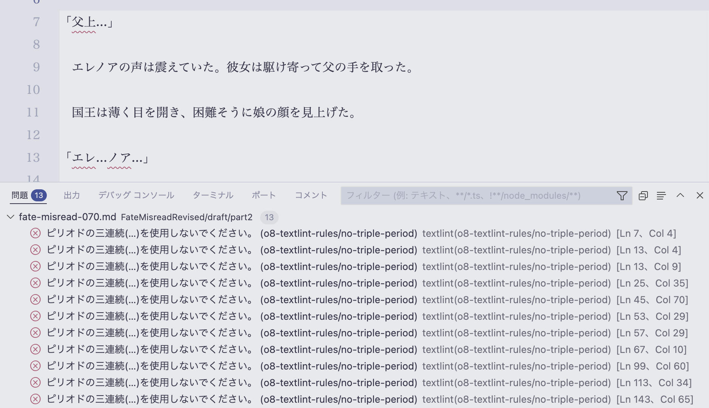

新しい月になりましたね。
noteのメンバーシップに、もっともお得に加入いただけるタイミングです。（noteは「加入日から月末までが初月」という判定）
9月には30記事を超える「メンシ以上なら全文読める」記事をリリースしました。
今月も、思考法、トリビア、トンデモ記事などの通常記事に加え、働かない🦥になって生きていくためのレポートをお読みいただけますよ。
メンシ加入のご検討は以下から。
一緒に、働かずに生きていけるようになりましょう！
折口詠人のメンバーシップ｜折口詠人 @o_eight note.com/o_eight/m…
【重要】noteのメンバーシップ記事の通知機能について、「限定マガジンへの追加時のみアプリ内通知を送る」ように設定変更しました。
（これまでアーカイブ記事追加のたびにメール送信されていたようで、通知が多すぎたかと思います。申し訳ありません）
変更後も通知が多少発生してしまうことがある仕様のようです。その点はご容赦ください。
XのポストしようとしてBufferにばーっと書いて、スケジュールポストボタン押したらぐるぐるぐるぐるしてて何もできないのでこっちに書きにきた。それ以外に伝えることはないので書かないほうがよさそう……。ま、いいか。
Kagi Summarizeという、Webページの要約をするアプリが結構いい。
ブラウザから共有で起動して要約で、通常の要約、箇条書き、5歳にもわかるように説明しての3通りから選べるんだけど、一番いいのは日本語以外の記事を渡したときに日本語でまとめてくれること。
日本語なら読む方が楽しい活字中毒でも、外国語なら要約の方が便利だなあと感じた。
noteで……いや、noteに限らず、これからの世界を生きて行くうえで大事なのは「ファンを作る」こと。
AIで失業率が30%になっても、知的労働者が不要になっても、移民が10％入ってきても、ファンがいる人は生き残れる。
あなたにファンはいますか？ まず最初のファンになってくれる人を見つけよう。
Lumo Plusはより高度なモデルが利用できるようになるなどの特典があるが、サービスイン当時と違って、今は利用されているモデルが書かれていないので、実際どうなるのかは契約しないと試せない状態で、どうしても気になった。
またMicrosoftがBingのキャンペーンで、世界で1人に100万ドル（1.5億円ぐらい？）が当たるキャンペーンやってます。 MSアカウントあって、Bingのモバイルアプリ入ってれば参加は簡単です。期間内の検索回数とか、リンク共有とかで応募口数が増やせる仕組み。
あと16分だ。
re;BON STATEMENT #01 - 所信表明
img.youtube.com/vi/ePFhjE…
www.youtube.com/watch
ボールペンのペン先を作っている国は実際には何カ国なのか？
ボールペンのペン先を作れる国は3カ国しかない——というタイトルのYouTube動画を見かけた。
実際にはどうなんだろうなあと思って、Claudeに聞いてみたら、リサーチ機能を使ってゴリゴリに調べてくれたので（リサーチ機能の利用を選択した記憶がないのでちょっと困惑したが）、せっかくなのでブログで紹介してみます。
引用元のソースがたくさんあったのですが、Markdown形式では消されてしまっているし、PDF形式でもソース元の名称だけでURLとかがなくなっていて、貼り付けできないのは残念。
ボールペンのペン先製造国は本当に3カ国だけなのか
「ボールペンのペン先を製造できる国は世界に3つしかない」という主張は、2017年以前は概ね正確でしたが、現在は4カ国（実質的には5カ国）が製造能力を有していることが判明しました。ただし、この主張の背景には、極めて高度な製造技術と経済的な障壁があり、実際の製造が極少数の国に集中している現実があります。
ペン先製造の現在の状況と製造国
現在、ボールペンのペン先（ボールポイントチップ）を製造できることが確認されている国は以下の通りです：
主要製造国（伝統的な3カ国）
- スイス: 最も高度な製造技術を持ち、20以上の製造工程と最も厳格な要求仕様（加工精度1/1000mm）を実現
- ドイツ: 精密工学と高品質な機械技術で知られ、特殊鋼材の加工に優れる
- 日本: 高品質ステンレス鋼材の主要供給国であり、パイロット、ぺんてる、ゼブラなどが完全な垂直統合生産を実施
新規参入国
- 中国: 2017年に太原鋼鉄集団（TISCO）が5年間の研究開発の末に製造技術を確立。ただし2021年時点でも輸入依存度は80%
- 韓国: Crown Ball Pen社が1965年から独自にペン先を含む全部品を社内製造していることが確認された
「3カ国のみ」という主張の出典と根拠
この主張は2015年から2017年にかけて、中国がボールペンのペン先を製造できない問題が大きく報道された際に広まりました。中国の李克強首相が2015年に「中国は滑らかに書けるボールペンを作ることができない」と発言し、世界的な注目を集めました。
主張の変遷を見ると、2017年以前の情報源ではスイス、ドイツ、日本の3カ国のみが製造可能とされていました。中国が2017年に技術的なブレークスルーを達成した後も、多くの情報源が更新されておらず、「3カ国」という主張が残存しています。実際には、製造設備と実際のペン先製造を区別する必要があり、スイスのMikron社が世界のペン先製造設備の95%を供給しているという事実が、この集中度の印象を強めています。
ペン先製造技術の驚異的な難しさ
ボールペンのペン先製造が極めて困難な理由は、ミクロンレベルの精度要求と特殊な材料科学の組み合わせにあります。
必要な精度仕様
- ボールとソケットの隙間：正確に5ミクロン（0.005mm）- これより小さいとインクが流れず、大きいと漏れる
- 加工誤差許容値：3ミクロン以内
- ボールの真球度：グレード10精度（直径公差±2.5μm、真球度偏差±4.5μm）
- 品質基準：5,000個に1個でも不良品があれば、生産バッチ全体を廃棄
材料の特殊性
ペン先に使用される「ペン先鋼」は、超快削フェライト系ステンレス鋼（S-Pb-Te型）と呼ばれる特殊合金です。硫黄、鉛、リン、テルルなどを精密に制御して添加し、切削加工性と耐食性という相反する特性を両立させています。ボール部分には、鋼の2倍の硬度を持つタングステンカーバイドが使用され、ダイヤモンドに匹敵する硬度と耐摩耗性を実現しています。
製造国の歴史的変遷
ボールペンは1930年代にハンガリーのラースロー・ビーローによって発明されましたが、その後の製造技術の発展は特定の国に集中しました。
1940年代-1960年代: 第二次世界大戦中、英国空軍が高高度でも使用できるボールペンを採用したことで大量生産が始まりました。アメリカでは多くの企業が製造を試みましたが、Reynolds社やEversharp社など大手企業も品質問題で撤退を余儀なくされました。
1950年代-現在: マルセル・ビックがBICクリスタルで大量生産技術を確立し、1000億本以上を販売。しかし、ペン先の精密部品製造は少数国に集中し続けました。
中国の挑戦（2011-2017年）: 年間380億本（世界の80%）のボールペンを生産しながら、ペン先の90%を輸入に依存していた中国は、科学技術部が870万ドルを投資し、TISCOが5年間の研究開発を経て2017年に製造技術を確立しました。しかし、市場での採用は限定的で、2021年時点でも輸入依存度は80%に留まっています。
主要製造国の現状詳細
日本の状況
パイロット、ぺんてる、ゼブラ、三菱鉛筆（uni-ball）などの大手メーカーが、ペン先から最終組立まで完全な垂直統合生産を実施。高精度製造と継続的なイノベーション（ゲルインク、ハイブリッドインクなど）で技術的リーダーシップを維持しています。
韓国の状況
モナミ（153ボールペンで36億本販売）、東亜、Crown Ball Pen社などが活動。特にCrown Ball Pen社は1965年からペン先を含む全部品を社内製造しており、実質的な製造国として確認されました。
ドイツの状況
Schneider、Pelikan、LAMY、モンブランなどがプレミアム市場に焦点。Schmidt Technologiesはドイツ最大のペン用リフィル製造企業。BockとJoWoは世界最大級の万年筆ニブ製造企業として、グローバルに供給しています。
スイスの状況
Mikron社が製造設備で圧倒的シェア（95%）を持ち、世界中で日産2億本のペン先がMikron機械で製造されています。Caran d’Ache、Prodirなどの高級筆記具メーカーも存在しますが、スイスの真の強みは製造設備の供給にあります。
中国の状況
TISCOが技術的ブレークスルーを達成したものの、国内メーカーは実績のある外国サプライヤーを選好する傾向が強く、市場採用は限定的。2017年から2021年にかけて、ボールペン輸入額は1200万ドルから2800万ドルに倍増し、輸入代替の目標は達成されていません。
結論：主張の真偽について
「ボールペンのペン先を製造できる国は世界に3つしかない」という主張は、歴史的には概ね正確でしたが、現在は正確ではありません。
現在の実態：
- 確認された製造能力保有国：5カ国（スイス、ドイツ、日本、中国、韓国）
- 実質的な市場供給国：主に3カ国（スイス、ドイツ、日本）
- 製造設備供給：スイス（Mikron）がほぼ独占（95%）
この極端な集中の背景には、ミクロンレベルの精度要求、特殊材料の開発、高額な設備投資、低い利益率という経済的障壁が存在します。年間数百億本という巨大市場にもかかわらず、ペン先という重要部品の製造が少数国に集中している現象は、精密製造技術の複雑さと、一見単純に見える製品に隠された高度な技術の存在を示す象徴的な事例となっています。
中国の経験が示すように、技術的なブレークスルーを達成しても、市場での採用と経済的成功は別問題であり、確立されたサプライチェーンと品質への信頼を覆すことの困難さを物語っています。
実は最近Kindle Paperwhiteをあまり使わなくなっているのだけれど、読書の頻度が減ったというのを別にすると、なんかMacで読んじゃうことが増えた。目に優しいかどうかだとKindle > Mac > iPhone / Androidだと思ってるんだけど（後者はモニターと目の距離）
まあでも一般人向けという意味ではスマートフォンアプリの方が一般的か……？ でもスマートフォンだったら別にローカルでなくてもいいような……ああでも性格を固定したアシスタントとして使いたいならやっぱりローカルか。
ローカルLLMを簡単に始めるのに、Janは良い選択かもね。OllamaとかLlama.cppを使うのに特に手間取らない人は別として、一般の人でも使い始めるまでに困るところがなさそう。(Mac版しか試してないけど)
Web検索させようとするとちょっと設定が必要だし、デフォルトが進めてるSerperは一般人向けではないような気もするが。
DiaはDia Proという有料プラン（$20/月）が始まったのか。ブラウザに$20/月は難しそうだけどなあ。まあLLMありだとだいたい$20/月ってのが今の価格感だけど、おそらくそうはならないと思うんだよな。
まぁRaycast AIでも開いてるブラウザ窓に対してアクションを起こすAI Commandを作れば全く同じことができるし、ChatGPTならURL渡して同じことすれば同じことはできるけど、Diaのチャット欄は今のところ無料みたいだしURL渡す手間がないからね。
現在のLLMのコストからすると、すべてのアプリにLLMが「別に」組み込まれている必要はあんまり感じないんだけど、将来コストがめちゃくちゃ下がってきたときのことを考えるとまぁ付いてて損はないって感じかなあ。
DiaみたいなLLMチャット欄の付いているブラウザ、実際にはどう利用するものなんだ……？ と思っていたけど、たとえばページについてXでポストしようとするときのタイトル・URLをまとめたものを生成するためのスラッシュコマンド（Dia用語ならskill）を作っておくという作業をすればそれなりに便利なんだなと気付いた。
最近Amazonで買った爪切りガジェットを紹介するよ
最近、AmazonでUSB-C充電タイプの電動の爪切り（爪やすり）を買った。
ひげそりのシェーバーみたいなもので、回転する刃があって、爪が何とか入るような隙間から爪を入れて押し当てることによって爪を削る、というものだ。
USB-C接続となっているので充電して使いやすく、同じような商品が沢山あって、値段は多少幅広い（1000-3000円ぐらい）が、この商品を自分が買ったときには1599円だった。
爪を入れる開口部の縦幅が狭いものと多少広いものがあるようで、子供向けと大人向けで1mmと2mmを切り替えられるものもあった。自分が買ったのは2mm程度だ。
（足の爪を主にメンテナンスしたかったので、1mmだと多分難しいだろうと考えて画像やレビューを読んでそこそこ広そうなものにした）
足の爪はなかなか切るのが面倒というか、あまりよく見えない状態で切ることになるので、どうも深爪したりで巻き爪になっていく恐れがあったのが大分気になっていた。（手の方は特に問題なかったので、手だけなら買わなかったと思う……）
以前、以下のURLにあるタイプの、人力で削るタイプの爪やすり（の改良版で、削りカスの大半が本体に入ってまとめて捨てられるやつ）を使っていたこともあるのだが、これで必要なだけ削るにはかなりの時間が必要なのが難点だった。それが面倒なので結局爪切りで切ったりしていた。
とりあえず試しにしばらく削ってみた感じだが、削っているときと、細かく切るというか欠けるような音（パチパチ）がなるときがあって、後者はちょっとヒヤヒヤする（肌が切れる心配はまったくないのだが、弱くなっている爪が振動とセットで割れたりしないよな……？ と不安になるという意味で）。
低速回転と高速回転があるので、小指などの爪が伸びているときは低速でゆっくりやろうと思っている。（短くなってしまえば高速回転でも心配はないと思うので、頻度高めに使っていれば大丈夫そうではある）
レビューにも書いてあったが、若干削りカスが周囲に飛び散ってしまう（ちなみに爪に当てる向きが重要っぽくて、上下を逆にするとまき散らしてしまう……）のだが、まあ許容できる範囲かなあと思っている。
あと、仕上がりは多少荒くなってぎざぎざが残ってしまって、布などにひっかかることがあるので、仕上げには細かいやすりを使って削った面を調えたほうがいいかもしれない（仕上げのとき、かるく当てるようにして削るのでもよさそうだが）。
購入したモデルは非常にコンパクトだった。写真を見た感じ、完全ワイヤレスイヤフォンのケースぐらいはあるのかと思ったが、それよりも小さかった。
どれぐらい耐久性があるのかは分からないが、Amazonで1599円にしてはなかなか楽しめるガジェットではある。（アリエクとかTemuとかの、中国から直接買える系のショップだと多分700円ぐらいだろうなぁ……という気もするが）
筋膜リリースガンとか、電気シェーバーとか、電動爪やすりとか、この手の最近強力になったリチウム電池+モーターの組み合わせの商品は、意外と生活が便利になるのでおすすめ。バッテリー容量は公称値300mAhなので、多分爆発するようなことはないだろう（発火はあるかもだが……それこそ完全ワイヤレスイヤフォンのケース程度の危険性だと思う）
今まで解決が難しかったAIに小説を書かせるときの課題がClaude Codeのサブエージェントで解決しそうな気がするので試してみてる（まだ肝心の試すところまでは行ってなくてその周辺の作業をしているが）
AI使ったアプリ作りたい→買い切りむずいし利用量のトークン課金も大変だし広告という手はあるけど→なんかミスって想定外の費用が発生するのが怖いよなぁ→呼び出し用のサーバーを作っていざというときは止められるようにしないと→でもそうするとアプリとして機能不全になる可能性があるということで……→あれ？ Webアプリにしたらいいのでは？
lumo by Proton https://lumo.proton.me/about
これです。
ProtonのAI(LLM)サービスのLumo、猫デザインが可愛くて心揺れてる。無料プランあり、月12.99ドル/ユーロで年契約で月9.99ドル/ユーロだからサブとしてはなかなかいいよね。macOSアプリ欲しいけど。あとメモリ機能は欲しいな……。
まあ結局ChatGPTに戻ってきそうではある。Claude MAXのサブだから$13ぐらいがありがたいのはあるんですけどね……。
povo AIでGPT-4oが無料で回数制限なしで使えるやつ、お得だなあと思ったものの、自分が月8ドルを追加してRaycast ProからAdvanced AIに変えずにChatGPTに戻ってしまうのは、画像生成と音声対話機能とメモリ機能とmacOS版のGUIアプリの使いやすさによる部分が大きいので、GPT-4oだけ使えてもダメだな……となった。
せめてClaudeが日本語音声対話機能があれば……でもMAXの分全部Claude Codeで使ってるような状況だし、Claudeの利用を増やす気にもなれないところだ。むずかしい。
Kagiの新しいニュースサイトのKite、なぜか日本カテゴリの記事だけ自動翻訳設定が効かずに英語のまま……という現象があったけど、ようやく直ってきたっぽい。Discordあたりで誰かが報告してくれたのかな。
作ってたアプリをAppStoreで公開するちょっと手前までいってるんだけど、XcodeでビルドしたやつをApp Connectにディストリビュートしても一切ビルドに出てこないのなんでなんだろ……ないと思うけどBundle ID明日再確認しようか……。
miseを導入してみた
Hugoで新しい記事を書くためのコマンドに以下を使うようにしたのだが、たまにしか書かないと履歴からなくなって面倒だ、ということに気づいた。
|
|
Raycastのスニペットにも入れていたのだが、入れていたことを忘れてしまっていたので、どうしようもない。
それで、ちょうどX（だったと思う）で流れてきた記事を見習って、miseを導入してみることにした。
ターミナルを使う人は、とりあえず「mise」を入れておく時代。 ・・・を夢見て。
https://zenn.dev/dress_code/articles/a99ff13634bbe6
インストールして、プロジェクトローカルにmise.tomlを置いて、以下のように書くだけでよかった。するとあとはmise runだけで選択可能になるので、細かいところは忘れてしまってよい。便利。
|
|
グローバルに入れたいnodeのパッケージとかについてもmiseに管理させようと思っている。
Getting Startedはここ
https://mise.jdx.dev/getting-started.html
Claude CodeくんがSwiftとCoreGraphicsあればPSNR/SSIMを外部ライブラリを組み込まずに実装できるよ、実装してみるねって言い出してるけどホントか？ PSNRのほうはそこまで難しくはないらしいけども……。
Xとかで世論形成をする系のbotが暴れてるよって話……Xの報酬制度が始まって以来、PVを稼ぐためには何をしてもいい世界なので、有料の認証マーク付いてるアカウントの方が言ってることが本音かどうか信じにくくなってる。
かといって無料のままだと一時機能停止くらったりなんだりで制限激しいのもあって、マイクロブログSNSとしてはシステム的に終わってるPV稼ぎの遊び場なので、そもそもXに世論なんてないんでは？ と思っている。
ハード的には操作パネルとかついてるSwitchBotのが魅力あるんだけど、エアコンの操作をすごいガバにしかできないのが困りものだった。
あと、最近になって、そろそろAlexa/Echoをスマートホームの中心にするのをやめてHomePod miniに一本化するか……と思ってたのもあるし、Appleの方をNature Remoにして徐々にAlxea使うのは止めていこう。
プライムセールでNature Remo nanoを買った。SwitchBotが既にあるんだけど、ダイキンのエアコンの対応具合とかがNatureの方がいいんですよね。
昔両方あって、Natureが先に壊れて、Matter対応もあってSwitchBotに一本化したんだけど、エアコン対応がよくなくて。
Kagiが手掛けている新しいニュースサイトがちょっと良さそうなので。ニュースを探したり読む時間を減らすというコンセプトで、更新は1日1回（でもなさそうだが）、数はデフォルトでは10になっている。
できたばかりのベータなので言語設定した初日は翻訳されない（あるいは記事がない）ような……翌日から読めるようになった。RSSがちゃんとある。
DuckDuckGoのDuck Addressいいサービスだなあ。基本の転送メールアドレスを一つ作れて、そこに転送するアドレスをランダム生成でいくつも作れるっぽい。
FastmailとかiCloud+でもできるけど有料なので、無料なのは嬉しい人多そう。サービスごとにメールアドレス分けるべきですからね。
Keychron B1 Pro、とても満足しているんだけどちょっとだけ最下層のキーが思ってる位置と違うんだよな。（Apple純正と違うということ）
まあ当然違いはあるんだけど、1のとなりに半角/全角があるほうが違和感でるかと思ってたけど、Commandキーあたりで出るとは思わなかった。確かにちょっと違うんだが。
Amazon Primeの先行セールで約24000円のPOCO M7 Pro 5Gをポチった
Amazon Primeの先行セールで23000円台と、かなーり安かったのでXiaomiのPOCO M7 Pro 5Gを購入した。
元々、moto g13をiPhoneの予備機というかサブ機として使っていて、最近性能面でちょっと辛くなっていたのと、ガラスに少し擦り傷ができていたので、リプレースする端末を探していた、という背景があった。
moto g13は2年ほど前に購入した端末だが、購入時に割引があって20500円程度だったので、ほぼ同じような
価格帯の端末、ということになる。
できれば1万円台の端末を考えていたのだが、Antutuというベンチスコアで同じぐらいの性能になってしまうのは嫌だったので（moto g13は当時のAntutuでスコア25万ぐらいだったはず）、Antutuが45万程度出るXiaomiのPOCO M7 Pro 5Gは非常によかった。
また、ハード仕様もmoto g13の4GB/128GBという構成からPOCO M7 Proは8GB/256GBとなり、IPS液晶から有機ELになって、Dolby Atmosのスピーカーはそのまま、イヤホンジャックも変わらず存在して、液晶サイズも6.5インチから6.61インチぐらいの非常によく似た感じなのもよかった。純粋なアップグレード感覚でいけそうだ。
本音を言うと予備機もiPhoneにしたかったのだが、USB-Cの端末が欲しかったのもあって、コスト面でどうしても折り合いがつかなかった。まあAndroid端末があればAndroidのアプリを作れるのでいいのだが……。
とりあえずちょっと触ってみた範囲だが、性能面では文句なしで、2年ぶりの更新にふさわしいぐらいの性能アップ感はある。
まあ一番のポイントは今のPrime先行セールのおかげで安い（おそらく通常は29,980円で、多少セールでも26,000円台だと思う）というところなので、セールのうちに記事を公開しておこうと思う。
サブのAndroid端末をMoto g13からXiaomi POCO M7 Proに更新しようかな……できれば1万円台の端末にしたいがそれだとAntutu変わらないぐらいになるし、Amazonのセールで2.4万円でAntutu 2倍ぐらいになるんならところどころモッサリした挙動も改善されそう……あと液晶のガラスにちょっと気になる擦れ傷入っちゃってるのでそれも改善するし。
Keychron B1 Pro、使い続けてるけどなかなかいい感じで、タイピングの違和感（ふにゃふにゃ感）もだいぶ気にならなくなってきた。クーポン込みで6500円ぐらいで入手したことを考えれば星5つだな。
今日からサブブラウザをSafariにしてみよう……メインはまだOrionで。
Chrome系のほうがコンプレッサー使えるのがよかったんだけど、機能拡張でやるんじゃなくて、Audio Hijackを採用してOzone 11 Elementsを通すようにしたので、分割ウィンドウぐらいの利点しかなくなってた。
がっつり長文メモみたいな用途は、スマホ+音声入力でやるのが多分一番いいと思うので、小さいメモ帳でいいんじゃないか説です。6穴のシステム手帳はジャストサイズ感がありつつも、ペンを外側につけると、ちょっとだけ大きいんですよねぇ。
プロッターの方がジッパーのクリアフォルダーに薬とか入れておけるので……と思ったけどロルバーンミニごと入るジッパーケースとか買っても普通にポケットに入るよなぁ。革小物の方がテンション上がりますよねみたいな差しかない気がする。
リリプット、ボールペンはノック式しか持ってないけどキャップ式買おうかなあ……とちょっと思っている。万年筆は沢山（わりとガチで沢山）持っているんですけど、まあ結局ボールペンの方が潰しが効きますからね……。替え芯をビニールポケットとかに入れとけば安定するし。
まあ万年筆でもシュナイダーのカートリッジインクとかだと、入れたまんまキャップ締めて放置で半年ぐらいは普通に書けるようなので、それでもいいかもだけど。
その一方で、メモ帳にはロルバーンミニがやっぱりいいのでは？ となった。リング部分にクリップをつけてないカヴェコのリリプットがきっちり入るんですよね。多分落ちることも基本的にはなさそうというか、服のポケットに入れて使うことになるだろうから完璧だと思う。
ビニールポケットにコンビニの割引券とか入れて、なんなら念の為に5000円ぐらい入れとけばスマホとセットで持ち歩いて財布としても十分では……みたいな。プロッターのミニ5穴でもいいんですけど、コストとか考えるとロルバーンミニでいいんじゃないかと。
まあ、物理のメモ帳なんてほとんどいらないんですけどね……。
これで気になるのはタイピング感覚だけになったし、しばらくこれ使ってみるか……シリコンゴムのカバーもついてて、レビューだとUS配列のカバーついてて合わないみたいなの見たけどちゃんとJIS配列のがついてたから、これつけたままタイプするかなあ……つけたままタイプするのはいやではあるんだけど、最近たまに水をバシャーすることあるし、元の感触がそもそも微妙だし、使わないときだけカバーするの面倒だし……。
Keychron B1 Proの上のメディアキーのうち、輝度ボタンがMac miniの外部ディスプレイに対してうまく反応しなくて、調べたらMacは普通のキーコードじゃないらしい（ChatGPT）という情報と、外部ディスプレイはKC_SLCKとKC_PAUSに割り当てたらよくなったよという情報（Reddit）があったので、後者を割り当てたら期待通りに機能するようになった。
https://www.reddit.com/r/Keychron/comments/1034z92/brightness_keys_mac_external_display
Keychron B1 Proを衝動買いした
Keychron B1 Proというキーボード（https://amzn.to/4lv1WO1）、昨日Amazon見て衝動買いしたんだけど、何がいいかってキー配列がだいたいApple純正と同じで（重要）、でもAの隣がControlじゃないなーって問題もリマップツールで変更できるし（超重要）、Apple純正みたいな小型&薄型。
そしてBluetooth, 2.4GHz無線, 有線接続（USB-C）に対応してて、MacとWinの配列変更がスイッチでできて、バッテリー持ちが良くて、それでもって7500円ぐらいとApple純正のほぼ半値（Touch ID付きのと比較すると1/3ぐらい）なんですよね。
ポイントがちょっと付くので実際にはもう少し安いし、通常カラーだとさらに安い。
そろそろApple純正をUSB-CにしたいけどTouch ID付きだと2万かぁ……どうしようかなー、でも古いのへたってきてるし予備機なし状態なんだよなあ……と思っていたので、予備機として一台入手した。
個人的にはカラーはレトログリーンが欲しかったけど、在庫なさそうだったのでレトロレッドで。
冷静に考えるとダンボールの中にHHKBとRealforce閉まってあったなあと気づいたけど、Realforceはテンキーレスでもでかいし、HHKBはカーソルなくてUS配列だから慣れ直すのが面倒、なにより薄型の方が個人的には好きだったのでまあいいんじゃないと。
……サイズが少しApple純正より大きいのは承知の上で買ったけど、タイプ感だけはかなり期待外れだったなあ（シザー方式って言うけどなんかふにょふにょしてるし、ストロークが案外ある。まぁストロークはApple純正がなさすぎるのかもなんだけど、ふにょふにょしたキーを長く押し込むのって楽しくないし意味もないと思うんだよね……）。
リマップツールの画像貼っておきますね。ツールというかWebサイトになっていて、アクセスして使う形。提供元が廃業したらサイトなくなりそうだけど、まあそのときはApple純正使ってるだろうし……。
Raycast AIを一つプランをあげて、もう少し好きにLLMのモデルを使い分けるようにしたい気持ちはあるんですよね。だから悩んでるけど……まあChatGPTでいいといえばいいんですよね。Claude MAXが一番最初に予約されてるから、残り一個をどうするかという話なんですが。
アシスタント的に使うLLMにはメモリ機能があったほうがいい、と思ってSupermemory MCPを試してみてるんだけど、対応環境だと導入はうまくいくんだけど接続時にエラーになって、他のMCP対応アプリだとインストール時にエラーになったりしてなかなかうまくいかない。
Mem0のMemory Toolはそれなりに動くけどプラン的にずっと使えるのかな？ というのがあったり、ちょっと複雑かなあと思うとこがあったりして。
結局それなりのコストかけるんなら「まあそこはChatGPTでいいか……」ってなるのが難しいとこですよね。
MP3が一般に展開されたとき、128Kbpsだったけど、なんで128Kbpsを押し出したんだろう。256Kbpsとまでは言わないが192Kbpsか160Kbpsでスタートしていたら、もっと音がいいという印象だったのではないだろうか。
改めて紹介
友達から5,000円のクーポンが届きました！送料·サービス料が何度でも無料のフードデリバリーRocket Now。今すぐ登録するとクーポンもらえる! *アプリをインストールしても5,000円のクーポンが確認できない場合は、下記のリンクに改めてアクセスしてください。登録リンク： share.rocketnow.co.jp/WbE6VKmpA…
この記事を前提として話すんですけど、Claude Codeで小説を書かせることで昔のClaude 3.7 Sonnetでやってた頃より、さらに一段階クオリティがあがりそうなので、AIの世代があと2-3世代後になったらマジで小説はAIに書かせた方がよさそう。
note連携を一部記事だけにしていたので、全記事になるように設定を変更した。 ただし、前に書いたのまでは連携されないみたいなので、手で書いておきますね。
Sonnet 4世代のClaude Codeで小説を書くとどうなるか｜折口詠人 note.com/o_eight/n…
Claude CodeでSonnet 4で小説書くの、3.7 Sonnetのデスクトップアプリ+MCPとかGithub Copilotで書いてた頃とはだいぶ違う感じになる。4は3.7と比べて余計なことをしない傾向がやっぱり関係してると思うんですよね。
シンプルかつ端的に解を出そうとするから、小説だとちょっと都合が悪いことが多いんだけど、それを意識して指示してやれば急によくなる。適当な指示でなんとなく良さげな小説を書いてくれていた3.7と比べるとちょっと使い手の技術が問われるかもしれない。結果的に得られるものの質は高くなったと思うけど。
Claude Codeでの小説執筆は非常によくて（最初の感触は「は？」だったけど）、特に伏線関連の処理を後からやらせるとうまいなあと思うんだけれども、監督役の人間の方に「アップデートされた物語に対応するまでの消化時間が必要」なのが困る。
プラットフォームによってはうまく貼れてないかも。 その場合はこちら。 https://open.spotify.com/intl-ja/track/5IMgaerTTAv8Tthwi4OHZM?si=01779e02dcd74a24
Claude Codeでコード書くの楽しくて半ばできかけてるアプリ二つあるんだけど、なんか違うのもやりたくなってるし、そろそろ小説やるべきだなと思って（契約更新が近かったので使っておくかと……）、最近は小説を書かせている。Claude Codeで書かせる時はすこし考え方変わるかなと思ったけど、Claude Opus/Sonnet 4系の違いのような気もする。
忘れないように書いておくけど、MinecraftのVibrant Visualsのアップデートが来たので、マイクラでスローライフ生活を配信でやりたいと思っています。3D酔いのリハビリ・耐性付けも兼ねて少しずつ。
これは覚えておきたい。複数出力装置って作れるの知らなかった。
Macで内部音声付きの画面録画をするには？BlackHoleの導入方法（M4 Mac対応） #MacOSX - Qiita qiita.com/halapolo/…
XユーザーのUNLIMITさん: 「『AJITO BY UNLIMIT』本日21時からです！💥 ぜひお楽しみに！！！！👀 ▼公式配信はコチラ！▼ https://t.co/Kl3qCslq36 #AJITO #UNLIMIT」 / X https://x.com/UNLIMIT_UNL/status/1936988760476127562
ロケットナウ、結構真面目におすすめかもしれない。まあまだ最初のクーポンでお得なだけなんですが。UberEats高すぎるんだよなー。
友達から5,000円のクーポンが届きました！送料·サービス料が何度でも無料のフードデリバリーRocket Now。今すぐ登録するとクーポンもらえる! *アプリをインストールしても5,000円のクーポンが確認できない場合は、下記のリンクに改めてアクセスしてください。登録リンク： https://share.rocketnow.co.jp/uH4gLM4QqUb
Github Copilot Pro、今ほとんどコミットメッセージの生成ぐらいにしか使ってないけど、コミットメッセージ生成がすごい遅いことありません？ 11ファイルの変更程度でここまで遅いのも謎だが……。
と思いつつ取り出してつけてみたけど、今回はうまく充電できているか？ バッテリー不具合だと面倒だけどまあ接点っぽいな……これiPhone用にしようかな、そっちのほうが左右のバッテリーの状況見やすいし。逆に今iPhone用にしているのをMac用に……。
そういえばSoundpeatsのPearl Clipがよかったから買ったPOP Clipのほう、接点がちょっとアレなのか充電に不具合が微妙に発生していて、初期不良で交換申請するか……いやでも面倒くさいなあ、ってなってる。
app-ads.txtが取得できないのが気になるけど、App Storeの最初のドメインと変わったし、7日ぐらいはクロールできない場合があるって書いてあるからもう少し待ってみるかという感じ。自分は普通にアクセスできてるしな……。
「書けた」はミスリードでChatGPTに「書いてもらった」んだけど。最初はClaude Codeにやらせてみようかと思ったけどセッションの無駄遣いだよなあと思ってやめた。小説をそろそろやらせてみたい。
9ピンのマグネット式のUSB-Cコネクタ
9ピンのマグネット式のUSB-Cコネクタを買ったら大変に便利だったので、いつか記事を書きます、と言ってそのままになっていた。
自分で書くのは面倒なのでChatGPTに書いてもらうことにした。だいたい書きたいことは書けてるのでよしとします。
ちなみにこの手のマグネット式コネクタ、便利そうとは思っていたものの規格的には当然USBではないので、一旦様子見をしていた（ら、まあ初期は問題も報道?されてましたね）のだが、そろそろこなれてきただろうと思って買ってみた、というのがストーリーとしてある。わりと石橋を叩く性格です。まあ壊れてもいい機器から導入する手はあったが。
では、本文に入ります。
⸻以下、ChatGPT
Pros（利点）
-
物理的な保護
• ケーブルに引っかかってもマグネットで外れるため、ポートやケーブルの破損を防止。
• USB-Cポートの摩耗を軽減し、頻繁な抜き差しによる劣化が減る。 -
使いやすさの向上
• 近づけるだけで簡単に接続・取り外し可能。
• 暗い場所や片手での操作がしやすい。
• 接続時に向きを気にしなくていい。（重要） -
ポートのホコリ対策
• マグネット側（デバイス側）に残るプラグがポートのカバー代わりになり、ホコリやゴミの侵入を防ぐ。 -
MacBook MagSafe的な安心感
• Appleの旧式MagSafeのような使い心地が再現でき、事故防止・安全性向上につながる。 -
一部は高速データ転送対応
• 9ピン以上のタイプであれば、USB 3.x相当の高速通信（最大10Gbps）やPD充電（100Wまで）にも対応するものがある。
Cons（欠点）
-
品質のバラツキ
• マグネット接点が多いため、安価な製品は接触不良や発熱が起きやすい。
• 長期使用で磁石の脱落・ズレ・端子の酸化が起きる場合がある。 -
データ転送に制限がある場合も
• 製品によってはデータ通信非対応やUSB2.0止まりなどもある（見た目は似ていてもスペック差が大きい）。
• DisplayPort Alt Mode（映像出力）に対応していない製品も多い。 -
汎用性にやや欠ける
• 特定のアダプターとケーブルの組み合わせでしか使えないこともあり、他のUSB-C機器との互換性に制限がある。 -
磁気干渉のリスク（微小だが）
• 強力な磁石を内蔵しているため、カード類や磁気に敏感なデバイスとの近接は注意。 -
本体の突起が気になることも
• 差しっぱなしにすることでUSB-Cポート周辺に出っ張りができるため、ポーチに収納するときなどに邪魔になる場合も。
総評
おすすめユーザー：
• ノートPC、スマホ、タブレットを頻繁に充電する人
• デバイスのポート保護を重視する人
• 充電事故（引っかけ事故）やケーブル断線を減らしたい人
選ぶ際の注意：
• データ転送・映像出力・PD給電の対応ピン数とプロトコル仕様を確認することが重要です（特に「9ピン」以上推奨）。
• ブランドやレビューで接触の安定性や発熱の有無を要チェック。
⸻ここまでChatGPT
個人的にはスマホの充電ぐらいだし、9ピン未満や16ピン以上だとコネクタの向きを回転させられない（首振りはできる）製品もあるので、回転・首振りができる9ピンのがいいんじゃないかなあと思う。7ピンとかでも似たようなのがあるのでご注意ください。
私は、この手のものはOEM製造などを考慮して、高くはないけど安すぎもしないメーカーのを買うようにしているので、VAFOTONで大体揃えているが、ベストな選択かどうかはわからない。
（価格が高い場合は、OEMに製造してもらったのを売ってる代理店みたいなビジネスで製造品質とあまり関係なく値段が高くなっている可能性があると思っているし、安すぎる場合は製造時に基準値以下のやつを仕入れて売ってるパターンの可能性があると思っている。このように価格から推測していく方式だと、安すぎる製品なのにそこそこの値段をつけて売るメーカーとかに引っかかる恐れはあるのでレビューも読みましょう。レビューの読み方は低評価の内容が妥当かどうか——「それは利用者のミスでしょ？」みたいな内容のものを除外して、製品に不安があるレビューがどの程度あるか——をチェックします）
で、スマートフォンではこの手のコネクタが大変よかったので、今度はノートPC用にHDMIのマグネットコネクタを買ってみたところだったりする（まだ使用してはいない）。
2025-06-21追記
スタートアップとかの文脈で、すでに製品やサービスがあるからもう需要がないと判断するのは間違いで、むしろそこには確実に需要があるからバリエーションでなんとかなる市場性があるんだ、って話がされているし、物語だと「同じだけど違うもの」をみんな求めているという話あるよね、と思ったりした。
AIがさらに優秀になったらアイデアだけでアプリが作れて、でもそうなると凡庸なアイデアには意味がなくなるのでは？ というXで見た話に対して。
コードを一切読まずに、バイブコーディングだけでバグフィックスするの難しいな……まさかそんなミス（完成時から後退で問題を作成する時に、パズルを解く時と同様に、「他の色には重ねられない」「同色の連続は一気に移動する縛りあり」）をしてるとは思わないわ……。
特に他に色に重ねられないやつを「解法時と生成時は条件を別にしないとただしくパズル作れないけど、もしかしてこれやってない？」って指摘したら「指摘の通りです、そうしていました」と回答して修正したあとで、同色の連続を一気に移動させるもやっていたとはね……。それは何もやってなくて移動してるだけじゃないか。
iPhone 16e、サイドがなんとなくベタベタするんだけどなんでだろう。拭いたりウェットティッシュで拭いたりしてもわりとすぐになんか違和感が発生する……SE 2とかのときにはあんまり感じなかったんだけど、サイドが平たいかどうかの違いなのか金属素材か加工の違いなのか……。
【APEX】ASGSスクリム#1 ｗでんでん・シンちゃん【碧依さくら】 www.youtube.com/watch チャンネル: 碧依 さくら (https://www.youtube.com/@aoi_sakura3) サムネイル: i.ytimg.com/vi/6dVt49…
Unityで遊んでたやつ、よし、リポジトリ作ろう、ぽちっとな……したら3万ファイルとかあってやべっとなった。でもこんなやらかしをしても、AIにごめんだけど適切に.gitignore作り直して対応してというだけでよしなにやってくれる。（まあこれは自分でやっても大した手間もないが……）
肉の間隔がなかったり、冷凍の解凍具合が悪かったりすると生焼けが発生するんだろうけど、冷凍→解凍→焼きで生はまあ衛生的にはそこまで致命的ではない気もするが……でもねえ。肉の感覚が足りないのはなんかこうあれですよね、消費者が求める見栄えで詰めるのが増えてるというか。
近くに焼き鳥屋ができたから時々買ってるけど、手元の方の肉にかなり生っぽいのが……前に近くにあった焼き鳥屋も時々生っぽいのがあって……焼き過ぎがよくないのはあるけど、鶏肉とか豚肉なんだから火入れはミスらずにお願いしたい。
Apex Legends Global Series Year 5：Split 1 【APAC North Pro League Regional Finals】 www.youtube.com/watch
Kagiいいんだけど、やっぱ$10がなーってなってる。検索頻度多いから$5だとちょっと辛いんだけど、一旦検索バーのデフォルトを他の検索エンジンに当ててみて、ちゃんと検索したいときだけ使うようにしようかなとか。（なんだかんだ最近はAI経由の検索も増えてきているし）
検索バーのデフォルトにしてあると検索するつもりじゃないときも検索しちゃうんですよね。とりあえずタブを新しく開くためになんかキーワード入れちゃうみたいな。
【雑談】ASGSのBANキャラが本日決定するよおおおおおおおおおお！！！【碧依さくら】 www.youtube.com/watch チャンネル: 碧依 さくら (https://www.youtube.com/@aoi_sakura3) サムネイル: i.ytimg.com/vi/nGc6MF…
VercelとかGithub Pagesとかもあるんだけど、自分のGithubがこの名義でアカウント作ってるからなぁ、と。一人が複数無料アカウントを使うことは認められていないんだよな。社用と個人用は許容されてはいるらしいけど。
Micro.oneは月1ドルなのでね……Micro.blogのプランをあげて別アカウントと別ドメインを使えるようにする手もあるけど、最上位プランは月に$10かかるので、別に1個増やすほうが楽かなという感じ（規約上は問題ないっぽい）。
App Storeでアプリを提供するときにサポートサイトが必要で、まあとりあえずページ一枚でいいから雑にやったんだけど、実名の方でもサイト作るか……ってなって、色々方法考えてるんだけど、安く上げるならGitLabにCloudflare Pagesで独自ドメインだけ払う方法、それなりにパブリッシングを考えるならMicro.blogのMicro.oneを別契約して独自ドメインは払うぐらいかなあ……。
GUIの色と形はどうせ慣れるしあんまり興味ない（配置は気になる）、ぐらいの感覚なのでiOS26のGUI変更、来たら早く対応したいよなー程度にしか思ってなかったけど、ガラス風って聞いたから磨りガラス風だと思ってたら透明ガラス（というよりリキッド？）な感じなんだね。
Apple Developer Programに登録したらmacOSのアプリも配布できるのいいよなと思っています。macOSって意外と最近はアプリ足りないイメージある。あるのはあるんだけど、あれこういうのないんだ……とかストアじゃなくて野良配布なんだ……みたいな。まあ野良配布は悪いわけではないが。
Claudeの思考予算関係のマジックワード、いくつかあるけど、通常より深く考えさせたいときに、文章書いて最後にthink（小）, megathink（中）, ultrathink（大）って足すのでよくない？ と思ってるけどどうなんだろう。実際に効いてるのかな。
Apple Developer Programの登録でエラー。登録する前に読んだ体験記みたいなもので、よくエラー（というか個別の処理）になると聞いていたので、まあしゃーないとサポートに問い合わせる。半角で名前入れろって出るけど、身分証明書に書いてある公式の名前入れろって書いてあるし身分証明書送るし、そりゃ照合不可能だよな……とは思う。
Stable Audio、ゲームのサウンドには使えない（エンタープライズプラン以上でお問い合わせください）ってライセンス、なんでだろうな。MAUベースの制限があるやつで十分だと思うけど、インディー開発者とかがスコープに入ってないのか。動画作成とかには使えるのにね。
画像の加工めんどい。透過の背景とキャンバスサイズはそのままで、アイコンだけ縮小とか、その逆とか、そういうのってAIで指示できるようにならないかな……GIMPだとパワフルすぎるし、Setappにあるやつは単機能すぎるしでバランスが悪い。
ゲーム的なものを作るときは、ちょっとした画像とか、ちょっとしたサウンドも必要なのでClaudeだけだと完結しないな（サウンドはこういう素材が必要なので、こういうライセンスで提供してるとこ探してって言うと探してくれるけど）
今一個ゲームアプリ作ってるんだけど、これApp Storeで公開するとしたら実名でアカウント作ることになるしこのアカウントでは宣伝もできないんだなと思うと、なかなか面倒くさいなあとなってしまった。オーディオも必要だし。
Claudeのプロジェクトナレッジに登録できるデータ量が10倍に増えたやつ、前はコンテキストサイズぐらいで制限されたのかな？ 必ずしも毎回全部読まなければコンテキストサイズはそこまで意識しなくていいわけで……ともかく、いちいち共有するデータを再設定して変更しなくてよくなったのはだいぶ助かる。
CodexがChatGPT Plusに降りてくるニュース、詳しく背景は見てないけど、これまでOpen AIは資金が潤沢なので使用制限が結構緩めで、Anthropicはそこまで余裕ないのか使用制限が厳しめに感じとれていた。
んで、Claude CodeをMAX（$100以上のプラン）で解放したAnthropic（Claude 4）に対抗するために、CodexをChatGPT Plusでも提供するしかない、と判断したという印象を受ける。（確かCodexはo3ベースだからminiのほうはともかく通常版のモデルは高いだろうから、$20のプランで使わせるのは厳しそうだけど……）
【歌ってみた】コールボーイ【碧依さくら】 www.youtube.com/watch
前に買ったDungeon Antiquaやってる。紹介みたときに良さそうだと思ったけどいいね。 RPGで、2Dのダンジョンで、戦闘画面は横表示の2D時代のFF風、ジョブや魔法やウィザードリィ風で、ゲームバランスもウィズ風かな。ミニマップかオートマップ欲しいなとちょっと思った。RGB30とかにPlumOS入れてもできるらしいんだけどセットアップするのはちょっとめんどいかなあ……。Steam(MacやSteam Deckも対応)で、iOSとAndroidでもできる。
Xユーザーのe-elements【公式】／DREAM MATCH【公式】さん: 「／ 🌸碧依さくらPRESENTS 『#ASGS YEAR2 Split1』 参戦決定リーダー発表 第1弾 📢 ＼
💥参戦メンバー続々発表予定💥 発表をお楽しみに ✨
🏆 大会スケジュール （ESCL公式YouTube） ■ GROUP STAGE ：6/20, 21, 22 ■ BRAKET STAGE：6/29, 7/2, 5, 6
▶最新情報はこちら！ 🌐 t.co/r7mJBlm8m…」 / X x.com/e_element… サムネイル: abs.twimg.com/responsiv…
紙上の迷宮 #38
# 第38話：書かれなかった投稿
以下の文書は、狩谷隆志の遺したノート、手帳、および音声メモから再構成されたものである。日付の記載はなく、断片的な記録のみが残されていた。全ての文章が彼自身の執筆かどうかは確認されていない。
続きをみる
実は一番やばかったのが最初で、プロジェクト名つけてプロジェクト生成したあとでClaude Codeを起動したらプロジェクト名から「なるほどこれを作りたいんですね」で実装を始めたところ。（しかも間違ってなかった）
なんだっけ、男性の方が胃腸は繊細な傾向が高いんだっけか。まああとセロトニン受容体とかに作用する薬を飲んでいる場合が多いのは胃痛が起きやすい理由として間違いなくあるだろうな。流石に人体はここまで胃が弱くないと思う（胃の病気がある場合は別ですよ、自分の胃は健康体だから困っている）。
柑橘系は胃が痛くなりやすい、炭酸系も胃が痛くなりやすい、辛いものも痛くなりやすい、カフェイン系も摂りすぎるとよくない（ただしカフェイン過敏の場合もあるので胃の症状とは言いづらい）、冷たいものが非常に好きだけど調子によってはこれもよくない。アイスと油物と辛いものはお腹を壊しやすいので注意。生にんにくもよく壊すし胃も痛くなりやすいので注意。ぐらいのルールで生きている（厳しい）。
紙上の迷宮 #37
# 第37話：最終投稿の招待
朝日が窓から差し込む部屋。清水まどかがスマホの通知音で目を覚ます。ほぼ同じ瞬間、山間の一軒家で小牧澄人がパソコンのメール着信音に気づく。古書店の奥の部屋では、長谷川樹がコーヒーを淹れながらタブレットの画面を見つめる。大阪の静かなアパートでは、アマンダ・フィッシャーが書道の道具を片付けつつ、パソコンの前に座る。鎌倉のシェアハウスでは、伊吹杏奈が朝食を取りながらスマホに届いた通知を確認する。
続きをみる
Amazonのノンカフェインのブレンド茶、いまのところ大変いいんだけど流石に飲みすぎると電解質バランス悪くなったかな……みたいな感じの説明し難い感覚になる。（自分はドリンク飲み過ぎマンなので、いろんな飲み物で失敗している）
大事なのはチェックと早めの軌道修正だから、話単位のプロットに入ってあれこれするのはあんまり意味ないんですよね。でもなんかそこまでいかないと見えないものもあるのが大変。自分がまだ「見えない」作者なんだよな。
とりまアップグレードできたから、この小説のプロット最後まで書かせて、原稿も試しに書いてみるか（なんかプロットを読む気力があんま起きなくてプロットの精査足りないまま本文に入る癖がついてきて非常によくない）
ClaudeでMAXに切り替えようとしてもエラーになっていた件、今Claudeが「上限近づいてきたので気をつけて (MAXに登録)」みたいな感じでメッセージとボタンを出してきたので、ダメ元でやってみたら切り替えできた。昨日から今日の間でなんか直ったか、ボタンからのアップグレードはできるのか。
Claude Sonnet 4になって、（おそらく）だいぶ素直に書くようになっているはずなので、気合い入れて企画を練るいいタイミングかもしれない。3.7の頃はClaudeの創作性がね……こっちの意図を超えて発動しがちだったから……。
Claude MAXでClaude Codeで小説を書いてみたかった（Claude Desktop→Claude CodeじゃなくてClaude Codeで直にやらせてみたかった）んだけど、この土日にはできない可能性高いなあ……。
Micro.blogの思想は端的にいうと、中央集権型じゃなくてみんなが自前のマイクロブログ（やブログや写真投稿やPodcastや書評）を持つようになったら、昔楽しかったころのWebが復活するよね、みたいなやつなんですよね。それを簡単にするためのサービスなので、なんかこうWeb 2.0とか言ってたころによくある機能がたくさんありつつお安い
Micro.blogはかなり良いサービスだと思うものの、公式サイト見て入ろうと思う人は少ない気がするし、サービス名自体があまり検索に適していないというか。
一応下記のようなものもあるけど思想を読んでもサービス内容はピンとこないだろうし……。
マイクロブログの思想をまとめた「Indie Microblogging」を読んだ感想 | 世界のねじを巻くラジオ nejimaki-radio.com/micro-blo…
地味に自分が使っていたpinboard.inが長命だったな……Micro.blogはブログ機能とマイクロブログ機能とブックマーク機能などがあってActivityPubも喋るサービスにしては安くていいですよ。MastodonにはだいたいMicro.blogからポストしてます。（ただし、リポストやいいねとかが思想的にないのもあって、ActivityPubを喋るもののMastodonライクには使えない）
Pocketがどうなるのか知らなかったけど、あちこちでみんなが話題にしているのでまあ予想はできる（検索したらサービス終了だと分かった）。Micro.blogもPocketからのブックマークインポート機能をアップデートしたよってアナウンスしてた。
検索エンジンにGoogleを使うのをやめてKagiを使えば大半の問題が解決する（が、月5ドルで300検索か、10ドルで無制限検索なのはまあ高いよな……）。
5ドルのプランにKagi AssistantをつけるよりKagi Assistantなしで500検索とかにしてほしかった気はする。
わかる。ゲームのやる気（あるいは漫画・小説・アニメ・配信視聴などの日頃の娯楽にしているコンテンツの消費）にやる気がなくなったときはメンタル大分よくない。ゲームの場合は新作RPGやる気力ないとかはまだ普通だけどDiablo4とかぶつ森とかの日課状態になっていたゲームやる気ないのは危険信号。
日常生活のやる気なくなる中ではわりと先に来るので判定しやすい。（飯食うのが億劫とかなってくるとまあ悪いのは誰にでもわかるし）
ベータから一般提供になったClaude CodeがVS Code等に統合されると。先立ってそうなっていたけど、MAX以上なら別途API費用を払わなくてもサブスクリプション内で利用可能なのは変わらず（Proではダメみたいね）。
Claude Sonnet 4がGithub Copilotのコーディングエージェントの基本モデルとして導入される予定とのこと。前とバージョン番号書くところ変わったのかな……（Sonnetの後に書くようになった）？
Sonnet 4は効率もアピールしてるし、無料プランでもSonnet 4が試せるらしいから、利用上限のためにProからMaxにする必要が下がっている可能性はあるかも。Opus 4も出てそちらはPro以上なので。Claude Codeとかリサーチ機能を使うなら別だろうけど。
使ってるツールがJPEG XLへの変換対応したよーって更新内容書いてるけど、最近の画像フォーマット界隈どうなってるんですか？ WebはWebPが結構強いんです？ HEIFはAppleぐらいしか使ってないのはわかるけど、AVIFもまだ普及はしてないという認識だけど……。
たまーにChatGPTと音声で話したくなるけど、同様の機能があるのはGeminiぐらいなんだよな。CopilotにもあるけどこれはChatGPTの昔のやつと同じで、かなり違和感あるサウンド。
Claudeにもつける予定にはなってるらしいから早くついて欲しい。
先日、Amazonブランドのブレンド茶注文してみたけど、普通に飲める味でノンカフェインでよかった。
理想を言えばラベルレスで柔らかいペットボトルなら最高だったけど、夏はずっとこれにしようかな。夏は量が増えてカフェインの取りすぎで気分悪くなったりするから……。
胃が痛くて寝れそうにないので、完結した以下の小説を読んでもらえませんか。中盤ちょっとダレますが全体ではなかなかのラブコメかと。 kakuyomu.jp/works/168…
年契約にまでせずに月額でしばらく様子見るのも良案だと思いますし、RaycastもKagiも10ドルプランで各社のミドル級のLLMだけ使える状態にするのも手ではあります。安いしサブ用途なら悪くない。上級版の能力を推し量るのに使えないぐらいですが。
あとはまあ、RaycastもKagiも本体機能が月10ドルの力はあるので、それに+10ドルで上位のLLMが一定程度の制限で使えるので実質10ドル（年間契約ならさらに少し安い）なのがいいかなと。
また、お試し環境に月10ドルというわけじゃなくて、このLLMはここが得意だなという知識もあると、メインで足りないところを補わせる用途にも活用できますんでね。
ちょっと過剰な考えかもしれないけど、LLMには好みが出るので、各社の中核モデルを全種類試せる環境があった方がいいです。
API経由の都度課金を気にしないのであれば、OpenRouterと任意のクライアント……ChatWiseとかOpenCatみたいな方法もありますが、流石に上級者向けすぎるかなあと。
Raycastの代わりにKagi UltimateにするとWeb UI限定だけど高度なLLMが色々使えるので、MacじゃないのならKagi Ultimateをテスト兼サブにしてメインのサービスと組み合わせるのもありだと思います。
Raycast Pro + Advanced AIを年契約（$196）と、メインのAIをChatGPTかClaudeかGeminiから最も自分に合うものを選んで渡り歩くのが、多分結論構成だと思います。
ただしRaycastの提供の都合上、Mac + iOSデバイスユーザーに限る……。
Raycastは色んなLLMが使えるので性能比較にもいい。iPhoneとMacで使えるので実用十分。サブ用途なら何も文句はないはず。
ただし、Mac版はコンテキストに追加できるものはそれなりに多いけど、iPhone版では現在は画像以外の添付ファイルは無理なので、そういうのはメインに頑張らせることになります。
紙上の迷宮 #35
# 第35話：アーカイブの中心で
長谷川樹とアマンダ・フィッシャーはそれぞれの自宅で、深夜のパソコンに向かっていた。小牧から狩谷との面会の内容を聞き、二人は「アーカイブの深部」を探ることを決めたのだ。
続きをみる
月額料金系のサービスをなるべく削減・集約していたのだけれど、Reederはやっぱりあってもいいかなと思うようになった。月150円で年1500円なのでね……年で払えば本当に安い。SetAppのほうにもRSSリーダーはあるんだけど、macOS版だけでiOSにも対応していないし、機能や使用感の差があるかなと。
とはいえLe Chatは正直あんまりにもよくないし、ClaudeとChatGPTになってしまうんだよな……。ChatGPTが巨人になる可能性は高いけど、実際にそうなるのかどうかはまだわからない。あとまあOpen AIは営利団体ではないのはあるので……。
はちみつを白湯で溶かして飲んで胃の不調を大体治した。ぶり返したのが冷たすぎるものを飲んだためだったので、非常に効果があった。
胃の不調に対してはちみつは効果がそれなりに高いし、リスクが少ないのでおすすめです。
（まあ今回の胃痛は太田胃酸飲んで……いや、これはだめだ、モサプリドも飲まなきゃ……ってなったやつなんですが）
RaycastがLocal LLMに対応したみたいですね。
チャットボットアリーナで結構人気っぽいGemma 3 4Bとか、昨日発表されたメモリ軽減のGemma 3nとかと合わせて使えば、スケジュールやタスク管理なら普通にいけるんじゃないかな？
ブログとWeb小説のどちらを主にやっていくべきなのか
LLMの発展により、今後やるべきことが変わっていく可能性があるので、検討したい
Web検索が変わるとブログは生きていけないかもしれない
Web検索が、これまでの検索エンジンから、徐々にLLMによる検索に置き換えられつつある。
実際に使われるのがどちらかに関わらず、「要約」が提供されるかどうかはこれまでのインターネットとは重要な違いになる。つまり、原典を読む必要がなくなってしまうのだ。
実際、検索エンジン側も、すでにLLMによる要約を提供しはじめている。原典を読まないのが当たり前になったとき、ブログを支えている広告モデルやアフィリエイト広告からは収益が得られなくなる。
それだけではなく、記事の作者としての存在感もなくなってしまう。AIの要約経由では「誰が書いた」ものなのか「どこに掲載されている」ものなのかが薄れてしまうからだ。（少なくとも現状のAIによる要約はそうなっている）
とすると、ブログを頑張ることの意義がどこまであるのか……ということになる。困ったものである。
Web小説はどうなるのか
では、私のもう一つの趣味であるWeb小説はどうなるのか。
現状、AIはそこそこ小説を書ける程度である。今後の進化でもっとしっかりとしたものが書けるようになるとは考えられる。
しかし、そうなったとしても、読者の読みたいものを言語化して、AIに指示するのはあまり簡単ではないと思う。
この「あまり簡単ではない」というのは「読者が自分で読みたいものをAIを使用して作る段階にはあまりいかないのでは」という意味だ。
また、小説は「要約で読む」というわけにはいかない。それではあまり娯楽にならない。
よって、AIが作るのは容易いが、AIによって作家性が見えなくなるようなことは少ないと思う。
問題は小説という市場が狭いことぐらいだ。ブログの需要よりも低い。しかし作りたい人は多い。
ぶっちゃけ収益的には現状ブログ＞小説になりやすいと思うので、その辺は難なのだが……。長期的に見ると小説のほうが少しマシではないかと思う。
三つ目の選択肢
読み物/書き物の視点ではブログの記事・Web小説の他にも色々あるわけで、第三の選択肢を考えることも可能だろう。
物語的な面白さを含みつつ、かつ、ブログ記事のように短い時間で楽しめるもの（あるいは情報共有するもの）について、可能性を感じている。
具体的な形にはまだしていないのだが、こういうものを作ってみてはどうかなあ、というのがあるので、それにトライしてみたい。（ブログ記事としてもある程度まとまったら書いてみたい）
今日はここまで。
最近やりたいことを少しまとめておく
最近、精神の調子があまりよくないので、なかなかまとまった作業ができずにいるのだけれども、いずれよくなるという前提で、次に何をやるかを考えることにする。
まず一つ目はやはり小説で、ただまあこれは……書き始めるとキリがなさそうなので、いったん置いておいて、別に考えることにする。
二つ目はブログの記事を書きたい。
いや、これもブログの記事なのだが、定期的に書いていくようなネタが欲しいなと思っている。
これまで、何か購入したときに記事を書くかーという気持ちはあったのだが、それだとそう頻繁に何かを書くことにならないので、以前に買ったものとか、サービスとか、読んだものとかで書いてもいいのかもしれない。
シンプルにテーマ探しからスタートかもね。
三つ目はアプリを作りたい。Appleのプラットフォームが好きなので、可能なら何か作りたいという気持ちはあったし、Xcodeに知らない言語に知らないライブラリの組み合わせという、かなり敷居の高かった部分がチャットAIのおかげでだいぶ楽にできそうなので……というのもある。
問題は、作りたいものが特にないという……作るのにほどよいもので、かつ、作る意味があるもの、という条件が難しいせいもあるのだが。
何か欲しいなと思ったとき、探すと大体あるので、解決してしまっているというか……いつか欲しいものが出てくるだろうという姿勢だと出てこないというか。
（だから、使えるものがあるにも関わらず、あえて自分で作ってみるのも大事なんですよね……まあAppleは開発者登録のコストがなーって問題があって、それで若干腰引けてるところはあります）
とりあえずはまあこんな感じか。なんとなく書きだしてみたが前途はなかなか多難かぁ……。
まずは、こうやって書く癖をつけたいなと思っている面もあったりするので、今後はこういう記事も書いていくかもです。
（どうしても、覚書のようなものになるので、他人が読んでもあまり意味はないと思いますが……）
ファミマの何とも言えないカレーでもなく、松屋系のスパイシーだったりするカレーでもなく、蕎麦屋のカレーでもなく、すき家のちょっとちゃうねん感のあるものではなく、CoCo壱のような自我がなく、かといって日乃屋まではいかない感じで、もちろんゴーゴーカレーとかの金沢カレー系でもなく、インド系でもない、そういうカレーを私は食べたい。
なんかスタンダードなカレーを食べたい気持ちがここんとこ少しずつ高まっているのだけれど、UberEats・近くの店・コンビニで買って食べてみると、スタンダードなカレーと感じないカレーばかりで……それでも探しているんだけど、そもそもスタンダードなカレーと自分が思っているものはスタンダードなカレーではないのかもしれない……というところまで来た。
Bonjourrいいね、って記事を書いたけど、Orionブラウザーはスタートページを置き換える系の拡張機能に完全に対応できてなくて（拡張機能のボタンを押す分にはちゃんと機能するけど、新規ページのタブを開くと設定が無視されて初期状態で開く）、結局Raycastでやればいいのでは……みたいな感じが出てきてしまっている。
ちなみにURLつけて紹介したやつ、ちゃんと出来てて、蓋にマグネットが仕込んであるから無理なくパチっと閉まります。蓋が取れてどっか行っちゃったんだけど……ってのはなさそう。PVCのファスナー型のハードケースも付属していたので、出張の際はそれに入れるとわりと実用品かもしれない。
（自分はもう出張はすることはないと思うので、その使い方は考慮してないけど。ケースに入れた状態では充電できないので）
4000円ならまあいいんじゃないかと。すぐ壊れたらごめんね。安心感が欲しいならブラウンのモデル（ amzn.to/3ZdRYIv ）ですかね……。
USB-C充電のシェーバーは、前に鼻毛カッター買った時もUSB-Cで充電なのがすごい便利だなと思いました。（筋膜リリースガンもUSB-C）
机の上で充電して充電終わったらちょっと避けといて……みたいなズボラ生活に向いている。まあでもヒゲ剃りはヒゲが散る可能性がそこそこありそうなのがなーと思って買ってなかったので、その辺どうなるかはこれから分かる。
携帯用みたいなヒゲ剃り（USB-C充電で防水で洗えるやつ）を、今使ってるメインの電気シェーバーの追加で買ったんだけど、剃り残しに気づいたらPC見ながらちょっと剃れるのは想定通りに便利だった。
本当はブラウンの同じようなモデルにしたかったんだけど、セールになかったし、あくまでサブだからなるべく安物で済ませたいしなーと思ってこれに。（この手の中華系のガジェットを買うときは「最安よりちょっと高い」ラインを狙ってます）
RaycastのModel Context Protocol Registry使うとMCP Serverのインストールがすごく楽にできるんだな……。
んでもって、Basic MemoryってMCP Server、メモリ機能的なものを使いたいときになかなかよさそう。
割といいんじゃないかと思っているAIの使い方。共通の指示を入れるところで「英語学習のため、回答の際は日本語と英文の双方で回答してください。単位は一文単位として、一文ごとに交互に日本語と英語が並ぶようにしてください。」的な指示を入れる。
するとこうなる。（画面例はRaycastのCustom AI Chatでやってるけど、一般的なAIチャットでできます）
Switch Bot、うちのエアコンと相性悪くてあんまり細かく操作できないんだよな。Nature Remoのほうがよかった。特定の特殊なモードが動かないとかならいいんだけど、温度を0.5度単位で操作できないのが地味に困る。
学習リモコンも同じ制限だし、カーテン開けるやつは割とすぐ壊れたし、必ずしもすごくいいわけではない。でも悪くはないんだよね……。
チャットAI使ってて思うんだけど、一つのサービスでいくつかプロファイルを分けたいんだよね。仕事とプライベートは分けたいから、メーラーやスケジューラーと接続できるにしても、使い分けたいんですよ。小説用と日常生活用と仕事用みたいな感じにしたい。
まあ仕事用はほぼ会社用だから別なんだけど、小説用と日常生活用を分けたいんだよなー。あと名義を使い分けたいとかあるじゃないですか……その分契約すればいいのか……。
伊藤園 ラベルレス おーいお茶 緑茶 カフェインゼロ 470ｍl×24本 https://amzn.to/43uBxtD はAmazonでよく買ってるんだけど、ちょっと単価高いし味はやっぱりだいぶ落ちるので……。カフェイン抜きで飲みやすくてってあんまりないんだよな……まあ麦茶とルイボスティーはあるが……。
伊右衛門 澄みきるブレンド茶、価格ちょっと高いけど、味もいいしカフェインも控えめ（ブレンドなので）で食物繊維が追加されてるから都合がいいので、そろそろまた買うかと思ったらAmazonに在庫なかった……。
最近の4oは出力トークン短めになってるってのはちょっと言われていたし、元の文が長いのもあって4oはやってくれないだろうなと思ったけど、4.1はわりと素直にやってくれるんじゃないかと思ったんだけどそうではなかったな。
APIとチャットAIサービスではトークンの制限の設定が違うっぽいのはもう一般常識だと思うんだけど、推論モデルの方が出力トークン多めに設定されがちなのでo4-miniとかならやってくれるかもしれないけど、著作権って理由出されるとあんま関係ないな……。
VS Codeのリリースノートの翻訳を各社のLLMのチャットAIサービスに頼んでみたら……
VS CodeのリリースノートのURL https://code.visualstudio.com/updates/v1_100 を書いて翻訳してくださいってChatGPTとClaudeとLe Chatに依頼してみたところ、
ChatGPT 4oと4.1は翻訳だけではなく要約までやって10分の1ぐらいにする。項目のいくつかしかピックアップしていないので、当然漏れが多い。
Claudeはがっつり全部訳す。
Le Chatもがっつり全部訳す（Claudeの10倍ぐらいの速度で一気に片付けた）。
Le Chatの速度（Flash Answers機能）は魅力的だねえ。でもまあ実用的にはClaudeでもLe Chatでもいい。
品質的には厳密にはClaudeのほうが良さそうな感じではあるけど、特にどちらも問題ない。
ChatGPTに全文訳してくれないかと言ったら4oは取得できないので、貼ってくれと言ってきた（これは一時的なものかもしれない）。4.1は著作権の問題でできないと言ってきた。うーん。
実際なんかChatGPT Plusって出力トークンけちってる感あるよね。まあ出力しまくりなClaudeは上限に達しやすいから良し悪しではあるんだけど……。
2025年5月のチャットAI雑感
チャットAIを色々触ってみたけど、自分の場合、現状はClaude MAXが一番いいかもなあ……という結論に落ち着きつつあります。
音声対話とか画像生成とかメモリとかGPTs/Gemみたいな、おまけの機能が欲しいと思う面が結構あって、ChatGPT Plusと並行したり、Le Chat Proを契約してみたり、Gemini Advancedをお試ししてみたんですが……。
あえてなんかもう一つ契約するならChatGPT Plusがいい、とは思いました（やっぱりmacOSのアプリあるのがいいし……なんだかんだOpen AIは機能全部あるし）。
でもその一方で……複数契約して回答比較していると、自分の用途だとClaudeの回答の質が高くなりがちで、これもう全部Claudeに聞いた方がいい……それならClaude ProよりMAXにして量を気にせずに使いまくればいいんでは？ みたいになってるのが最近です。
まあ月額$100ですし、次の世代のモデルになったときどうなるかは分からないので、なかなか踏ん切りがつかないんですけどね。
短文も長文もシームレスに書けますからね。Micro.blogだと。Hugoのフル機能を使いたい放題とならない欠点はあるんだけど、それでもトータルとしては使いやすいような……。Premiumに再び上げてoeight.meもこっちに移すのも手ですなあ。
うーん。マックにいくか。なんかフラッペとか食べたい。
それはそれとして、二つのブログをしばらく触ってみて思ったけど、やっぱりブログとかの環境は自分にはMicro.blogが一番いいかもしれない……でも、広告を載せるブログに使うのはなんか違うだろ感もあるんだよなあ。
Mistral AIとかKagiとかもそうなんですけど、最近公式のコミュニティで一番アクティブなのってDiscordって感じある。公式フォーラムみたいなのを作らなくなった会社が増えたからもありそうですが……。
Le Chatに機能が追加されましたね。ConnectionsというBetaの機能で、今のところGoogle CalendarとGmailと接続して、チャット内から参照することができるようです。
Le Chatは先日発表されたEnterprise版の機能（の一部）が数週間以内にPro版などにも追加されるっぽいので、それですかね。他にも何かが来てくれるといいのですが。
ところで、Kagiで検索するとHacker NewsとRedditについてるコメント数まで拾ってくれる（クリックするとその記事に飛べる）のはクールですなあ。
oeight.spaceのほうで再び広告を有効にしました。ちょっとテストさせてください。
oeight.meのほうは広告の審査が降りないので、まだ広告はありません。実はブログ記事とかはこちらに書いています。（RSSフィードでoeight.spaceに取り込まれている）
現行のLe Chatはあまり頭がよくないので、早く第三世代（という呼び方でいいのかわからないけど、出したばかりのMistral Medium 3とか次に来るであろうMistral Large 3）にしてほしいのはある……。
あと地味にちょっと期待していたChatGPTのタスク機能なくなったよね……システム通知飛ばす機能なんで付かないんだろうな……。コストがかかるからか。
GPTは5になったら一回戻ってくるとは思います。
RaycastはProで使えるAIだけで十分な気がするんだよな。月10ドルで最先端のモデルの性能を試す環境としてはありかもしれないけど、他の方法はあるし、GPT 4.1-miniとか今回のMistral Medium 3（まだ使えない）とかが使えるようになるんだとしたら、重量級のモデルをRaycastであえて使う理由はあんまりなさそう。
Le Chatは、安い、早い、一応ニュースとか検索もやれる、みたいなのがいい。
でも早くMistralの新しいやつにしてほしい。MediumでClaude 3.7 Sonnet（おそらく思考なしのとき）の90%+ぐらいの性能で、Largeは流石にそれを上回ってくるんだとしたら、かなりやれる子だと思う。多分小説はダメだろうけど。
ChatGPTはなんでも器用にこなすけど、器用なだけで能力はちょっと疑問なので、正直次はGPT-5でいいや……って感じがある。
Geminiはなんだか合わないんですよね、これあんま理由はわからない。
Claudeにやらせる仕事をさせるには足回りが弱い、ってのはまぁ明快な理由なんだけど、ChatGPTにやらせてたようなアシスタント業務だと……まあmacOSアプリ内のはあるんだけど、Le Chatもそれはそうだし……価格差ぐらいか？
あとまあ無料でできることが多くて、YouTubeの動画の中身検索させるのとリサーチは無料でやってもらえばいいし……みたいな感じあるかなあ。
Claudeは今MAXだけど今日にProになるはずだから、Proでどうなのか試してみよう。コードちゃんと書きたくなったときとかはMAXにあげればいいとして、リサーチ機能はそこまで頻繁に使うようなものじゃないからいいんだけど、リサーチオンじゃなくても検索時の挙動がちょっと違ったりするかも？ みたいな心配はある。
ChatGPTやLe Chatと比較した感じ、Claudeの検索の仕方はなかなか頭がよいのか割と正解に近い情報にたどりつきやすい感じあるんですよね。まあどっちにしろ直すことになるんだけど多少手間が省ける。
ChatGPTよりは月$5お安いので、これとClaude Proを併用したいかな……ただ、次のMistral（ver3系?）はいいかもしれないけど、今のver2系は最低限感が強い……GPT 4.1 miniだったりGemini 2.5 Flashが優秀なだけに余計にね。早くver3系を使ってみたい。
RaycastのAI機能でChat Presetを使うことでもそれなりに遊べそうではあるんだけど、Raycastの方は期間内の上限とかあることを考えると、対話で遊びすぎて、いざというときにAsk AIできなくなるのはあんま良くないし……みたいに思う面も。
作業用のAIと遊ぶためのAIと分けたいみたいな感覚がある。まあコスト面はーだけど。
Le Chatにはメモリーズ（メモリ機能）が追加される予定なのか。わりとこれが欲しかったんだよね。ClaudeにはなくてChatGPTにはあるけど、作業のアシスタントというより、擬似対話をメインにする場合はメモリ機能よさそうだよなと思ってはいる。（現状、ChatGPTでもあんまり期待通りではないけれども）
MistralのLe Chatはちょっと試す時期が早すぎた気はする。モデルアップデートされてからでよかったのではみたいな。まあClaudeが一旦MAXからProになるので……でもなんか、結局Claude MAXにして全部Claude MAXでいいのでは感はかなりある。
流石に来ましたね、Github Copilotの新しいデフォルトモデルがGPT-4.1に。 でもClaude MAXでClaude Code使えちゃうんだよな……。
https://www.reddit.com/r/GithubCopilot/comments/1ki5b6f/gpt41_is_rolling_out_as_new_base_model_for/ https://github.blog/changelog/2025-05-08-openai-gpt-4-1-is-now-generally-available-in-github-copilot-as-the-new-default-model/
Mistral AIとLe Chat：欧州発のAI
ちょっと時間がなかったのでAIにほとんど書いてもらいましたが、適宜補足しています。
んで、まずは一月だけですが、Le ChatのPro版を試してみることにしました。ただし、まだLe Chat（ルシャって発音するらしい）はMistral Largeらしいんですよね。Claude 3.7 Sonnectの90%の性能というMedium 3を使ってみたかった。
Mistral AIとは？
Mistral AIは2023年4月に設立されたフランスのAIスタートアップ企業です。Google DeepMindやMetaの元研究者たちが創業したこの企業は、オープンモデルとプロプライエタリモデルの両方を開発し、急速に成長しています。本社はパリに置かれており、欧州のAI開発をリードする存在として注目を集めています。
Mistralという社名は、フランス南部で吹く強力な冷たい風にちなんで名付けられたとのこと。
Mistralの主要なLLMモデル
Mistral AIは様々なサイズと能力を持つLLMを開発しており、主要なモデルには以下のようなものがあります：
- Mistral Small - 小規模ながらも高い性能を持つモデル
- Mistral Medium - 中規模モデルで、コストパフォーマンスに優れている
- Mistral Large - 最も高性能な大規模モデル
- Pixtral - マルチモーダル（テキストと画像）に対応したモデル
- Codestral - コード生成に特化したモデル
- “Les Ministraux” - スマートフォンなどのエッジデバイス用に最適化されたモデル群
2025年5月に発表された最新のMistral Medium 3は、特にコーディングやSTEM（科学・技術・工学・数学）タスクに強く、マルチモーダル理解にも優れています。注目すべき点として、Anthropicの高価なClaude 3.7 Sonnetと比較して、ベンチマークテストで「90%以上の性能」を持ちながら、価格は8分の1という点です。
Le Chatの概要と機能
Le Chatは、Mistral AIが開発したAIアシスタントで、ChatGPTやClaudeなどの競合に対抗するサービスです。2024年2月にベータ版が公開され、2025年2月にはiOSとAndroidのモバイルアプリもリリースされました（macOSアプリはまだありません）。Le Chatの主な機能には以下のようなものがあります：
1. 高速処理能力
「Flash Answers」機能により、1秒間に最大1,000語を生成する高速処理を実現しています。これはOpenAIのGPT-4oを上回る速度とされています。Pro版を契約するまではよくわかりませんでしたが、Pro版にしたところ爆速生成ですごいなーとなりました。GPT-4oやClaude 3.7 Sonnetより高速ですね。
2. ウェブ検索と引用
AFPとのパートナーシップにより、信頼性の高いニュースソースを活用したウェブ検索機能を提供。1983年までさかのぼるAFPのテキストアーカイブ全体にクエリを行うことができます。（とのことなのですが、Pro版はただ「news」と書いていて、Enterprise版が「AFP news」と書いているので、Pro版だとちょっと違うかも。無料版ではWebからは検索できたのですがアプリからはできませんでしたね、仕様なのか無料特有の回数制限みたいなものなのかはわからないです）
3. ドキュメント処理
PDFや画像などの文書を読み込み、OCR（光学文字認識）機能によってテキスト化し、内容を理解・分析することができます。
4. 画像生成
Black Forest LabsのFlux Ultraモデルを採用し、高品質な画像生成が可能です。ChatGPTやGrokよりも優れた画像生成能力を持つと主張しています。（ここでいうChatGPTは昔のDALL・Eのことだと思います。現在の4o Image Generator / Image-1 APIとの比較だと話は違ってくると思います）
Mistral AIのLe Chatまあまあいいのでは、という気がしてきた。Mistral AIはLLMを作ってるフランスのスタートアップ。
モデル名はだいたいMistralなんとかって名前なんだけど、チャットAIのサービス名がLe Chatで、Web検索機能・ニュース機能・画像生成ありで、プロジェクト機能みたいな機能がある。んで、プランは無料の次が$14.99（税抜）で基本的には無制限という感じ。
ニュース検索ちょっとやってみたら日本のニュースも出てきたし、$15なのはいいかも。iOSのアプリはあるけどmacOSのアプリはないようなので、そこが少し弱いか。LLM自体の能力はどうなんだろうね、無料で軽く触ってみた分には悪くなかったけども。
SetAppの収録アプリ「Antinote」の紹介（メモアプリ）
Antinoteは、SetAppプラットフォームで提供されている優れたノート・メモアプリです。多くのノートアプリが市場に出回っている中、Antinoteは「ちょっとしたメモ」にフォーカスしたシンプルでわかりやすいUIと、タイマーや計算などの「メモに任せたい雑用」ができてしまう気が利く機能性を兼ね備えた、なかなかユニークなアプリに仕上がっています。
今回は、このアプリの注目すべき特徴について詳しく紹介します。
シンプルで直感的なインターフェース
Antinoteは、そのシンプルで直感的なインターフェースが特徴です。左右のスワイプで前後のノートに切り替えることができます。（ショートカットキーもありますし、後述のRaycast連携を使ってRaycastから操作することもできます）
対応環境
macOS 14+のみです。他の環境には対応していません。
メモ機能（+α）
Antinoteでは、通常のメモ機能に加えて、メモ内での簡単な電卓相当の計算・単位変換機能があります。さらには、なんと変数機能や、平均・合計の算出機能があるので、少し複雑な計算も可能です。
また、ToDo式のタスクリスクも作成することができ、完了時は四角のチェックボックスをクリックするか、末尾に「/x」と書くだけです。
加えてタイマー機能もあったりします。文中でtimer 3などと書いて改行することによって3分のタイマーを開始できますし、ポモドーロタイマー機能もあります。視覚的な表示がされることは確認しましたが、音とOS通知がどうなっているかはまだ確認していません。
クラウドとの連携
これはないです。ローカルにメモが保存されます。
テキスト形式なのでApple NotesやObsidianやBearのようなアプリを使用して連携してもいい、という感じですね。割り切った作りだと思います。
Raycast連携
RaycastやAlfredと連携する機能があり、Raycastから新規ノートを作成したり、既存のノートを検索したりできます。（Raycast Notesと結構競合していますね、Raycast Notesにこれにある計算機能とかタイマー機能がつけばいいのに）
まとめ
Antinoteは、ちょっとしたメモを書くことにフォーカスした設計思想により、逆に、あらゆるユーザーにおすすめできるノート・メモアプリになっています。
永続的にノートやメモを保管するのに使っているアプリがあるなら、そのお供にするのがいいでしょうし、それほどの高機能が必要ない場合はこちらで十分なケースが多いでしょう。
通常利用は無料、$5でフル機能の永続アンロックというお手軽な価格設定になっている他、SetAppを通じてサブスクリプションでも入手できるため、コスト面でも非常に優秀です。
個人的にはRaycast Notesと役割が被っているので、そこが少し難しいなと思いましたが、Raycast Proにしていない人（Raycast Notesの上限がある人）にはいいのではないでしょうか。
MastodonとかBlueskyとかThreadsでフォローする人を増やしたい（SNS開いたときにもっと読むものが多い方がいい）気持ちはあるけど、新しく人をフォローするためにトレンド的なものが複数用意されてるBlueskyでも個々のポストが見えるだけで、個々の投稿見てもうーんだな。
今度こそChatGPT Plusをやめるぞという気持ちになるのだけれど、なんだかんだ機能が豊富かつ新機能の量で飽きさせないところはあるよね。実用ツールではあるんだけど、単純な実用ツールというよりはコンテンツ感ある。
Claude DesktopがmacOSだと日本語入力がうまくできない（確定操作でメッセージ送信になる）現象、フィードバックで報告した甲斐があったのかちゃんと直ってるな。これでCommand+Spaceを割り当てられるか。
ちょっとDiablo 4の配信するんだけど、KickにしようかTwitchにしようか迷ってる。まだTwitchは収益化してないからCMなしだと思うけど、KickもCMないよね……。オブリビオンはTwitchでやるだろうからKickでやるか
Claude Proだと制限を気にして色々小技を駆使しないといけないけど、MAXだとわりと力づくで殴るようなこともできるな……これ前提で1話単位で作った方がいいかもしれないなあ。
まあぶっちゃけ今のAIだと長編（というか大長編）を作らない方がいいんだけども。文庫一冊一冊に集中したほうがいい。一冊にちょっと足りない感があるのが難だけど。
Web連載で大長編の場合、中弛みというかあまり意味がない話が続いてしまう部分がかなり有名な作品でも時々あったりするんだけど（多分書籍版はその辺直してあると思う）、AIに書かせた大長編でもそうなることわりとよくあるんだよな……。
ちょっと変な小説なんだけど、なんかそういう変な小説を作れるのもLLMを利用するよさかもしれない。ただこれ読んでみないとなんとも言えないんですよね……最初の100話ぐらいまではまだ予想できるんだけどそのあとがね……。
思ったよりかなり早く来たね。これでChatGPT Plusもいらないかなあ（試しにもう一月だけ続けることにしてしまったんだけど）。
Claude MAXをMAXのまま維持するのが辛いという悩みはあるけど、Claude + Raycast Pro (今はないけどAI Advanceも普通にあり) + Github Copliot Pro（とりあえず1年だけは契約した）でやっていけそう。
特に小説関係をやらせてると顕著で、前に企画した小説を「このユーザーこういう小説が好きなんだな」と思ってしまうっぽくて、別の小説を作ろうとしても昔の作品に取り入れた要素とかを注入しようとするのが、マジでやばい。
Raycast AI Liteって、Raycast Proを契約しているとAIが少し使える（Advanceにしてる場合はもうちょっといいモデルが使える）んだけど、macOSでしか使えないからiPhoneでちょっと使えるといいなあ、という要望に対する回答かな？
talesにて『麻雀で青春を棒に振った俺が異世界戦術家に転生しました』の完全版を公開しました
先日まで先行公開していた『麻雀で青春を棒に振った俺が異世界戦術家に転生しました』を、完全版に改めて、talesにて公開開始しました。
異世界戦記ものを書きたいなあと思ってて、フックのところに麻雀を取り入れました。異世界には麻雀そのものがないため、現状、作中ではあんまり麻雀っぽいところが出てこないのがちょっと残念なのですが……。
ちなみに、talesはnoteの会社が新しく開始した物語投稿サイトです。
以下から読めますのでお楽しみいただければ幸いです。なお、更新は毎日21:50となっております。
talesで公開開始しました。
麻雀で青春を棒に振った俺が異世界戦術家に転生しました tales.note.com/o_eight/w…
昔に予約投稿してると更新しても新着に上がってこないのは流石にバグかな？ サイトの奥底に封印されててトップからは見えない状態のままだと厳しいなんてもんじゃないな。
Gemini 2.5 Flash、プレビューだからあれだけど、思考ありのときの出力トークン結構お高いな。まあ思考ありでもHaikuクラスだと思えば安いんだけど、GPT-4.1 miniと比べると倍以上か……。
Gemini 2.5 Flashってそろそろ来るって言われてたけどまだGeminiの方にはなくなかったっけ……と思ってたら生えてた。Geminiの不満の大きな一つは、2.5 Proはいいけど2.0 Flashはあれだったので、そこそこ頭良くてレスポンスのいいモデルがないことだったので、2.5 Flashでなんとかなるかな？
とかなんとか言ってたら、Kagi AssistantがProfessionalにも降ってきた。流石に重いモデルはUltimateでしか使えないみたいだけど……。Raycast Proはまだ迷っているけど、Raycast ProとKagi AssistantとClaude MAXあって他にチャットAIを契約するのはちょっとおかしいし、抑えておくか……。
カギアシスタントが全ユーザー利用可能に! |カギブログ — Kagi Assistant is now available to all users! | Kagi Blog blog.kagi.com/assistant…
Geminiはいいけど、周辺の環境が貧弱すぎる気がしてきた。macOS/iOSならChatGPTかClaudeかなぁ……GeminiはmacOSにはそもそもアプリがないので、ChatGPTみたいにアプリと連携するとか、Claude DesktopみたいにMCPで好き勝手連携するとかが弱い。そしてiOSでは「ClaudeはGoogle Driveと連携できる」のに、Geminiはできない（なんなんだ……）。周辺というかエコシステムが本当にまだ弱い。
もともとメインブラウザはOrionになっていて（しかもRCをメインに使っている）、Zen Browserを使っているのは、YouTubeとMastodonとXを分割で表示できるからなんですよね。（WebKit系はSafariもOrionもブラウザ内で分割する機能がない）
てか一旦Zen BrowserをArc Browserに戻してみてもいいかも。
タイミング的にはZen Browser使い始めてからだし、なんかYouTubeで動画再生してるときだけ起きる気がするから、ハードウェアアクセラレーションをオフにしてみるか。まえのM2 Mac miniのときに起きてなかったし。OSのアップデート絡みの気もするとかはあるんだけど。
なんか数日前ぐらいから？ 時々ディスプレイが1-2秒ほどブラックアウトする現象が起きてて、以下のあたり見てplistの削除をやってみた。SMC・NVRAMリセットも効く可能性あるだろうなとは思ってたけど、先にこっちから。
https://www.reddit.com/r/macmini/comments/1gmnu39/issue_with_m4_mac_mini_and_4k_monitor_random/ https://discussions.apple.com/thread/254619067?sortBy=rank
ネイティブのWeb ViewをGUIに使うTauri（バックエンドはRust）を触ってみようかと思っていたけど、Wails（バックエンドがGo）ってのもあるのか……正直自分の用途ならバックエンドはGoの方が苦労せずに済むかな……？ 一応知らない言語ではないし。
iOS 18.4で、コントロールセンターにアンビエントサウンドが追加されたらしい
少し前のiOSから、アクセシビリティ機能の一部に、バックグラウンドサウンドとして波の音や雨の音を流す機能が追加されていたのですが、iOS 18.4ではさらにアンビエントサウンドが追加されました。
具体的には、以下のようにスリープ、チル、フォーカス（仕事効率化）、ウェルビーイングが追加されています。ボタンを押すだけでそれっぽい音楽が流れます。（もしかするとApple Musicを契約してないとダメとかあるのかな？）
それぞれ専用のボタンになっていて、切り替えやすいのはいいのではないでしょうか。
これよりも前にiOSに追加された自然音を流してくれる「バックグラウンドサウンド」と合わせて、いわゆるフォーカス・リラックス系のBGMアプリの基礎的な部分はOS機能だけで代替できるようになってきているのかな、と思います。
この手の曲、Apple Musicで探せばあるものの、探すのが面倒という問題がありますので、こういう形でワンボタンになっているのはいいですね。
私は前までEndelを契約していたのですが、正直あんまり使わないので、AIに払う費用を捻出するためにサブスクリプションを解約しようとしていました。
そんな私には地味に嬉しい機能になると思います。
Claude MAXに追加されたリサーチ機能、勝手にChatGPTのDeepResearchみたいな機能だと思ってしまっていたけれど、プロジェクトナレッジに接続したGitHubリポジトリや、MCPで接続したファイルシステムも対象にできそうだなこれ……Web検索がオンじゃないとリサーチ機能オンにできないけど、ほとんど検索することなく調査自体は終わったからできるんだな、やっぱり。
これはいいかも。
Claude Desktopのショートカット起動用の小窓は日本語入力がままならないし、Chat GPTはいまPlusじゃないので、とりあえずはCommand + SpaceにもRaycastのAI Chatを当てておくことにする。Claude Desktop本体を開くのもありだけど。
Raycastのデフォルトの起動ショートカットはOption + Spaceなんだけど、SpotlightのCommand + Spaceに置き換えるのを推奨、となっていて、とりあえずそうしていたけど……。
RaycastがらみのショートカットはOption + なんとかがいいので（Command + はだいたい埋まってるので）、Raycast系は全部Option + で統一するのがいいんじゃないかと思った。
Command + SpaceはAIの場所にするのが今風では。
まあAppleのメモ帳に書いたらRaycastのAI経由で聞くこともできるわけだし、Raycast Notesにこだわる必要もないか……無料プランだと5個に制限されるわけで、クリップボードだとちょっと足りないときの作業用のスペースとして使う程度にして、メモを溜め込むのにはObsidianかAppleメモのほうがよさそうかな……。
ほぼ同時期に導入したから、ObsidianとRaycast Noteの使い分けがちょっと悩ましい。なんでもObsidianに入れた方がいいのでは？ という気持ちと、明らかに一時的なメモとかはRaycast Noteのほうが……という気持ち。
ショートカットキーの問題があるのでね……なんでもはできない。
んでもって、ショートカットを設定したからObsidianが起動していれば一瞬で開くようになった……しかし、こうやってRaycastとObsidian前提でガチガチにカスタマイズすると日頃使わない端末を使ったとき何もできなくなるんだよな……まあいいか。
ObsidianのAdvanced URIプラグインとMicro.blog用のプラグインを利用して、RaycastからQuickLinkでポスト投稿画面を出せるようにした。これで拡張機能いらなくなったな……。
少し前にちょうどRaycastの紹介記事を書いたところですが、最新版では50のAIメッセージが無料プランでも使えるんだとか。たぶん、使ったら回復しない体験用かな……？
アフィリエイトリンクを貼っておくチャンスか……以下から入手できます。 AlfredみたいなツールへのAI統合はどんな感じなのか、試してみてはいかが？ https://raycast.com/?via=oeight
GPT-4.1がPremium Requestってマジかー……。
About premium requests - GitHub Docs docs.github.com/en/copilo…
日本のClaude MAXにWeb検索と、GMail, Google Drive, Google Calendar検索とリサーチ機能（ディープリサーチみたいな検索でCoTするやつ）のベータが来てる。Proにも来てるのかな。
このプロットでこの枚数ってやつ、それなりには書いてきたから、ある程度の感覚があるんですけど、その感覚を外されるのが信頼がおけないと感じる主な原因かもしれない。
このプロットでその枚数でてくるやつには書けるわけないな、みたいな。
キー3つ（6つ）とダイアルみたいなデバイス使ってる人いますかね……Bluetoothの方がいいなあとは思う。⌘ESCとか⌘Wとか割り当てたいケースがあるときはあるけど、でも定番みたいなのがないんですよね……。
一方、Claudeは2800-3200字ぐらいでとお願いしたら、一話目を3200文字、二話目を4300文字で出してきた。なんで同じプロット・同じキャラ設定・同じ文体指定・同じ文字数指定でこうなるのか。
小説本文のフォルダとプロットのフォルダ渡してプロットに従えてるか確認して、とすると全然違う小説のフォルダを勝手に探索してどれなのかわからないって言ってくる
↓
特定小説のルートディレクトリを指定して本文とプロットがあるので……ってやると検索して見つからないって言ってくる、そしてそのまま探させると無限ループし始める
↓
じゃあ何があるか調べてREADME.md作って、というと完全に内容物を調べた上で作成してくる
ちょっと補足すると、そういうコマンドが続いたときは、一つ前に承認したコマンド欄を選んでTABキー連打するといいです。この操作で、コマンド欄にタブが入力されるんですけど、その結果何故かスクロールする。原因はわからない。
Github Copilotで一番役にたつノウハウ教えます。
コマンドの承認のときにコマンドが長すぎるとボタンが見切れてしまって押せないことがある（スクロールできない）やつ、チャット欄を選択してタブ連打してるとだいたいなんとかなる。
GitHub Copilot Pro、今の$10は安いけど、3月のモデル変更で4o以外は300回制限つくとしたらどうなんだろ……と思っていたけど、ベースモデルが4oが4.1になるんなら戦えるんじゃないかなあ。4.1の方がAPI価格安いしベースモデル扱いになりそう。
oeight.meでの先行公開タイトルを一つ増やしました。追放されたけど辺境の村でのんびり最強生活 | oeight.me oeight.me/early-acc…
ブラウザのスタートページに地味に欲しかった機能が全部ある、Boujourr
Bonjourr、Momentum
Bonjourrという機能拡張がある。ブラウザのスタートページや新規ページを拡張する機能だ。ミニマリズム的なデザインで、すっきりしている。
似た機能拡張としてはMomentumが有名だろう。
ただし、Momentumはフリーミアムモデルなので、優れた機能を使うためには月額約5ドルが必要だ（年契約で月3.33ドルになる）。
これで、もたらされる機能にはAIチャット、癒されるBGM、複数のタスクリスト……などなど20ぐらいの機能があるらしいが、スタートページで色々なものを管理したいと思わないのであれば、ちょっと過剰だと思う。
Bonjourrは無料
それと比較すると、Bonjourrは全ての機能が無料提供されている。
自分の場合、スタートページに求める機能は、時刻や天気の表示、ブックマーク、検索、多少のメモ……ぐらいだ。だから、Bonjourrぐらいがちょうどいい。
無料だとつけにくい設定の同期機能（同一ブラウザ内ならいいが、プラットフォーム違いのブラウザなどとの同期はサーバーが必要になりがちなので難しい）についても、Gistかその類似サービスを使うことで可能になる、という仕組みだ。
なお、Gistは普通の人にはちょっと難しいかもしれないが、単純な設定ファイルのエクスポート・インポートもサポートしている。
Bonjourrならではの魅力は、検索バーのカスタマイズ
設定の柔軟性が高い。無料プランしかないアプリにしては、項目のオンオフだったり、文字サイズ・フォントの変更などがかなり細かく設定できるのは嬉しい。いらない機能が出ているので気が散る、ということが少なくなるだろう。
そして、一番大きいのは……。
検索エンジンを自分でカスタムできる。
これにつきる。
Momentum（Safari版）は検索エンジンは選択式になっていて、Google, Bing, DuckDuckGo, Ecosiaと、まあ十分ではあるのだが、Kagiが設定できない。
それに対して、Bonjourrは自分で検索クエリパラメーターの部分をカスタムできるので、検索バーをKagiにすることができるし、なんならRedditとかAmazonにしてしまうことも可能だ。
まあスタートページから検索することはそんなにないのでは、という話はあるかもしれないが、とりあえず使える検索ボックスがそこにあれば使うし、先ほど述べたようにあえてReddit用なんかにしてしまうのも手だろう。
ブックマークも嬉しい作りになっている
また、ブックマーク機能はブラウザとは統合されていない別立ての方式だ。
個人的にはこれは結構重要で、スタートページからアクセスしたい厳選された項目はブックマークとは違う、と常日頃思っていて、ブラウザの標準機能だとなんかあんまり上手く機能しないんだよな、と思っていたので、それが解消されるのは嬉しい。
グルーピングができて、一行で表示される個数を調整できるので、OrionとかZen BrowserとかArcのようなタブのピン留め（Essentialsと呼ぶ場合も）でありがちな、よく使うやつがそこそこの数あるから全部登録して無駄にメモリを食ってしまいがち……という状況も防げるだろう。
まあここはブラウザのメモリ管理を信用したほうがいいのかもしれないが。
より詳しい詳細は……
公式の以下を参照してほしい。Bonjourr、いいですよ。
初めてみたのはいいんだけど、現状のGeminiって公式アプリのUIの方の制限で、やらせられる仕事があんまりないんだよな……。
まあ、まずはGeminiとしばらく付き合ってみよう。（なんか苦手意識あるんだよね、ChatGPTとは別の意味で）
あっ、oeight.meに投稿するとRSSをoeight.spaceで読みこんで表示する仕掛けだから、oeight.spaceにもクロスポストされたようになるんだ？ サイト管理者が今気付いててどうする。
まあ毎月Claude MAXいるわけじゃないので、Github Copilot Proを年の100ドル、Raycast Proを96ドル、AI強化を96ドルを先に払っておいてうまく倹約するという手もある。まあでもボーナス月にしてほしいな……。
AI環境、Claude MAXとRaycast Pro + Advanced AIにする手があるか……？ Advanced AIは機能的にはあんまりいらないけど、全社の最先端のAIをテストする目的だと思えば悪くない気がする。4oの新しい画像生成がAPIに来たら追加するつもりあるらしいし。しかし、GitHub Copilot Proは迷うところ……。
自分はウィンドウをトランプでファンスプレッド（扇状に広げるやつ）というかなんか、重なったときに少しずつはみ出てる状態にするのが好きなんですよね。
少しはみ出てると重なっててもすぐアクセスできるし、一つ一つは大きめにスペースとれるので。
多言語対応やった後で、ドキュメント見たら本体が多言語対応してないから独自のやり方ではやらないでくれ、みたいな記述があって、うーんってなった。
まあでもその後にプリファレンスで分けるやり方はよさそうなこと書いてあったからいいんじゃないですかね。どっちにしてもストアに出す気ないので、ちゃんと読むのをやめてしまった。
公式のネーミングルールが、Commandが1つだけだと逆に変な感じになるなあと思った。他の人の見たらコマンド1つのやつはわりと適当な感じではあったが。
中途半端に寄せたのでより変なことになってる面はある。
RaycastからMicro.blogに投稿するためのExtensionを作りました。 自分的にはこれで十分なので、これ以上更新とかするつもりはないです……。
o-eight/Post-to-Micro.blog_RaycastExtension: Post to Micro.blog - Raycast Extension https://github.com/o-eight/Post-to-Micro.blog_RaycastExtension
Raycastを使い始めた - AlfredとかQuicksilverとか懐かしい
Raycastsの概要
RaycastはmacOS向けのランチャーアプリで、キーボードショートカットから素早くアプリ起動ができるだけでなく、ファイル検索・カレンダー管理・Todoリスト管理・翻訳・検索ができるアプリ。
特に拡張機能という方式をとることで、本体にない機能が大量に追加可能なのがいいところ。nodeベースで開発しなければならないが、その分、何でもできる気がする。
Alfredにも同じような機能として、Alfred Workflowsがあるけれど、こっちはモジュラー方式（子供向けのプログラミング言語のScratchとか、macOSのショートカットとかAutomatorみたいな方法で作るらしい）なので、ノンコーディング環境なのはいいけれども、「がっつり機能を作る」という感じはない。
使い始めるまでの背景
QuicksilverやAlfredは使っていたのだが、AppleがSpotlightを出してきて、アプリ起動やちょっとした電卓としては使えるようにしてきたので、なるべく環境カスタマイズをしない環境作りにしようということで止めてしまっていた。
また、マシン性能の問題もあって、色々と追加する気にならなくなっていた。
それで、多分AI機能があるとかその辺がきっかけだったと思ったが、アプリの存在を知って興味をもったので試してみた。
何がよかったか
拡張可能性が高いこと、現代のハードウェアなら十分軽快に動くこと、AI機能が使えること……まずはこの辺がよかった。
また、多数使っているアプリの類いを一つに統合できたのは大きい。多数アプリを使うようになったのはSetAppに切り替えて試し始めたばかりだったのもあるが。
Clipboardを管理するアプリ、URLのリンクから起動するブラウザを変えるアプリ、LoFi音楽を再生するアプリ、付箋的なメモ用のアプリ……などとなっていたのが、ある程度の割り切り込みではあるが、統合できるようになった。
また、Micro.blogへのPost用にアプリを常に立ち上げていたのだが、日ごろは短文投稿の部分しか使っていないから、アプリ一個は過剰だなあと思っていたのを、拡張機能を作ることで、Raycastから投稿できるようになった。
細かいところ
スニペットや、QuickLink、AIコマンドあたりの、良く使うテキストで何かする、良く使うリンクにテキスト渡してなんかする、AIにちょっとした定型的な作業をさせる、のような処理については、Raycastの画面内でちょっと作業するだけで自作のものが追加できる。
スクリプトをコマンド化することもできるので、ちょっとアレ作るか……ぐらいの気持ちで作れるのはいいと思う。
どこから入手できるか
以下にアフィリエイトリンクを示す。なお、基本プランは無料なので、有料プランに加入してくれたら私に報酬が入ることになる……はず。
Raycast
https://raycast.com/?via=oeight
この有料プランはRaycast Proという名称で、月10ドル（年契約での割引では8ドルになる）で、AI機能、設定の同期機能、クリップボードの履歴無制限、ウィンドウの管理機能のより高度なオプション、ノート無制限などが使える。
制限が元々緩めなので、無理に有料にするほどでは……というところだが、AI機能はまあまあよくて、GPT-4o miniとかClaude 3.5 HaikuとかGemini 2.0 Flashとかとチャットをしたり、コマンドの一部として活用できる感じになる（APIまである）のは面白い。
さらにAdvanced AIオプションということで、月10ドル（これまた年契約で8ドルになる割引あり）追加で払うことでGPT-4oやClaude 3.7 SonnetやGemini 2.5 Proとかが使えるようになる。
LLMをある程度触っている人なら分かるが、この辺から大分頭のよさが違ってくる（GPT-4oは早く4.1になって欲しい気もするが……）。
なので一見、AIの上位プランはコストパフォーマンスがよさそうに見えるが、当然ではあるが価格に見合った呼び出し数の制限があるため、以下の資料はチェックしてから契約したほうがいい。（そんなには厳しくない感じですが）
Raycast Manual / AI
https://manual.raycast.com/ai
まとめ
独自性という意味で、Raycast紹介のメインになるAI機能について書きたかったのだが……思ったより長くなったのでこれぐらいで。
端的に言うと「無料で結構使えるランチャー」で、Alfredの競合としても、この辺のツールを使ったことない人にもちょっと試してみて欲しいツールでしたね。ランチャーというには色々できるからコマンドセンター？ とでも呼べばいいのだろうか。なんて呼べばいいんだろう。
Windows版は現在開発中らしいです。
10話くらいまでならすぐにお出しできる小説を3本抱えているが、20話あたりに若干の難を抱えていたり、30話より先が見えなかったりでちょっとどれも悩ましい。短期間に何度も直したので、読み返しすぎてよく分からなくなってしまっているし……。
Kagiという有料の検索エンジンを使っている
Kagiを使い始めて一ヶ月以上たった。結論から言うと、まだ辞める気は無い。
Kagiとは？
どういうサービスかといえば、みんながよく知っているGoogleみたいなサービスだといえば、一番わかりやすいだろう。大体同じだ。検索するためのキーワードを入れると、それに該当する記事を出してくれる。
レンズという絞り込みのための機能があったり、Quick AnswerというAIがさっと結果をまとめてくれる機能があったりするが、後者なんかはGoogleにもBingにもあるし、レンズは確か昔のGoogleに似た機能があったりする。
じゃあどこが違うのか？ ……有料なのだ。
Kagiの料金プラン
Kagiのプランは、個人向けにはシンプルに3通りになっている。
- Kagi Starter …… $5/月。一月に300回まで検索できる。
- Kagi Professional …… $10/月。無制限に検索できる。FastGPTというKagi独自のLLMと、Unversal Summarizerという要約機能が使える。
- Kagi Ultimate …… $25/月。Professionalの機能に加えて、Assistantという他社製のLLM（Claude 3.7 SonnetとかChatGPT 4oとかLlamaとかGemini 2.0 Flashとか）を切り替えて利用できるおまけ機能がある（検索と連携させることもできる）。
ちゃんと消費税もかかってくるので、$1が150円近い現在、最低プランで月800円、一つ上で月1,600円というところだ。正直、安くはない。
というか、なんで検索にお金払ってるの？ という感覚が普通だと思う。
GoogleにせよBingにせよ、Duck Duck GoにせよEcosiaにせよ、それなりに機能はしているし、AI検索が使いたければPerplexityやGeminiやChatGPTの無料プランもある。
でも——。
なぜKagiを使うのか？
正直、今の検索に満足できている人は少ないんじゃないだろうか。
特にここ数年、検索結果の質の低下が著しい。上位表示されるのはSEO対策されたアフィリエイトサイトばかり。個人ブログは埋もれ、本当に欲しい情報にたどり着くのが難しくなった。
広告も多い。多すぎる。検索結果の上位を広告で埋め尽くし、スクロールしなければ自然検索の結果にたどり着けない、なんてこともザラだ。
プライバシーの問題もある。Googleを始めとする無料の検索エンジンは、ユーザーの検索履歴を収集し、ターゲティング広告に利用している。便利さと引き換えに、個人情報を提供しているのだ。
Kagiは、これらの問題に対するアンチテーゼとして登場した。
有料であることの最大のメリットは、広告がないことだ。検索結果はオーガニックな情報のみで構成され、ノイズが少ない。
プライバシーにも配慮している。Kagiはユーザーの検索履歴を収集せず、ターゲティング広告にも利用しない。安心して検索できる。
Kagiのデメリット
もちろん、Kagiにもデメリットはある。
まず、料金が高い。無料の検索エンジンに慣れている人にとっては、月額数百円〜数千円を払うことに抵抗があるかもしれない。
検索エンジンの規模もGoogleには及ばない。ニッチな情報を探す場合は、Googleの方が有利な場合もある。
FastGPTやUnversal SummarizerといったAI機能も、まだ発展途上だ。精度や速度は、GoogleやChatGPTには及ばない。
まとめ
それでも、私はKagiを使い続けている。なぜなら、Kagiは「検索体験」を向上させてくれるからだ。
広告に邪魔されず、質の高い情報にアクセスできる。プライバシーも守られる。検索結果にストレスを感じることが減った。
Kagiは、単なる検索エンジンではない。情報が溢れかえる時代における、情報との付き合い方を提案するサービスなのかもしれない。
Claude MAXを契約して……よし、ChatGPT Plusをやめるぞ、と思ったら会話履歴とメモリ履歴の参照が強化されてうーんってなった。
個人的にはこの辺の記憶機能あんまり好きじゃないけど、小説を書かせるとなったらめちゃくちゃいるんだよな……。
人の質問を代わりにするとかで、興味があることと覚えられたりするの困るので、新規チャットを適切に使う技術が問われるようになるのはちょっとめんどいが。
プロットの情報量が多すぎるだろ、これ1話当たりどれぐらいになるんだろう？ って聞いたら15000文字ぐらいには……って返ってきたから、余計な描写を削って2/3を目指してみて、って言って直させて、もう一回チェックさせたら12000文字ぐらいってなった。
計算は合ってるけど……でもこのプロット、本当にそこまでか？ と思って書かせたら1-4話が4000字以下3500字以上って感じで困惑している。
今は忙しくてゲームあんまできないからセーフだけど、残念ではある。
2月に発売したObsidian新作『Avowed』日本語版は8月に延期…当初の予定より大幅遅れ、作業が予定通り進まず | Game*Spark - 国内・海外ゲーム情報サイト www.gamespark.jp/article/2…
日本語にもいい組版の概念は当然あるけど、そういうのがブラウザに搭載されるようになるまで後何年どれだけかかるだろうか。
テキストをキレイに折り返す「text-wrap: pretty」を使うべき理由をSafariのWebkit開発チームが公式で解説 - GIGAZINE gigazine.net/news/2025…
Claude MAX、現時点ではかなり良くて、Proに戻るの辛そうだ……となってきた。容量制限を頻繁に意識するのってやっぱ悪影響あったんだなあと。小説をゴリゴリ進ませるためのパワーを手に入れた感がある。
macOS版のClaude Desktop、MCP経由(Claude CodeのMCPサーバーモード か Filesystem MCP Server)のファイルアクセスでもGitHubのリポジトリ参照と同じで、なんか前のファイルの参照かキャッシュ持ってて変なことになる感じあるな……？
これもしかして唯一絶対の解は、「なんか作業したらClaude Desktopを終了させて開き直す」ことだったりします？
あー違うのかな、なんかよくわからん応答の返し方してそれでMCP側でアプリ的にエラーになって終わってるとかありそう。順次書き直してくださいで1話で打ち切られて、今度は2-4話まで処理できてるけどこの指示の仕方だと1話で返してくるのClaudeは良くやるからな
出力トークンの限界なのかただのエラー落ちなのかわからんけどたまに中断されてチャット画面の前に戻ることあるな……ローカルファイルを弄ってるから処理はそのまま残ってるけど。（変なところでは終わってないから出力トークンかコンテキスト制限かな？ Extended Thinkingならもっといけるはずだけどなあ）
そもそもデスクトップアプリで追加できるナレッジの量変わってないからコンテキストサイズは増えてるようで増えてなさそう（かナレッジにはまだ適用されてない）。
自分は小説ごとにフォルダを作って、さらにその上のフォルダをgitリポジトリにしているんだけど、Filesystem MCP Serverには特定のフォルダ（つまり特定の作品）の下だけ見せるようにしてClaudeから操作させることで、エディタはチェックしてちょっと直してgitリポジトリに反映したりするだけのものとなった。（この編集方式だと変更点はdiffで見るのがいいので、エディタがないと流石に辛いが）
とりま仕事終わったらMCPでClaude Code使うやつ設定しよう、それでGithub Copilot Proをなくして、ChatGPT Proを一旦切って、それで30ドル……残り50ドルどうしよう。

{kind=link}
{kind=link}
{kind=link}
{kind=link}
今のClaude Proだと小説執筆でミスると辛いんだよね……指示をミスると、というか明確性が足りないとプロットの先取りとかしてストーリーをあっさり崩壊させるんだけど、そうなった時に出し直すのが辛い。
Raycastから触ってみるだけじゃなくて、OpenRouterから無料で使えるLlama 4 Maverickで小説生成をちょっと試してみたけど、Gemini 2.0 FlashとかChatGPT-4oクラスかなあ……という感触を得た。
Instagramから「最近使ってるデバイスとは違うデバイスからの不審なログインがあったぞ」ってメール届いて、
「あなた自身が実行したものであれば、特定のセキュリティ設定とアカウント設定に数日間アクセスできなくなります。これらの設定には過去にログイン済みのデバイスから引き続きアクセスできます」
って書かれてて、システムの狙いは理解できるけど言ってることやばくて笑ってる。
ChatGPT Plus一旦やめますか……ね
ChatGPTとApple Intelligenceの連携はそこまででもなかったし（それなりに長文書くときはなんだかんだでMacになるし、iOSでAI支援で編集するにしてもObsidianやCraftが使えるので）、画像作成機能が強いとはいえ無料で少し使えるようだし……。
ということで、一旦Chat GPT Plusやめてコストダウンを図るかーという気持ちになった。今の契約期限がそろそろ来るのでちょうどいい。
AnthropicのClaudeと比べるとユーザーは十分に多いから、自分が続けなくてもサービスは続くだろう、とか、Github Copilot Proの実質値上げがあるからなあ、というのもある。
んで、Claude Proはまだ使うので、雑用系のチャットAIとしてはChatGPTの無料と並行して、ChatWiseというアプリからOpenRouter経由で無料のLlama 4使ったり、Google AIでGeminiの無料枠使ったりすれば良さそう。どうせしばらくの間はどこかがAPI無料だろうし。
Claudeは優秀な対抗馬なので、応援する意味でも有料プランを続けたい。Geminiも試してみたいけどまだ無料の試用すらやってないので、購入のことは後でいいや。
で。上でも触れたChatWiseというアプリなのだけど、これは各社のAPIをデスクトップアプリとして使うためのツール。
現在はPro版が$29で、近々$49になりそう。無料版もあるが、Web検索とかMCPとかArtifactsの機能がなくて、Pro版にするとその辺が使える。
それに加えて、今後一年間の新機能は使える。一年以上経ってもそれらの機能は使えるが、一年以上経ってから増えた新機能を使いたい場合はまたお金払ってね、という方式。
数年前から割と見かける方式で、サブスクと買い切りの折衷案みたいな感じだが、開発者にとっても利用者にとってもなかなかいいと思う。完全買い切りだと開発者の機能追加のモチベがなくなるので。
現状、優秀なLLMが無料でAPIアクセスを提供していることが多いので、それなりに使えそうだと思っている。APIへのアクセスキーを保存することになるし、やり取りするデータが見られてしまうのでは？ みたいな不安はあるだろうけど。
ただ、そんなにセンシティブなデータのやり取りには使わないし、OpenRouterで利用数を調べてみると結構使われているのでまあいいのかなと思う。
ChatWiseはアフィリエイトリンクあったので付けておきますね。（OpenRouterからアクセスの多いアプリとかサービスを見ると何が流行ってるのか分かりやすくていいね）
ChatWise https://chatwise.app?atp=cdE2Vm
あ、ちなみにmacOSでSetAppに加入している場合はBoltAIなんかも良さげかもです。
追記
でもなんだかんだでmacOS/iOS環境ではChatGPTが一番アプリの出来がいいと思うので、悩ましいかもしれない。たった$20だしなあという感覚もあるし……円安すぎて昔の$20とはだいぶ違うけど。
最近のGithub CopilotやChatGPTの変更で世界が変わりつつある件について
最近、GitHub CopilotとVS Codeの組み合わせに「エージェントモード」という新機能が追加された。元々ベータ版では使えるようになってきていたのだが、その時点では試していなかった。が、安定版に降りてきたのでちょっと触ってみた。
エージェントモードとは
VSCode(+ GitHub Copilot)のエージェントモードは、複雑なタスクを一連の指示で実行できる機能で、これまでCursorやClineといったツールで実現できていた機能なのだが、そちらは使っていなかったのでその辺と比べとどうなのか、という点については知らない。
小説執筆への応用例
実際に小説執筆に応用してみたところ、驚くべき効率化がみられた。
例えば：
添付したプロットに基づいて4話から8話を作成してください。draftフォルダ以下にある既存のファイル名の合わせたファイル名を付加してください。
という指示を出すだけで、AIが複数の話を自動生成し、適切なファイル名でdraftフォルダに保存してくれる。
ChatGPTやClaudeでも同様の文章生成はできるが、これまでのそれらではファイルの保存は手動で行う必要があった。が、エージェントモードではAIが提案する内容を承認するだけで、ファイル操作まで自動的に行ってくれる。細かな作業が格段に減る。
制約と課題
ただし、幸運か不幸かこの革命的な機能にも制約がある。5月からGitHub Copilotのプランでの利用制限が厳しくなるので、費用面の負担を考えるとそこまでは使えない機能のように思われる。
なので、現時点では根本的なゲームチェンジャーとは言い切れない……が。
ChatGPTの編集機能も進化
一方、ChatGPTの方でも静かな変化があって、いつの間にか、VS Codeなどの編集画面と接続した状態で指示をすると、文書を直接書き換えてくれるようになっていた。
エージェントモードほど完全自動化されてはいないが、テキストのコピー＆ペーストなどの手間がかなり省けるようになっている。
ただし、ChatGPT Plus（GPT-4o）レベルでは、元々の日本語生成能力に若干難があるので（小説っぽいテキストを書かせるのに苦労する）、小説執筆に使う、という観点で十分な品質かというと、まだ課題があるようだ。
展望
こうした技術が技術者向けのツールから、一般向けの原稿執筆環境へと広がるのは時間の問題だと思われる（Apple Intelligenceの作文ツールとかある……）。
そして、実装されるようになる頃には、AIの性能もさらに向上していることが予想される。
そのような、本格的なAI執筆支援環境が一般化する日が来たら、物書きの創作プロセスは根本から変わってしまうかもしれない。少なくとも、作家が編集者のようになる未来は近そうだ。
まとめ
AIの進化は、物書きの世界を変える可能性がある。作家が編集者のようになる未来は近そうだ。
AIに毎回プロンプトでこう指示してくれよ、という面倒臭いことを要求されて、それに対応するためにはプロットのデータ形式を変えてスクリプトかなんかで都度のプロンプトを作るしかないとなったでござるの巻。明日やるか……。
OpenAIのモデル名、「GPT-4o mini」とか「Open AI o3-mini」とか紛らわしすぎる名称なんとかしてほしい。
ちなみに今度は「OpenAI o4-mini」が出るらしい。嫌がらせかな？
現状はoが前につくのはリーズニングモデルで、後ろにつくのは4oしかないはず。GPT-4系列のGPT-4 Turboのリネームだったっけ、最適化版だっけ？
GPT-4o CopilotがGPT-4o miniベースらしいので、多分それがベースモデルでは？ というのがChatGPTの推測だった。まあ4oがプレミアム扱いだしなぁ……嫌だなあ、4o miniと話すなんて人間のすることじゃないよ……（LLM差別）。
しかし、Claude 3.7 SonnetがGPT-4oと同じ1倍で、Extended Thinkingで1.25倍なのにGPT-4.5が50倍なの本当に笑う。何を考えてリリースしたんだろう4.5……。Gemini 2.5 Proがどうなるか楽しみですね。
しかも5/5からはPremiumリクエストは月間制限があって、超えるとさらにお金かかるのね……ベースモデルだと費用的には制限ないっぽい書き方だけど（一時的なリミットはあるんだろうけど）、ベースモデルってなんだろうな。でも値上げ前に年契約で$100払っておくかどうか悩みどころだなあ。(ClaudeのThinking付きだと1回1.25計算で月300ptまでと……まあコーディング用ならそんだけあれば十分ではある)
何がやばいってAPI消費じゃなくてGithub Copilot Proの枠内なのがやばい。今はClineもGithub Copilotに接続できるようになってるらしいから（実験的プレビューみたいな扱いっぽいけど）、みんなこんなので小説書いてたのか（小説ではなくコードを書いていました）
ちょっと違った。編集モードに3.7の拡張思考版が表示されてない方が普通で、そこはオプションで追加できるのか。エージェントモードにはAPIキー追加以外ではなさそう。まあでも実験的な実装で事前思考のオプションあるから、これをオンにすればまあいいかな……。
VS Codeのアップデートで、通常版でもGitHub Copilotのエージェントモードが使えるようになった。これのおかげで「フォルダ内の資料まとめのREADME.mdが古くなってるから更新して」とか「日本語ファイル名のファイルを他のファイル名のスタイルに合わせて変更して」とか「更新内容に適切なコメントをつけてコミットして」とかができるようになった。
Github Copilot Proだけで小説やれそうな気がしてきたぞ。
エージェントモードにはClaude 3.7 SonnetのExtended Thinkingがデフォルトではない（まだ検証が済んでないっぽい手動では足せる）、ってのと、Gemini 2.5 Proが使えないことが問題かな。リミット関係はどうなってるんだろうな。
あえてたくさん使ってみるか……。
macOSというかiOS利用歴が長くなって確実に変わったのは、ファイルの保存がうまくできなくなったことだなあ。自動・即時保存が当たり前になりすぎて、終了時の保存を忘れがち。Ctrl+Sを連打する癖もだいぶなくなった。
macOSのサウンドデバイスの切り替え、入力の切り替えがちょっと面倒くさいとかあって、Stream DeckでやってたけどRaycastにextension入れるのが一番よかったかもしれない。まあでも片手でワンボタンとはいかないか。（ただStream Deckは沢山ボタン作ると流石にそれはそれで面倒だったので）
ChatGPTはClaudeと比べるとアプリとかの周辺部分がちゃんとしてる、といったな？
スマホアプリとmacOSアプリでプロジェクトの同期にかなり時間かかってて困惑してるし、ダウンロードできるファイルにしてくれって言ったら「分かりました！」って返事はよかったけどファイルの中身に「全文省略」って書いてあって笑うしかない。
Claudeの出力スタイルの変更機能は全然使ってなくて、カスタムスタイルを昼に試してみたんだけど、「サンプルの文章あったらそれで分析するよ」って書いてあったから自分の小説食わせて作成できた。
試しに短編小説書かせてみたら、かなり自分の文体（食わせた小説当時）でしたね。ちょっと文芸的すぎる感じだったけど（基本的にClaudeの文体が文学的なニュアンスあるのでそっちによっちゃうのは仕方ない）。
古いUIでの解説だけどこんな感じです。
Claudeのスタイル設定機能の使い方 zenn.dev/shirochan…
とりあえず今日はここまでかなー。Geminiを編集者にするのありだなあ。ただ10ファイルまででmdはだめなのがね……Github Actionsかなんか使ってGemini用に結合した小説をビルドさせるしかないかもしれない……ええ……NotebookLM（特にAdvanced版）ならもうちょっといけるかなぁ。
物書きが腕力って言うの、割とあると思うんですけど
「次のシーンはこの状態からあの状態にするけど……これどうやって書きゃいいんだ！？」
ってなることが稀に良くあって、そう言うのを書きこなせるのを腕力が高いと言っている、という理解です。まあ厳密に言うなら誰が書いても書きづらいような場面をうまく書けることを言うのかな。
意志の強いキャラの意志を曲げるとか、こっちの視点からあっちの心情をうまく描写して進めるとか、まあ色々あるわけですけど、慣れてない人からすれば全シーン書きづらいけどそういうのはまあ別。
AIくんが物語を必ず終わらせようとするの謎だけど、なんつーか圧倒的な筆力と胆力だよな。作家は終わらせるための（物語に対する）腕力があんま強くない人も多いし、本来筆力があっても気持ちの問題で終わらせられないとかもあるし……商業的な理由もあるって？ まあそこはその……。
そのジャンルで好きな小説はそれなりの数あるんだけど、有名作ぐらいしか読めてないので何が差別化要因なのかがイマイチわかってないんですよね。評価の高い（面白い）作品を読んで面白えって言ってるレベルでしかない。
AIで小説書いてると感覚が少し変わってくるんですよね。人称代名詞がバラついてるのとか、性別を感じさせる言い回しだったり、敬語の感じだったりが、英語と日本語の折衷状態でもだんだん気にならなくなってくる。これはこれでいいんじゃないかなーって感じある。意外とその筆致が面白いというか。
Gemini Advanced契約したいなあ。小説書く上でGemini Advancedでしかできないことが一つあるんだよな……しかもそれが重要という。Appleデバイスで一番いいのはChatGPT Plusだし、原稿の執筆は圧倒的にClaudeだけど……仕上げの工程はGemini Advanced……一万円かあ。月、一万円かあ。
でも、Soundpeats CC - PearlClip Proの方がつるみたいなパーツもないし、音質もいいし、マイクはあんま試してないからなんともだけど、全体的に上かもしれない。
これが良すぎたからUU - POP Clipも買ったけど、こっちはイヤフォンの音質があんまりでしたね。差額もそこまでないからCC - PearlClip Proで良くない？ ってなった。
形状的に保持感とか物理ボタンとか、バッテリー持ち強そう（実際カタログスペックでは2時間違う）なのは期待したんだけども。
こっちは耳にハマるところが柔らかいシリコンみたいになったEarPodsみたいなものなので、遮音性もあんまりなくて耳が塞がる感じも少ないです。「つる」がないタイプなので、メガネの民はこっちの方が快適かもしれない。
日本のメーカーがこういう新しいものにチャレンジしてくれるの嬉しいんだけど、いやーうーん流石に厳しいですよおってなったかな。デバイスの方向性としては面白いんですけどねえ。外の音が聞こえる、耳が塞がらないから不快感少なめ、外に音が漏れにくいみたいな。
納得感のあるレビュー記事はこの辺ですかね。 NTTソノリティ nwm WIRED MWE006CJを検証レビュー！有線イヤホンの選び方も紹介 | マイベスト https://my-best.com/products/6429361
NTTソノリティのnwmシリーズのMWE006（有線耳掛けイヤフォンの一番安いやつ）を買ったという話をしましょうか。うーん、正直、あんまり良くなかったという感じです。
音がまあ良くない。有線だから遅延とか電池切れがないのは扱いやすいけど、SoundpeatsのPearl Clip Proでいいじゃん感が強かった。作業しながらAIと喋りたかったんだけど、その用途でも。
お値段がね、今Amazonのスマイルセールなのもあって少し値引きされてるんだけど、それでもちょっと高いんですよね。あと1000円安ければ普通にあり。機能がメインのデバイスとはいえ、この値段でこの音かぁみたいな。
定年勇者、今夜も居酒屋で語りすぎる - カクヨム kakuyomu.jp/works/168…
というわけで、午前に予告してた新作です。 エイプリルフールなので無理やり開始した感はあって……今日は特別ですが、予定としては毎週金曜日に一話（前編・後編）公開されます。4月分は予約投稿済みです。
作文ツールでの実装、なんでも使えるから悪くはないと思うけど、ちょっと間に合わせのもの感あるなあ。
画像生成のPlaygroundは分かりやすい造りなのは悪くないけど、もはや人類はDALL-Eみたいな画像では満足できない体になっちゃったんだよ……まあこれがo4 image generatorみたいなものに強化されるとなると世界変わる。
メールとか通知とかの一部の機能ではそこそこネイティブに取り入れたっぽいし、まあこれからですかね。地味に作文ツールでChatGPTに投げれるのが一番助かるかもしれない。
気になるApple IntelligenceとChatGPTの連携について
Apple Intelligence、ChatGPTと繋ぐところは完全なオプトイン方式なのね。
MacもiPhoneもApple Intelligenceの設定の一部としてメニューの奥の方に存在している（Apple Intelligenceの言語モデルやPlaygroundアプリのダウンロードが終わるまでは出てこないと思う）。
ちょっと訳の問題があって分かりにくいけど、（おそらく）Apple Accountで使用するか、ChatGPTのアカウントで利用するか……という意図の選択肢が出てくる。
Apple Accountのみで、ChatGPTのアカウントではサインインしない場合は、Appleの中継レイヤーを挟むのでプライバシーが高めなのと、Open AIでオプトアウト設定をしなくても入力データはモデルの改善のために学習されない。
……といっても、後者については、Open AIは「APIからの利用の場合は入力データはモデルの学習に使わない」というサービス仕様になっているので、それは普通。
んで、ChatGPTのアカウントを利用する場合はChatGPT Plusとかに入ってる場合は当然そっちが使える。
自分の場合はすでにChatGPT Plusに入ってて試しにくかったからやってないんだけど……Apple Accountからの利用のみでもChatGPT Plusにアップグレードボタンが出るっぽい。
これはChatGPTに登録されてアカウントを持つということなのか、Appleが中継してOpen AIのアカウントなしのまま支払いをやってくれるのかがわからないな。
（ちなみにPlusで「3,000円」と表示が出たのでAppleはマージン取らないことにしたっぽい……いや提携だからその分はOpen AIが負担している可能性もあるが……）
まあ普通に考えればChatGPTのアカウント作るってことなんだろうけど……。Appleでサインインみたいな形でSSOになるだろうからその辺の細かい部分は分かりにくくはある。
（てかChatGPTでアカウント持ってても、入力データの利用が嫌なら設定でオプトアウトすればいいことではある。個人情報については多めにOpen AIに渡ることになるけど、そこはもうこだわりの世界でしょう）
てな感じでしたね。早く連携させて使ってみたいのになぜこんな記事を書いているのだ……。
物語としては非常に面白いけど、なぜAIがストーリーテリングしてしまうのか、それがわからない。小説を書けというからストーリーテリングしてしまうのか、自分の手法が影響しているのか……話を進めずに滞留させる技術を求めるには何をすればいいんだ。日常系とか、のんびり生活系のプロットを作らせればいいのか。
AIは細かな日本語の記法処理的なことをやらせようとするとかなりビミョーになる傾向があるな……日本語で扱ってくれって指示してもなんかいまいち。
ZedでもやはりLintが必要だけど、なんかむずそうなんですよね……。
今の小説書き始めてから、Github Copilotが「責任あるAI（Responsive AIのこの訳なんか違和感ある）サービスとして回答できません。別のプロンプトを使用してください」みたいなこと返してくるようになって、GPT-4oにすると通るんだよな……元々Copilotを使うのは正しくない気がするから、別のソリューションに移行したい気持ちもある。
小説執筆・編集向けのAIサポートのあるエディタが欲しい。予測入力とかは基本使わなくて、「これこうして」「わかりました」を高速にやってくれるとありがたい。（といいつつ、diffを求めたり、世代管理をgitでやってしまうどっちつかずな自分が悪いのはある）
AIがようやく伏線管理についての資料を作り始めた。これでなんとかなるだろう……（中身はちゃんとチェックしないけど）。
一部だけちょっと書いた話だけど、論理的な思考をするときにあの要素は邪魔だから、ここまでは純粋なLLMにやらせたほうがいいんだな。
異世界ものとかを書かせると露骨に面白いのが、王様が「あなたは〜」とか一般人みたいな主人公に言うんだよね。あと父親が「君は」って呼ぶとかもあるか。おそらく王様は高度な教育を受けていて、丁寧な言葉遣いをしているので、ストレートに日本語に訳すと「あなた」になるんだと思う。
もちろんリライトしているのはClaudeだけれども……こんな感じでAIを詰めることになろうとは思わなかった。
これ本当にプロットと一致してる？ →してないです……20話から直しましょうか？
企画書を見て。なんて書いてる？ 一部では仄めかす程度、だよね？ 18話の時点で決定的な情報が出ちゃってるよね？ →はいそうでした……企画書と詳細プロットがずれてました……18話から直しましょうか？
なぜズレが発生したかの根本原因を考えて対策すべきじゃない？ →はい……詳細プロットを直しましょうか？
最初に出してきたやつが展開早くて、 「展開早すぎるでしょ、こういう要素を考えたら早い意味はないよね？ こういう展開にして欲しいから企画書や詳細プロット書き直して」→「わかりました」
「よし、プロットに従って書いてくれ」→「はい」（プロット無視しまーす）
で困惑していた。プロジェクト内の前のチャット見てるんかなこいつ……と思ったので別プロジェクトにしてみたりしていた。
Zedの拡張機能はある程度のパターンで作ることを企図しているので（まあそりゃそう）、Lint的なものをやるにはContext Serversっぽいんだけど……。
その前に今のAssistantの挙動がちょっと小説執筆に向いてないのがなあ。乗り換える上ではここが一番つらい。
Claude.aiのプロジェクト機能のナレッジ……というかコンテキストの考え方が自分が思っているものと違った可能性がある。
なんで前のプロットに固執するんだ？ もうその情報は与えてないはずだぞ？ ってなってた。
スケールの大きい話をClaudeに書かせていたら、第二部というかなり早い段階でスケールが大きくなりすぎて困惑しているというか、概念的になってつまらん……ってなってる。詳細プロット読むのをサボってすまなかった。
自分の作った小説を読むためのビューアーが欲しい。Info Carryみたいなやつ……は現代では完全にスマートフォンの領域なので（電子書籍ビューアーがあるにはあるが）、スマートフォンのアプリでやるしかないんだけど……昔あったGood Readerみたいな今どうなってるんだろうね。
AI機能の関係で、流石にすべてをZedにするのは無理かなーという気持ちになってきていて（今のところはVS codeが便利すぎるので）、小説はVS codeで、ブログはZedでみたいな使い分けになりそう。
逆に同じエディタで両方やるのしんどいと思っていたのでちょうどよくはある。
昔からやりたかった作品構想をゴミみたいな100行程度のメモで放り込んでAIに構築してもらってる。（一回LLMが反応なくなったけど流石に偶然だった）
80行程度のざっとした資料だったけど5部構成になったのはそりゃそうだよなあという感じ。
一行目に公開日時を入れといたら予約投稿になるぐらいになってくれてもよくない……？ ボタン押して待って、ボタン押して待って、日を選択して、時間を選択して、ボタンを押したらまた待って……とかなんだけど……。
oeight.meのフィードをoeight.spaceに流せばいいんじゃない？ と気づいて今設定したんだけど、Micro.blogの機能だとそうするか、Micro.blogのほうのTLに統合して、どことクロスポストするかを設定することもできるのか……まあ一旦はpostをoeight.spaceブログにインポートする方向にしよう。
Zedエディター試してみるぞーな気持ち
Atomからの系譜
MicrosoftがVisual Studio Codeを作り始めた後、GitHubを買収して、GitHubが作成していたElectronベースのエディタのAtomの開発は停滞して、最終的にプロジェクトはクローズされることになった。
メンテナンスされていない時期にAtom Communityというforkがあったような企画があるが、クローズ後はPulsarという名前（商標の関係だとか？）のエディタとしてforkされて開発が続いているらしい。
一方、以前にAtomを開発していた人たちが新しく立ち上げたエディタが今回取り上げる「Zed」である。
で、Zedという名前が付いていたエディター、自分の記憶だと2, 3あったような気がする。iOSアプリかなんかであったような。まあ、edの究極版みたいな意味を込めてZed、って名付けは誰でもすると思う。
なので、昔あったよね？ となっても、おそらくそれとは違うものだと思った方がいい。（たしかZedって名前で開発してるって話は昔出てたような気がするから、記憶違いではないかもしれないが……）
まあ枝葉末節の部分はこれぐらいにしよう。
Zedを選ぶ理由
自分は今、Zedを使い始めたところだ。VS Codeはすでに十分すぎる機能を持っていて、コミュニティの拡張機能開発も活発なので、あえて乗り換える理由は……？ というと普通はあまりないと思う。
だが……VS CodeはAtomの亜種みたいなものだから、ベースがElectron。Electronは（元々Atomのために作られたのだが）クロスプラットフォーム開発でGUIを実装するのに優れた手段なのだが——。
仕組み上、Chromiumがまるっと一個必ず動くから、どうしても重量級になってしまう。具体的にはこんな感じ。

それに対して、Rustで書かれているZedはこんな感じ。実際には他の子プロセスもあるのかもだけれど……。

これは流石にだいぶ違う、と思う。
軽量さというメリット
実際、VS Codeは最近のマシンだとそこまで重くはないのだが、それでも「エディタにしては重い」と感じる場面があるのだ。
自分の場合は常に画面がごちゃついてることもあって、少しリソース削減できるならZedに乗り換えるのはありだなと感じていた。
乗り換えの課題
ただ、乗り換えるにあたって支障もあるわけで、次にその辺の整理をしたい。
まず、自分がエディタに求める必須機能について。
- Gitリポジトリを扱う機能（GitHub連携もある方が望ましい）
- AIアシスタントに相談（チャット）できる機能
- AIアシスタントに整形などの加工を行ってもらう機能
おお、AIファーストだ。いやもう、正直AIがないとやっていけないのである。
で、これらについては十分な機能があることはすぐにわかった。一番嬉しかったのは、Github Copilot Proを契約していると、そのLLMが呼べることだった。
（あと、驚いたのはなんか組み込みでClaude 3.x Sonnetが使えるっぽいこと。レート制限とかはあるんだろうけど。API呼び出しも当然のようにできるので、最悪Gemini FlashとかClaude Haikuとかの安いAPIを中心にする手もありそう）
ちょっとだけ慣れないといけないなあと思ったのは、GitHub Copilotと違って、チャットパネルでチャットと編集を分けて指示するのではなくて、編集はInline Assistのほうでやる感じだとか、そういうUI面の違い。
https://zed.dev/docs/assistant/assistant
この辺をちゃんと読んでおけばよさそう。
あと、エディタの基本機能はもちろん、外せない。
エディタの必須機能といえば
- ターミナルが統合されていること
- grepやdiffのような基本的な機能の充実
まあこの辺はもはや当然だし、細かく言っているとキリがないので、ここは端折ろう。後発でまだない機能があったとしても、今時のエディタに求められる最低限の編集機能はいずれ完備されるだろう。
カスタマイズの限界
最後に、ちょっと妙なこだわりの部分。
というか、小説を書く、というプログラミング向けのエディタでは本質的ではない用途に使う関係で、期待しすぎても仕方ないのだが、ある程度充実してないと困る部分。
- 文書によってフォントのカスタムができること（小説本文は明朝で見たいとか）
- プロジェクト単位で違うカラーテーマが設定できること（小説とブログとプログラム開発で分けたいとか）
だけども、現状はちょっと難しそう。
基本的に、プロジェクト単位の設定はプロジェクトルートに.zedフォルダを配置して、settings.jsonに設定を記述する。全体の場合は~/.config/zed/settings.jsonに設定を記述する。
という考え方なわけなのだが、プロジェクトルートの設定でアプリ全体設定を上書きできない項目は当然あり、現状テーマは無理っぽい。フォントサイズやフォントファミリーも多分無理かな？
ま、まあMarkdownのプレビューだけ変えられればね、別に小説は読む時にだけ大きめの明朝フォントならいいから……。
え、Markdownのプレビューのフォントは"ui_font_*“なの……。……そっかあ。
別にそこまで困るわけではないので、この辺はこれからですかね。
拡張機能エコシステム
そういえば、VS Codeの最大の強みの一つは膨大な拡張機能だ。Zedはこの点はまだまだなので、いくつかは大体手段を考えないとな、と思っている。自分でもなんか拡張機能作ってみたいなあ。
ClaudeのアプリがアプデでUIちょっと変わってだいぶ日本語UIになってきたけど、UIの配置自体はどうなんだろうという感じだなあ。Extended Thinkingが「じっくり考える」になったのは、うーんって感じ。こういうのは分かりやすい意訳にするとわかりにくいよなあ。
やっぱりMCPの仕掛け的にはそれもできるよなあ。
いつのまにか「Claude CodeをMCPサーバー化」してClaude Desktopから利用できる神機能が生えてた件について zenn.dev/kazuph/ar…
これ試してみようっと。
jacksteamdev/obsidian-mcp-tools: Add Obsidian integrations like semantic search and custom Templater prompts to Claude or any MCP client. github.com/jacksteam…
なんかignoreあんま見てなくない？ ってなってたんですよね、そしたら.vscodeのsetting.configで見るファイル絞ればいいよってCopliotが教えてくれたからそうしてたけど、それはそれであれ？ ってなることがあったので。
お？ もしかするとこれ数日前にハマってたやつかも……。
fix: improve .textlintignore support using linter.scanFilePath() API by 3w36zj6 · Pull Request #7 · textlint/vscode-textlint
https://github.com/textlint/vscode-textlint/pull/7
Geminiは……Google One入ってる人なら1500円ぐらいの追加課金?で使えていいよね、Gemini APIは無料枠もあるし安くていいよね、Gemini Code Assistも無料枠大きめで使えていいよね……。
うーん……まあGoogleだしいいか。お金は余ってるだろう。
Geminiのアドバンテージが一つ失われてしまうなあ。Gemini苦しいよね。たくさん読めてレスポンス早いってのはいい調整だったとは思うけど、画像もバリバリこなせて一般受けするChatGPTと、優れた言語力を持って長文や巨大なコードベースを扱えるClaudeの間でやっていくしかないのか……。
しかもタチが悪いのは、小説を面白く書かせようとすると、LLMが知っておくべき前提が増えて、鳥頭度をさらに高めるしかなくなるという……Geminiの200kがだいぶおかしくて、Claudeとかはそこまで増やさないだろうと思っていたから、これは嬉しいなあ。
まあ法人向けで一般に降りてこない可能性は十二分にあるけど、長編のレビューに数回有償でAPI叩いて改稿指示書作らせるだけで全然違うから……。
最初のアプローチは、企画→基礎プロット→詳細プロット→超詳細プロットみたいに分解して生成していって、それをしっかり守って書かせれば……と思ったんだけど、それでも実際の執筆がプロットから離れることがあった。
キャラクターシートを作ってアークを全部管理する……という方法もなんか無理だろうなと思ったので、結局実際に書かれた原稿を正としてプロットを逆に修正しつつ書くしかないんじゃない？ ってなってたんですよね。
最近検討してたのが、小説本文に加えてメタデータを適切に生成させることで、物語の全てを読んでもコンテキストサイズに収まる範囲に留めることができるんじゃないかというやつだった。
でも500k使えるんなら「全部読んで細かい矛盾を探してくれ」でいい。
なろう系の長編小説ってのは本当に長くて、その長さの小説をLLMに書かせる場合に一貫性をどうやって保たせるかの問題があって。
きついのは検証のプロセスで「人間が読むしかない……か？」ってなることなんですよね。
小説一冊分を1時間かからずに生成するから速読に自信ニキでもかなりきつい仕事になるんですよ……しかも同じ小説のバリエーションをガンガン作っていいやつにしようとする工程を考えると、「ここってあのシーンと整合性が合わなくないか？ いやあのくだり3回前に捨てられてたか？ いやでもさっき復活してたような……」とかがあって混乱してしまう。
ブレイキングニュース！ やっばあ、500kあったら日本語の長編小説の改稿のための徹底レビューもClaudeでできるようになるじゃん（その用途求めてる人多いかな……）
500k context for Claude incoming : r/ClaudeAI www.reddit.com/r/ClaudeA…
でもClaudeはリミットかかったこと何度もあるんだよね……。長文小説書かせてるから仕方ないんだけど。
Extended Thinking使ってまとめて出力するようになって、（直感とは異なり）むしろ逆にリミット到達してない、というのはあったりもするけども。
ChatGPTがMCP対応やろうとしてるらしいから、そっちに期待するかなあ。ChatGPTはわりと余裕あるんだよね、つまんない用事しか投げてないからかもしれないが。
MCPで喋らせればもっとClaudeを使えるのでは？ と思ったけど、いやリミットがね……かかるんですよね……ってなったわ。$30ぐらいのプランくれないかな。でも画像作りたいならChatGPTもあったほうがいいし、結局両方あるのが一番か……。
Github Copilot Proが唯一削れそうなところか。
textlintいいんだけど、vscode-textlintから使うとなかなか期待した挙動にするのが難しいのがあるし、ルール自体も自分の小説のルールとちょっと違うしで、小説目的だけならそれ専用の拡張機能書いたほうがいいのでは？ ってなってる。vscode-textlintからtextlintを呼び出す構造がつらみになるんだよな。
他にもなんか汎用系のあったっけ？
一応全部読んだ（2-3話ぐらい斜め読みだったかもしれねえ……）んだけど、階級ちょっとおかしくない？ 人称代名詞おかしくない？ みたいなミスがあるのは直すとして、
今回新しい方法論を適用したことによって、作劇技術Aがだいぶ下手くそになって作劇技術Bががかなり上手くなった。
で……種明かしはあんまりやらないつもりだけど、まぁそりゃそうだよなあって思って納得はできた。全てを上手く書くってのはできないんだなあ、と。
たった一つの冴えたやりかたを適用したことで、数時間で大幅に生まれ変わった
『麻雀で青春を棒に振った俺が異世界戦術家に転生しました』
オリジナル版とリライト版を同時に公開しています。（どちらもまだ先行公開です）
【告知あり】さくらのお誕生日だああああああああああああ！【碧依さくら】 www.youtube.com/live/qAjO… @YouTubeより
思ってたより良くない感じだったからようやくH2ブロッカー飲んだけど、判断が遅すぎたなあ。なんか血行がおかしくなって右手がキンキンに冷えてる不思議な現象……。
（胃や背中がかなりしくしく痛むときって、患部に血流が集中するのか冷え性みたいになることもあるよね）
なんか今日は胃痛がひどい。
とりあえず小説は自分のサイトで先行公開しました。まだ20話までしか直しが終わってない。
フルタイトルはこうだけど、サブタイトルはサイトにはないです。サイトのデザインが整ってなくて流石に長すぎた。
麻雀で青春を棒に振った俺が異世界戦術家に転生しました 〜牌の流れも戦の流れも同じだったなんて〜 oeight.me/early-acc…
oeight.meにて小説の先行公開をできるようにしました | oeight.me oeight.me/posts/202…
oeight.meにて小説の先行公開をできるようにしました
Web小説を投稿サイト等へ投稿する前に、ブログにだけ先行して小説を公開できるようにしました。今後以下に掲載していきます。というか既に一つあります。
https://oeight.me/early-access-novels/
あくまで先行公開版という感じです。
ChatGPTの画像生成のアップデート、アイコン作るのに使えそうで試してみるのを楽しみにしている。 前の拡張機能の仮アイコン、作ってもらったのはいいけど
「もうちょっと大きくして」 「背景以外の中心のイラスト部分をもう少し大きくして」「OK、ありがとう」（諦め） 「背景を透過色にして」 「透過色ってのは格子柄のことじゃないんだアルファブレンドで……」「OK、背景は単色にして」（諦め） 「単色にしてって言ったのにグラデーションにするのは止めてくれないか？」
みたいな感じで非常に大変だった。
人間と違って、より厳密に指示してしまったほうがいいとは思うし、記憶がない（コンテキストサイズの範囲でしか・メモリ機能とかは除く）ってことも考えると、人間であってもあったほうがいい文書の他に、メタデータとしてLLM向けのものがあったほうがいいと思うんですよねえ……。
今回、正直早く公開したい気持ちが高まっているので、「本作を改善するための改稿指示書」を自分が書いてそれを適用させたい気持ちはあるけど、最後の調整としてはありなんだけど、一回一回改稿指示書を精緻に書いてしまったらAIが生成してる感じではなくなってしまうんだよな……。
細かいルール文書も増えてくると適用が競合することがあるし……細かいルール文書のインデックスを作って重みづけ係数を設定して考慮させるみたいなことを考えたほうがいいかも……。
若年層読者をメインターゲットとする上で考慮すべき法律・公序良俗に関するチェック事項——みたいなシートを作って、それを詳細プロット作成時とかに適用させるのが正しいとは思うんだけど、再現性がいまのところ高いかどうか分からないし、殺人とか強盗とかの事件がまるで描かれなくなるのも困るし。
将来の発展性を考えて、なるべくフレームワーク的な観点で直したいのだけれど、正直ちょっとした修正はアドホックに本文書き換えてしまうほうが早いんだよな。
LLMが日本の国内法とラノベの市場ターゲットを厳密には理解してくれてなくて、日本国内の賭博シーンを書いてしまっていたけど、ラノベ的にこれはよくないんですよね……とか。
Gemini 2.5 Proに昨夜の小説を放り込んで、編集者としていくつかの観点でチェックしてもらったところ、数あるツッコミのうちの一つに、magic-spice-2によって投入された要素が、「目的は理解できるけど……ちょっと馴染んでないよね？」というノリのものがあった。
とりあえず同じ視点を持てて良かったよ……。
Geminiも必要かもしれねえ。今はまあ正式版ですらないからいいんだけど、もし全部契約するとしたら20ドル20ドル20ドルか。まあ本気で原稿書くんならそれぐらいはいるのか……？ API経由のほうが流石によさそうではあるが。
第1話「受験に失敗した日、俺は雀荘にいた」
「不合格です。残念ながら」
真っ白な用紙に書かれたその二文字を見ても、なぜか実感が湧かなかった。あぁ、俺、落ちたんだ。でも、意外にも心は平静のままだった。
「そっか」
スマホの画面を消して、俺——三崎宗一郎はポケットにそれを滑り込ませた。大学の受験発表サイト。名前が載っていないことを確認するために五回くらい更新したけど、結果は変わらなかった。
高校三年間、麻雀に明け暮れた結果がこれだ。
「まぁ、そうなるよな」
自分でも笑っちゃうくらい、あっさり受け入れてる自分がいる。予備校の模試でもギリギリの判定だったし、何より一番勉強すべき時期に雀荘に入り浸ってた。毎日放課後は決まって同じ場所。家に帰らず、駅前の「麻雀荘 天和」に直行する日々。受験勉強？ それは家でやるはずだった時間に片付けるつもりだったけど、結局は麻雀の点数計算や役の組み合わせを考えることに頭を使ってた。
親に連絡するべきだろうか。でも、なんて言えばいいんだ？ 「やっぱり落ちました、すみません」？ そんな言葉、口から出せる気がしない。
「……雀荘に行くか」
足が勝手に、いつもの道を歩き始めていた。
＊＊＊
「おー、宗一郎じゃねぇか。今日も早いな」
店内に入ると、マスターの塚本さんがにやりと笑った。五十代くらいの、少し腹の出た好々爺といった風貌の男性だ。この店の常連になって一年半。もう顔なじみどころか、俺のことを「若手有望株」なんて呼んでくれてる。
「あぁ、マスター。今日は用事が早く終わってさ」
受験に落ちたこと、言わなかった。ちょっと恥ずかしかったからだ。だって、高校卒業後の進路について聞かれたとき、「いい大学行って、ちゃんとした会社に就職するんだ」なんて言っちゃったし。
「おう、来たか！ 今日こそは俺が貴様を打ち負かしてくれる！」
一番奥の卓から、デカい声が響いた。週末の常連、「暴れん坊」の愛称で呼ばれる中村さんだ。会社員らしいけど、やたらと熱くなるタイプ。対局中の掛け声も半端なく、店内の空気を一変させる特技の持ち主。
「中村さん、まだ仕事終わってないんじゃないの？」
「今日は半休だ！ 麻雀のためならば仕事も投げ捨てる！ それが漢ってもんだろ！」
はいはい、そうですか。どう考えても不健全な生き方だけど、俺が言える立場じゃないんだよな。だって俺、受験勉強より麻雀を選んだ結果、大学に落ちたんだから。
「じゃあ、一卓お願いします」
マスターに卓代を払って、席に着く。すでに二人の常連が座っていて、俺で三人目。あともう一人来れば卓が埋まる。
「よろしく」
簡単に挨拶を交わし、俺たちは牌を並べ始めた。カチャカチャという音。この音が好きだった。勉強してる時も、この音が頭の中で鳴り響いてた。微妙な重みと、指に伝わる感触。ああ、ここが俺の居場所だったんだよな。
学校じゃなくて。家でもなくて。この卓の上が。
＊＊＊
「リーチ、一発、ドラドラで跳満！」
中村さんの高笑いが店内に響き渡る。大きな手で牌をバァンと倒す音がダイナミックだ。
「うわー、またやられた」
対面の梅野さんが肩を落とす。四十代くらいの、いかにも公務員といった風情の男性だ。
いつの間にか四人目の客も来て、もう二局目が終わろうとしていた。
俺はというと、トップを取ったり、親を続けたりしていたのに、なぜかいまいち熱が入らない。昔なら、絶対こんなことはなかった。牌を握る指には力が入らず、勝っても「ああ、勝ったか」程度の感想しか浮かばない。
「宗一郎、最近冴えないな。受験の結果でも気にしてんのか？」
マスターが通りがけに声をかけてきた。鋭いなぁ、さすが人の表情を見るプロだ。
「まあ、そんなとこです」
曖昧に答えると、中村さんが大きな声で割り込んできた。
「なんだ、不合格だったのか？」
思わず顔が熱くなる。言いたくなかったわけじゃないけど、こうやって大声で言われると少し恥ずかしい。
「あー、まあ……そうなりました」
「そりゃあな！ 毎日雀荘に来てちゃ受かるわけねぇだろ！」
中村さんの言葉に、なぜか笑みがこぼれた。その通りだ。自分でもわかってた。
「他にも受けてるとこあるの？」と梅野さんが優しく尋ねてくる。
「いや、滑り止めも受かんなかったんで……もうダメっすね」
雀卓の空気が少し重くなる。でも、俺自身はそれほど落ち込んでいなかった。むしろ、スッキリした感じさえあった。
「まぁ、来年また挑戦するか、専門学校でも考えるか……」
少し考え込むふりをしたけど、実はもう諦めていた。心のどこかで、俺の青春は麻雀に捧げたものだってわかってた。そして、それは取り返せない。
「よし！ 次局、俺の親だ！ 宗一郎、お前にトドメを刺してやる！」
中村さんの声で雀卓に活気が戻る。さすがだな、この人は。
＊＊＊
三局目、俺は一度も和了れないまま、オーラス親番を迎えていた。
「ツモ！」
中村さんが声を張り上げる。またしても彼の和了だ。この人、今日は調子がいいな。
「はいはい、降参ですよ」と苦笑いを浮かべながら、俺は点棒を払った。
「宗一郎、以前だったらこんな負け方せんかったぞ？」
マスターが横から声をかけてくる。
「そうですかね？」
「あぁ、昔のお前なら悔しがったな。何が足りなかったか、どう打てば良かったか、一人で考え込んでたもんだ」
そうだったな、確かに。一年前の俺は負けるたびに悔しがって、次は勝つぞって燃えてた。麻雀の本を読み漁って、プロの戦術を研究して、卓に戻ってきた。
（……俺、もう勝ちたいとも思わなくなってたのか）
なんだか虚しい気持ちになる。受験に失敗したことより、この感覚の方がずっと寂しかった。
夜にでもおまけクレジット有効化してAI Studioから触ってみるかな。小説一冊分の原稿読んでもらって推論モードでチェックさせようとしたらGeminiがよさそうなんですよね。コンテキストサイズ的な意味で。
細かい矛盾が沢山あるけど面白いなあ、この話。読みながら寝よう……ただ、こういう感じで面白くなってると、（矛盾は直すとしても）このまま出したくなってしまうのが問題なんだよな……強化するつもりでつまんなくなることもあるからなあ。
magic-spice-1は前回もばっちりだったから機能するだろうけど、magic-spice-2は文体との相性が難有りか……シーン自体は入ってるけど機能してるとはいえないかも。ちょっと調整いるなあ、これ。
まあクリーンで端正な文体だからケチのつけどころはないんだよな。商業エンタメ小説感ある。でもせっかくだからもう少し味があったほうがいいかな……。紙上の迷宮で使ってるテクニックを使えば文体はかなりの幅で調整できるからそうするかなあ。
懸念していたけど忘れていた（あとで直せるささいな点だったので）ことがでてるのと、前から問題に感じていた初期の容姿描写の欠如が気になるなあ。あと変なところで一人称がブレてる……という気になるところはあるけど、まあまあいい出来っぽい。
今回はプロットプランニングは全部ChatGPT-4oと僕で、執筆だけClaude 3.7 Sonnet Extended Thinkingだけど、Claudeくん思ったより文体が固いな。プランニングで文体の指示が簡素すぎるからClaudeが大分好きに書いてるんだけど、小説っぽい書きっぷりするねえ。
今後、ある種の創作上の目的に下がって、既存のプロットを検証し、「追加シーンを組み込む・既存シーンをエンハンスする」ためのプロット再計画ガイドを「魔法のスパイス」フォルダに入れることにした。まだ2つしかないけど増やしていきたい。
ChatGPTとClaudeとGeminiの簡単な体験談
はじめに
最近、AIを毎日使っている。
現在の体制は、ChatGPT PlusとClaude ProとGithub Copilot ProにGemini(not Advanced)という感じだ。
各サービスのコスト
コスト的にいえばChatGPT PlusとClaude Proがそれぞれ$20/月で、Github Copilot Proが$10/月（ただしまだ試用版）で、Geminiは無料版なので無料という感じ。
Geminiの評価
で、この中だとGeminiはあまり契約する気が起きない。
Google Oneが込みになっているので、Google Oneを契約している人にはいいんじゃなかろうかとは思う。
また、Gemini 2.0 Flashはレスポンスが非常によく（他のminiとかHaikuみたいな感じ）、やりとりしてて気持ちよさはあると思うのだが……。
正直言うと、あまり頭がいいとは思えないのだよなあ。
Gemini Advancedになると、より人間らしい音声での音声対話機能がほぼ無制限で使えるはずと記憶している。なので、それを目当てにするならありかなとは思えるのだが。
というか、GeminiはAPIアクセスが非常に安いので、ObsidianのSmart Composerとかの「自分が契約した任意のLLMのAPIを呼び出す」機能のあるアプリで使うのが向いてそう。
あとは、自分がアプリにちょっとAI機能を組み込みたいと思ったときはやっぱGeminiかなあ。とにかく安くて軽量、という感じだ（もっと安いLLMもあるけど、大手の中では）。
まあGeminiに関しては正直あんまり使えてないし、そんな感じでざっと流したい。
Github Copilotの評価
続いてGithub Copilot、$10/月でClaude 3.7 Sonnetやらが使えてお得な感じ。でも、本来はコーディングにのみ使うためのものだと思うし、ファインチューニングや制限も入っていそうな気はする。
でも、これなしでVisual Studio Code使うのはもう無理だなーって思う。まずは無料プランから試せるのはいいところだが、使ってしまうとClaude 3.7 Sonnet欲しいよなあってなっちゃう。うん。
Claude 3.7 Sonnetの評価
そうなんだよね、とにかく今はClaude 3.7 Sonnetが一推しなんだよね。
単純に一番優秀だから。
でも。融通が利くか……と言われると、意外とこの子は扱いづらい。チャットが長くなると「長くなったので次のチャット開いてくださいね」ってなったりするし。
修正依頼に基づいてartifact（添付ファイルみたいなやつ）を弄り始めたにも関わらず、なぜかこっち側では更新されてない……けど自信満々に完了宣言してくる……というバグも起きたりする。
それとWeb版は（少なくとも）macOSだと日本語入力しにくかった気がする。まあこれはChatGPTもちょっとアレなんだけど。変換操作がある言語のことを知らない開発者が多いのは仕方なし。
あとはWeb検索できなかったり（でも、最近英語版では出来るようになったらしい。今後色んな言語に展開される予定だとか）、音声対話機能がなかったり。
LLM本体の性能は一段上、素でも十分すぎるのに、Extended Thinkingを使えばさらに優秀になって、刺さるときはめちゃ刺さる。みたいな感じ。
でも基本機能だけで細かいところは優しくない。じっくり腰を据えて取り組みたいときのClaude 3.7 Sonnet（が通常より5倍ぐらい？ 使えるClaude Pro）という感じである。
正直、問題解決に関してはClaudeに投げたい。
ChatGPT Plusの評価
で、最後が使い勝手は一応ナンバーワンのChatGPT-4o……をかなり使いたい放題できる、ChatGPT Plus。
より自然な音声対話機能も使えるし、DALL-Eで画像生成やSoraで動画生成ができて、タスクとして喋ってあげれば通知もしてくれる……とマルチなタレントだ。
なのだけど、頭はそこまでよくはない。議論というか対話する上ではそんな悪いとは感じないのだが、考える必要がある課題になるとかなりの浅さを露呈する感じ。
とはいえ、レスポンスも悪くないので、アイデア出しには非常に向いていると思う。ざっとChatGPT-4oと話してから、取っ掛かりまで準備してもらって、最後はClaude 3.7 Sonnetにキメて貰うのが一番いい感じ。
ChatGPT-4oのいいところは、チャットが長くなると適度にメモリに残して続けてくれるし、ファイルを作ってくれるパターンで柔軟にzipでくるんでくれたりして、目配りできて気が利くという印象。
でも文体（口調）のせいもあるかもしれないけど、どうしてもClaude 3.7 Sonnetみたいな「思慮」を感じるレベルには届いてないなあ、という感じだ。
SetAppに入ったけど、もっと早く入っておけばよかった。
（知ったときにはかなりのアプリを別に買ってたんだよね……あとまあ、ぶっちゃけてしまうと一番有名なアプリじゃなくて2-3番手が対象になってることが多いイメージがあった）
macOS版ChatGPTのテキスト入力ウィンドウ、前のバージョンに戻されたっぽいな。文字入力を始めても「ChatGPTにメッセージを送る」というテキストと重なって表示される代わりに、一文字目の妙な入力ウェイトがない
でも結局読者側がChatGPTのようなものを使いさえすれば、ルビも音声読み上げもなんとでもなると思うと……しかもそれがいずれスマートフォンのOSに組み込まれると思うと……こっちで提供しなくてもいいのかなあという気持ちもある。
どうなんでしょうなあ。
ChatGPTはまず「Apple Scriptで作ったら？」「マクロ系ツール使うのが楽だよ」って言ってきたし、それは正解だと思うけど、小説のことは全部VS codeにまとめたい（なんか言ってること変な感じあるけどVS codeが一番楽だから仕方ない）。
何ができて何ができないのかを理解している分にはAI任せでもまあサクサクできるよね……
「クリップボードの中の監視とかは今のOSじゃ無理だな、ボタン押すたびに必要なもの取ってきてあとは貼るだけにしておこう」
「外部ブラウザに正規のURL渡して開いてもらう分にはまぁ問題ないやろ……シリーズごとにIDらしきものがURLに入る点だけ押さえておけば大丈夫だな」
みたいな考え方ができなくて、闇雲に頼むとうまくいかないだろうけど。
小説投稿、コピペはいいんだけど、タイトルだけとか本文だけとかやるのめんどくさい……と思っていた時期もあったけどVS Codeの機能拡張作ればいいって気づいた。
ChatGPTはなかなか有能で、拡張機能のテンプレをzipにまとめましょうかー？ とか言ってくれるんだけど、実際のコードはあんまり良くない（基本的な考慮抜けみたいなバグがある）ので、途中からCopilotのClaude 3.7 SonnetのExtended Thinking頼みで作ってもらった。
ChatGPTのmacOSアプリ更新したらチャット欄に最初に入力するときの説明文と二重になるバグが直ったし、その状態だと入力途中で確定されやすいのも直ったかも。
ただし、アルファベットの後に日本語を入れると一文字目が消え失せるようになった（カナ入力限定かも？）。
日本語入力に弱すぎるよChatGPTのmacOSアプリ（ここはClaudeの方がちゃんとやってる。ただし、ClaudeはWebの方がダメだったような……）。
噂をしていたら来るらしい。
ロスレスオーディオ対応のAirPods Max www.perplexity.ai/page/loss…
AIは文体がダメみたいな言説を見かけるけど、やらせようとすればできますよ。
ただ、文体に関しては、Claude 3.x Sonnetの方が文は上手いけど、上手いだけに文体を「均し」てしまうのが悩み。でもChatGPT-4oにやらせると小説にするのに四苦八苦だし……。
ドラマの作り込みはどっちも指示が必要だと思う。紙上の迷宮の方はそこはフォーカスしてない。運命のミスリードは、三部で使った手法は機能した（ただし早くて2-3ヶ月後のリリースなんだよなあ）
本日はAI Poweredな作品を2つ新しく始めました。
運命のミスリード〜偽りの賢者と王女の真実の物語〜 kakuyomu.jp/works/168…
紙上の迷宮(noteのマガジンに入れました。RSSでも取得できるらしい) note.com/o_eight/m…
後者はめちゃくちゃ実験的な作品になるんで、創作小説マニア向けです。
SQLなら自然言語みたいなもんだから開発者じゃなくても一般人がデータにアクセスできるよねっていう……昔はマジでそれを言っていた。で、マクロとかVBAとかなんとかとかかんとかとかRPAとかになっていった。
だんだんカスタムルールの方が増えてきた。
数日前からずっと思ってるけど、LLMってエンドユーザーコンピューティング(EUC)をかなり現実のものにするよね。古の昔からあるけどあんまり実現されないEUC。
textlint（ではなくvscode-textlint）の除外でずっとハマっていたけど、結局.vscode/setting.jsonで除外が書けるとはしらなんだ。
ターゲットを指定できるだけだと思ってたけど、こうすればいいのね。
"textlint.targetFiles": [
"**/*.md",
"!**/FateMisreadRevised/rules/**"
],
ChatGPT-4oは木で鼻をくくったような文を書く……とまでは言わないけど、とにかく長く書く習慣がないんだよね。
一話3000文字程度を書くためのプロットって指定して作らせたはずなのに、1000文字で書いてくるし、2-3倍にできる？ って言ったら2000文字にしてきて、6000字ぐらいにしてくれって言ったら2200字にしてきた。
ChatGPT-4oに書かせた小説プロットやら諸々の設定資料をChatGPT-4oに与えるよりClaude 3.7 Sonnet (Extended Thinking)に与えた方が小説らしくなるのおかしいだろ……。
いやまあExtended Thinkingが強いのはあるけど、普通のモードでも普通に小説らしく書くからね……。なんなら3.5でも多分小説っぽく書くと思う。
一般の人にはClaudeよりChatGPTが向いてるよなあ、と思うなどした。コーディング能力と執筆能力は高いんだけど、ChatGPTみたいに長く話してると適当にメモリ更新してくれて〜みたいなのないし。LLM以外が足りてないんだよね。
クラウドフレアのボット捕獲AI迷宮 www.perplexity.ai/page/clou…
シュールだ
そろそろ一回今の自分が思う限りのものを詰め込んで、18万字ぐらいで傑作にチャレンジしてもらうかなあ。でも、書かせてみないとわからないことが多いんですよね。まだまだ「なるほど、AIはこれに対してそう書いてくるんだ」ってなること多い。
言語化できてないような創作の癖（テクニック）でもあるは結構色々あるんですよね……しかも困ったことに自分が物書きとしてはレベルが低いからなあ。指示すべきなのに指示できてないことがどれだけあるんだろうと思ってしまう。
今回結構難儀したポイント、次に改善する手法は検討済み。おそらくこれでなんとかなると思いたい。IT的には間違っていないはず。
それはそれとして自分が容姿描写しない癖があってその文体を真似させてるから容姿描写不足なんだよな。自分なら自然にやる「初出時には容姿描写をちゃんとやっておく」とかの指示が抜けてるのもToDoに入れておかないと。
AIを使用したWeb小説、『運命のミスリード』の公開を開始しました。
最初の方は1話あたりの文字数少なめなので、複数回更新から始めます。
この次は方向性を変えて、もっとライトな一人称のものを書いてみたい（書かせてみたい）です。これはわりと早くスタートすると思います。
そしてその次は、今作の3部に使用した技法に加えて、さらに技法を追加したものを書かせたいと思っています。（創作論的には複合可能。ただし現在のAIでは技術的な問題があるので、AIとバチバチに議論してから……）
予定は未定。
Claude 3.7 Sonnetくんありがとう。最後に君が「ちゃんとしたnode_moduleにする方が確実だと思うよ」って言ってくれて助かった。
Gemini 2.0 Flashくんも途中まではありがとう。
「困った…」とかやってるのを直すためのtextlintのルールは導入できたけど、LLMが独創性を発揮して「困った…」とピリオド3連続で回避してきたので、それに対するルールをカスタムルールで作ろうとして時間を取られている……あのさあ
今日から新しい小説の公開も開始したかったけど、まあ余計なことやってたりとか、完全にプロットの組み直しまで一回戻ったとかはあるんだけど……。
読む方をサボってて読み終わらないんですよねー……。最後まで読んでから公開したいし。
Obsidianって難しいアプリだね。
VS Codeと機能拡張とgitを使ってできるようなことが簡単にできる（Syncに加入しているとバージョン管理もついてくるので）……。ただし、gitほどの高度な柔軟性と信頼性は持っていない。
という感じで一般人向けのアプリだとは思うんだけど、一般人が使うにはカスタマイズ性能が高すぎてちょっと難しい感じある。でもまあプラグインモデルは最高だね。
ちょっとだけ聞いた感触だけど、音質的には今度買ったPOP Clip（UU イヤーカフ）より、これまで持っていたPearl Clip Pro（CC イヤーカフ）の方がだいぶよさそう。
まあ一個イヤフォンがダメになっちゃって、気楽に長く動かせるやつ欲しかったのでこれにしただけなので……。
YouTube、12時間以上だとアーカイブが打ち切られるだけという認識だったけどアーカイブアクセスできませんって出るな、72時間超えたりすると完全にダメとかあるのかな……定期的に開き直した方がよさそうではあるなあ。
ChatGPTのメモリ機能（Geminiにも似たようなのあるね）の悪いところばかりが目立っていたけど、いいところもあって、自分がいつも「これgitリポジトリに含めるのがベストプラクティス？」って聞いてるせいか、聞かなくても「これはgitに含めたほうがいいぞよ……理由はこれじゃ！」って言ってくれるようになった。
そうだ、Obsidianにしよう
長らく使い続けてきたノートアプリ群があるのだが、今や小説すらVisual Studio Codeで書くようになったのだから、レガシーな環境に囚われるのは辞めよう……ということで、メモや小説執筆に使用するアプリを見直すことにした。
これまで使っていたアプリ
これまで使っていたのは以下のアプリだ。
- Ulysses（小説の執筆用）
- Bear（メモ帳として）
- Apple Note（Bearの代替として試していた）
- Day One（日記用）
- Visual Studio Code（プログラム用だが現在は小説執筆用に、ただし小説の閲覧にはいまいち）
他にもSimplenoteとかLetterspaceとかAgendaとかScrivenerとかiA Writerとか……さらに4-5本はあると思うが書いていっても仕方ないので忘れよう。
Craftはなぜ採用しなかったか
最近しばらくCraftを使っていたのもこの一環だが、結論から言えば、Craftは採用しないことにした。
Craftが悪かったわけではない。iOSでの編集は非常に快適だった。しかし、ちゃんと使うには無料プランではなく$10/月（年間払いなら$8）というのが、結構重かった。それだけでUlysses + Bear + Day Oneぐらいにはなってしまう（私はUlysssesは初期ユーザーなので安いプランのままなので、そうなる）。
AI部分は元のテキスト編集環境にはないところなので、その部分を$5と見ればまあ……なのだが。
UIにグラフィカルな要素が強い点などは、スマートフォン版ではいいんだけれども、macOSでは別に必要ではないな……とか、文書のフォーマット（テキストファイルの形式）が独自系で、出力はMarkdownができるけども、将来の移行時に大変かもしれない、とか、そういうことがあった。
環境作り直しの要件
ちょっと話が逸れたが、今回の環境作り直しにあたって期待していた要件は次のとおり。
- 文書はMarkdownで書けること
- macOSとiOSでアプリがあり、同期が可能なこと
- タスク管理……というと大袈裟だが、やることリストが使えること
- 毎日の備忘録として今日の日記を簡単に作成したい
- 録音した音声が添付できるとよい（ぶっちゃけ使ったことはほぼないが、ボイスレコーダー機能への憧れがある）
- スマホで撮影した写真が貼れること（文章化しづらいもののメモのため）
- 添付ファイルが貼れること（サービス契約時のレシートや、買ったもののPDFのマニュアルなどをついでに保存したい）
- カラーテーマが設定できること（長時間見るので、意外と大事）
- 表示の細かなカスタマイズができること（書いた小説を読むときに小説らしく読めることが必要……まあ最悪Reactとかでざっと作る手もあるが……とは思った）
- 操作の細かなカスタマイズができるか、単に自分の好みにぴったりなこと（後者はなかなかありえないので、前者が望ましい、自分の要求はなんか細かい）
- AI機能（LLM）が組み込まれていること
最後の一行以外は当たり前のことだが（そんなことはない、どう考えても録音とかあってもなくても構わない）、最後の一行が大事なのは、小説をVisual Studio Codeで書いていて「テキスト編集にAIない環境はもうダメだな、過去の遺物だ」と思ったからである。
この辺、詳しく書ける機会があったらまた書きます。
最終的な構成
で、結果的にどうなったかというと。
- Visual Studio Code
- Obsidian（Obsidian Syncは契約するかどうか悩み中）
となる予定である。
Obsidianで何ができるようになったか
まず、BearのノートはObsidianに移行してみたら、そのままタグの構造化機能（フォルダツリーみたいに階層化されるタグをつけられる機能）も移行できた。
Apple NoteやBearやDay Oneでやっていた添付ファイル・画像貼り付けはできるし、音声の録音もまだ試せてはいないが単体でできるらしい。
Obsidianにはプラグインという機構があって、公式の展開するコアとコミュニティに分かれているのだが、この辺は全てコア機能でできる。
で、Craftとかでできていた（Bearとかにもあるけど）タスク管理だが、デフォルトでやることリストがあるが、Tasksというコミュニティプラグインを入れると、「どっかに書かれているタスク」をかき集めてくれるので、デイリーノートという日記のようなものにタスクをバラバラに書いていても大丈夫。
また、Calendarというコミュニティプラグインも入れたので、前の日とかのデイリーノートも読みやすくなった。
そして、期待していたAI機能については、いくつか選択肢がある中、Smart Composerというプラグインを入れてみた。Obsidian Copilotというのもあったが、こっちは少し使いこむと有料って感じだったのと、Smart Composerの考え方がGitHub Copilotのチャットと同じだったので使いやすそうだなと思ったためである。
どちらも外部のAIのAPIを指定して起動する方式になっているから、AIには別途お金を払わないといけないのだが、正直自分がメモ帳から直接AIを使いたいケースはiPhoneで長文を書くのが面倒になったときとかだと思うので、全然APIでよさそうではある。
ただし、しばらくはGemini APIの無料の範囲内にしようと思っている。意外とフリーティアの条件が緩いから十分かも。（なお、この記事の見出し追加はGemini API……厳密にはGenerative Language API……とSmart Composerの組み合わせで行った。レスポンスが長かったのか反応ない感じになったときはちょっと困ったが、十分使えそう。その後iPhoneからもやってみたけどそっちも問題なく動いた）
環境だいぶ現代的になった。BearのノートをObsidianにインポートしたし、CalendarとTasksを入れて、デイリーノートのテンプレートとか書いて直近で終わらせないといけないタスク拾ってこれるようにしたりして、タスク管理系もある程度できるようにした。
Smart Composerも入れてGemini APIの無料利用枠でGithub Copilotのチャットっぽい操作ができるようにもした。まだ動かしてないけど。
とりあえずお寿司でも食べに行くか。
Ulysses、思い入れもあるけどだいぶ時間が経ってもあんまり更新されてない（いやそうでもないか……でも日本語向けの部分が気が利いてないまま）のが現状だし、これやめてObsidianとVS codeをメインにしていこうかな。
BearもObsidianにできそう。
ChatGPTにzshでファイルglobしてこのコマンドに渡すワンライナー書けます？ って言ったら「もちろんできますよ」って返事と共に5行のコマンド帰ってきたけど、こんなとき一体どういう顔すればいいんだ……？
通知はアプリ独自の方式が一応あるっぽい（後で試してみよう）、他のアプリは読めそうにない（そもそもmacOSアプリがない）、おまけのドライブの暗号化については先述だがまあこれはChatGPTにもない……んーまあ、悪くはないか。
他のアプリ読みたいって言っても現状8割がVS Codeとターミナルだし、そっちはGitHub Copilot Pro契約するのがよさそうだしなあ。
Geminiも試してみたいから、ChatGPT Plusのライセンス切れたらGemini Advancedをちょっと使ってみるか……Google Oneの特典もあるから、iCloud+のストレージを寄せれたらコスト増を抑えられるんだけどなー。
でもApple Intelligenceから呼べるようになるまでにはもう少しかかりそうな気もするし……。ドライブの暗号化ができるかどうかと、ChatGPTみたいに通知機能があるかどうかと、他のアプリが読めるかどうか……いやその前にデスクトップアプリか。
音声のライセンスがちょっと明確じゃないのもアレだし、macOS環境だと総じて微妙か。
まあ完全に最後の要件に合致するから拡張思考のほうがいいはずなんですよね、さっきの続きをやらせようとしたら今度は42秒使用したけど、どの資料をどのような形で読み込んでくれたかが表示されるので大変良い。
しかし、次はコンセプトとログラインの練り込みがもっと必要だなあと思った。
内容はあんまり変わらないと思うけど、思考時間17秒程度だから大差ないし、10倍以上ある出力トークンの範囲でファイルをポコポコ生成してくれてて、応答のチャットでコンテキスト読み直し（途中で打ち切られて再生成、再生成したもののartifactのリンクがおかしくなってて読めないからまた再生成…etc）とか発生してないから、多分こっちの方がリソース使用が軽い。
128,000のトークンを持つClaudeの拡張思考に一発で書かせた方がよくないかと思ったけど、そういうふうには動かなくて、要求を深く考えるのに使うだろうしな……。でもまあ拡張思考で書かせたのも作ってみるか。
そろそろGemini Proも使ってみたいなあ。Geminiはコンテキストサイズが入力はいいんだよな。出力はどこも拡張思考とか使わない限り8000ぐらいでそれが一番困るんだけども。（小説生成だと分割分割にならざるを得ない……だからこそ英語にすれば……ってなるんですよね）
Claudeの最近のトークナイザーチェックしてないけど、日本語の扱いはChatGPTとほとんど変わらなかったはずなんだよね（1文字1-2トークン）。英語もChatGPTと同じで1単語1トークンだろうから、LLMからすると日本語は情報量が少ない……多い……どっちだ？ ともかくコストが悪いんですよね。
まあでも流石にちょっとそこまでは試せないか、それこそ次の課題だなあ。
詳細な地図が南極の隠れた地形を示す www.perplexity.ai/page/deta…
Switch Botの拡張機能とかもあるけど、すごいシンプルな機能しかないから、ボタン押したら30分後にライト消えるみたいなの作るのはありかもしれないなあ。
でもAlexaに消してって言うだけなんだよな。
Stream Deck自体はアプリ版があるし、無料のままでも6ボタンまでは使えるので、いわゆる左手デバイスみたいなことを余ってるスマートフォンに入れてやらせることもできますよ。
僕はStream Deck+あるけど、あんま使い方が思いつかない（ぶっちゃけわりとプラグインは色々ある、Visual Studio Codeでフォルダやターミナル開くやつとか）
Stream DeckのSDK見てたんだけど、なんか作るのは結構手軽にできそうね。
ただまあこういうのはネタがあるかどうかなんだよなあ、抱えてる問題ないとできないからね……。
https://docs.elgato.com/streamdeck/sdk/introduction/getting-started
5時間単位の枠で、3.7 Sonnetのリミットに達すると3.5 Sonnetならまだ使えますよってなって、それ使い切っても多分3.5 Haikuはまだ使えるので、厳しいリミットというわけでは全然ないです。
3.5 Sonnectが使えるって表示出てたよな？ って確認に行ったらリミット表示消えてたわ。リソース余ってるか。
ClaudeはProの次はTeamプランで、Teamの方が上限もさらに多いらしいんだけど、5人以上でしか契約できないんだよね……$30とかで対して$20の個人有料プラン(Pro)との価格差もないから$30のPro+プランとか作ってくれないかなあ。
まとめて複数話生成させたほうがいいんだろうなあ、一話ずつだと情報読み直すので入力トークンが増えてるはずだし。でも複数話生成させると打ち切りくらって、続きやらせるとたまにartifactsが行方不明になるのか、更新できてないのに更新完了しました！ みたいなことになるんだよな。
AIの回答は「人間のメンタルヘルスの専門家よりも思いやりがある」と見なされることが判明 - GIGAZINE gigazine.net/news/2025…
やはりAIさんしか信じられない……
創作のテクニカルな話をするとプロット的には同じ一行で済むことであっても、ストーリーの終盤になると登場人物の意志だったり話の流れに加速度がついてるので、転回のためのコストが重くなるから、と考えることもできる。プロット制作時にそこまで考慮しておけと言わないからダメなのか。
Claudeに小説を執筆させていると、後半になればなるほど一話あたりの文字数が増える傾向があって、その理由を考えていたんだけど……もしかして世の中の小説がそうだから、それが普通だと認識しているのか……？
ChatGPTのmacOS版アプリの連携機能について調べた
ChatGPTのmacOS版アプリにはアプリ連携機能がある。しかし、その挙動が分かりづらかったため、試してみた。
挙動について
VS Codeでは、ChatGPTに読ませたいファイルを開き、アプリに戻るとメッセージ入力欄の上に「Codeとの連携」ボタンが表示される。これをクリックすると、開いていたファイル名（例: index.md）に変わり、文書を参照した状態になる。
連携できるアプリについて
同じ場所をもう一度クリックすると（隣に＋ボタンも出る）、連携を解除したり、他のアプリと連携したりができる。＋ボタンは追加用だ。
どのアプリが連携可能なのか基準が不明だ。VS CodeやTerminal、Warp、iTerm2といったターミナルエミュレーターは表示されるが、CraftやUlyssesは対応していなかった。どちらもテキストエディタに近いアプリだが、なぜ対応していないのかは分からない。すべてのアプリと連携できる必要はないだろうが、その基準が気になるところだ。
修正の適用について
「推敲して欲しい」などと頼むと推敲した文章を生成してくれる。チャットでだけ返してくることもあるのだが、Auto Applyにチェックが入っていると自動適用するらしい。
本来はソースコード向きなのだろうが、この手の記事でも問題はないようだ。
連携から除外したいアプリは？
設定で除外できるかは不明だ。ただ、追加しなければよいし、うっかり追加してしまっても削除できるので、それほど問題にはならないだろう。
そもそも利用ガイドはどこにあるのか？
ガイドの所在が分からない。ニュースリリースでこの機能が追加されたことは見かけたが、詳細な説明がどこにあるのか不明だ。OpenAIのサイトを調べるしかなさそうだ。
結論
すべてのエディタと自由に連携できるわけではない。しかし、VS Codeで記事を編集しながらAIのサポートを受けられるなら、それだけでも十分便利だ。
ただし、文章の推敲にはClaudeのほうが向いていると感じる。
ブログがFediverseに参加するということ
次のようなニュースが入ってきました。
Substack rival Ghost is now connected to the fediverse | TechCrunch
https://techcrunch.com/2025/03/19/substack-rival-ghost-is-now-connected-to-the-fediverse/?guccounter=1
Substackというニュースレターがメインで、ブログも統合したようなプラットフォームがあるのですが（一回登録してみたことがある）、それに対抗するGhostが——といっても、初期のGhostはブログプラットフォームとして登場したのでブログプラットフォームにニュースレター機能がある形態なのですが——Activity Pub(Mastodon, Threads, Misskey, Pixelfed, Lemmyなどで使われているプロトコル)を使用して、分散型のマイクロメッセージプラットフォームであるところのFediverseに参加する、ということですね。
……待って、この文章、難しいですね？
まあ端的に言うと、Ghostでブログの記事を書いたら、Activity Pubを通してMastodon/Threadsみたいな感じで発行されるので、MastodonやThreadsのユーザーはGhostブログをフォローすることができるようになるよ、みたいな話だと思います。
この仕組みの魅力は何と言ってもそのシームレスさにあります。ブログ管理者は単に記事を書くだけで、自動的に読者へ通知が届きます。読者側も普段使っているFediverseのタイムラインで新着記事の通知を受け取り、ワンクリックで記事へアクセスできます。短い投稿なら、おそらくFediverse上でそのまま全文読めるでしょう。さらに、コメントも革命的に簡単になります。わざわざブログサイトに移動してコメントフォームを探す必要はなく、自分が普段使っているMastodonやThreadsからリプライを送るだけでコメントとして機能するのです。
実は、私も利用しているMicro.blogはすでにこの機能を実装しています。私のブログ「oeight.space」はFediverse上では「@o_eight@micro.blog」という名前で存在しており、同様の機能を楽しんでいます。
もちろん、現時点では完全な互換性があるわけではなく、プラットフォーム間で可能なことと不可能なことが混在しています。しかし、その方向性は明らかに便利さを追求したものです。
これまでのブログ運営者は、新記事を公開するたびにXなどのSNSでタイトルとURLを共有し、そこで反応を得るという二度手間を強いられてきました。Fediverseとの連携によって、この過程がより自然でスムーズになることで、読者にとっても運営者にとっても大きなメリットがあるのです。
最近のXはAPIの制限強化でアプリ連携による投稿が複雑になりつつあります。それに加えて様々な問題も抱えているため、多くの人々がFediverseへと活動の場を移しています。このActivityPubによるブログとの連携は、そんなFediverseの利便性をさらに高める素晴らしい進化と言えるでしょう。
AI任せなら小説もVS Codeで書くのが一番だと気づいてしまった。Claude ProでClaudeと話して、作ってもらったmdファイルの中で必要なものをGithubのリポジトリに送って、それをClaude ProのGithub連携で読ませる。
ClaudeのMarkdownは若干雑なので、GitHub Copilotに直してもらっている。（ぶっちゃけGitHub Copilotに直接指示してもわりとちゃんとやりそうなんだが、ソースコード向けにファインチューニングしてると思うし……そもそも使用目的が違うことをさせるためにリソース消費するのは好きではない）
専業小説家スタイルでやるとして、300話なら3日で読める……かもしれないとして、100本ぐらい書かせて一番いいやつを選ぶのは300日でできるのか……うーん……いや読んだだけで一番いいやつを決めるのは無理だ。まぁでも30話読んでこりゃダメだってなる場合もあるからまあなんとかなるのか……。
小説を沢山読んだ経験があって、それなりの量を執筆した経験があって、脚本術のような知識をそこそこ豊富にもっていて、なおかつLLMの仕様と特徴を理解していれば、わりと簡単に小説書かせられるよ！
……冷静になるとこれ簡単か？ 30分で書いた絵で1万円取るのと同じ話ではないか？
このサイトについて、やるべきことがいくつかある
oeight.meというこのサイトを新しく作ったのはいいが、色々とやらなければならないことが残っている。
特に最近気づいたのは、このサイトに辿り着くための導線があまりにも少ないこと。とりあえず、色んなSNSのプロフィール等をいじる必要があるが、毎回それをやるのも面倒なので、一つプロフィールページのようなものを作って（例えばprofile.oeight.meとか……）、あちこちからそこにリンクを貼ることにするのがよさそうだ。
具体的なTODOリストとしては：
-
プロフィールページの作成
- 基本的な自己紹介
- SNSアカウントへのリンク集
-
SEO対策
- Google Search Consoleへの登録
- サイトマップの整備
- metaタグの最適化
- OGP設定の見直し
-
コンテンツ充実化計画
- 当面は週3回以上の投稿を目標に
- 他のサイトとの使い分けもちゃんと考えておかないと
- AIを使うものをここに置くつもりではあった
他にも、検索サイトへのインデックス申請だとか、そういうこともやる必要がある。
そして何より、記事を増やさなければならない……。
やっぱり僕にはClaudeくんしかいない、の巻
（コード片が長くてうまく表示できないので、無理やり改行してます）
ChatGPT「これでいけます」
curl -X POST "https://api.cloudflare.com/
client/v4/pages/projects/${{ secrets.PRJ_NAME }}
/deployments" ...
僕「動かないですね……次みたいにアカウントID指定してなくても大丈夫そ？ こんな被りそうなエンドポイントなことあるとは思えないんですが？」
curl -X POST "https://api.cloudflare.com/
client/v4/accounts/${{ secrets.ACCOUNT_ID }}
/pages/projects/${{ secrets.PRJ_NAME }}
/deployments" ...
ChatGPT「はー、素人はこれだから。他はアカウントIDいるけど、Cloudflare Pagesの場合はトークンとアカウントIDが紐づいてるから、アカウントIDの指定いらないんだよね」
僕「そうですか……でもやっぱり応答からして、こんなエンドポイントなさそうなんですけど……（ログぺたぺた）」
ChatGPT「そんなはずはないですよ。プロジェクト名、トークンの文字列、トークンの権限を見直してみて？ あとはURLをtypoしてるとか……」
僕「……Claudeくん、彼こんなこと言ってるんですけど」
Claude「エンドポイント間違ってますね、情報古いのかな？ アカウントIDは入れてください」
僕「動いた！ 好き！」
全部インターネットに公開するものだからPublicで構わないのはそうなんだけど……あれぇ？ 調べたらプライベートでいいって分かったからプライベートに変更しなかったっけ……。見えてもなんも意味ないのもあって。
よし、もう一本書き溜めできた。Hugoの場合は未来日時にしておいて、draft: falseにしておけば、その時間以降にビルドすると生成されるわけだが……Github Actionsって無料プランでどれぐらい使えたっけ？ 定期ビルド必要そうだな。
まあ思いつきで書くのが楽しい側面はあり……しかしどうなんでしょうね。チャットAIのプラン契約してても、それに渡すのにコピペするのが基本なのはなんか手間だなーと思うけど、API叩くのはプラン契約しててもお金かかるし……ChatGPTのアプリはVS Code読めるみたいだから、それ読んでもらうのが一番ってことになるのか……？
文体の要素があるから、結局書いた記事だけ読ませてこうしてくれとするより、プロジェクト機能とか使って前提になるコンテキスト色々あったほうがいいよなという気はしていて、そうなると単体の記事を渡すタイプのCraftでは……という感じ。
ブログ書かなきゃと思ってKagi Searchの記事を書いてたけど、そういやまだoeight.meの方adsenseの審査通ってないしやめとくか……という気持ちになった。記事が少なすぎる状態で審査依頼すると通らないイメージあるから、審査依頼出しちゃったのがミスではあるんだが。
Claude Proを契約して本当によかったと思っている
はじめに
AnthropicのチャットAIであるClaudeは、日本ではややマイナーだろう。 一般的に一番知名度が高いのがOpen AIのChatGPTで、そのあとはGoogleのGeminiや、MicrosoftのCopilot（ただし現状、Copliotの中身は基本的にChatGPTベースのはずだ）、それからClaudeが入って、MetaのLlamaやMistralのMixtralやアリババのQwenや正式な会社名が長いDeepSeekのDeepSeekなどが入ってくるだろうか。直近だとxAIのGrokか。
Anthropicという企業について
ClaudeのAnthropic自体はOpen AIの元メンバーが設立した企業であって、AmazonやGoogleから出資を受けている企業なので、本来知名度が低いわけではないのだが……触って見ればわかる話だが、UIとかの日本語のサポートがやや弱い。
言語モデル（LLM。Large Language Model）の日本語理解度は非常に高いと思うのだが、UI周りはまだ英語中心のままだ。
Claudeの機能的な制約
それから、利便性的な周辺の機能面もやや弱い。
- 音声入力はできるものの、回答はテキストでしか返してくれず、音声で対話することはできない。（ChatGPTやGeminiは非常に流暢にこれができるし、CopilotはChatGPTの前のモデルのような音声だが会話はできる）
- 標準のアプリではプロジェクト機能とGithubやGoogle Driveとの連携はあるものの、ChatGPTのようにmacOS版はVS CodeやTerminalやメモと連携して中身を参照して回答することができます、という機能もない。
- ChatGPTやCopilotがDALL-Eを利用して生成する画像生成の機能もない。
- GeminiがやるようにGoogleのサービスとかなり統合してるとか、そういうこともない。
- なんなら「Apple IDでサインイン機能」ですらないような状態である（iPhone版はできたかも）。
つまり、極めてシンプルに、AIとチャットできます、というアプリでしかないのだ。
Claude 3.7 Sonnetの実力
だが、それでいいと思えるぐらいにClaude 3.7 Sonnetは頭がいい。コーディングに関する能力が高く、ちょっとしたものはReactを使って動く形でモックアップやプロトタイプを返してくれるし、日本語についてもかなりセンスがある。
個人的な感覚にすぎないが、ChatGPT 4oまでは小説の散文を正しく理解できていないのでは？ と思うことがあるのだが、Claudeは「こいつ……分かってるな？」となることがある。まあこの辺はプロンプトエンジニアリングで話が変わってくるところなので、聞く側が何を聞いていいかあまりわからない場合は、という条件付きの話だが。
最近、Claude 3.7 Sonnetが出たとき、インフォグラフィックを作成するだの、プログラミングをさせるだのでXが賑わっていたが、実際かなり有能である。あまりに有能すぎて利用者が増えたためか、なんか切断とかのエラーが出やすくなったなと感じることがある……これは関係ないかもしれない。
今後の展望
今年の1月ぐらいに音声対話の機能を数ヶ月以内にリリースしたいと言っていたらしいので、期待は持てそうではある。
まとめ：性能の高さが最大の魅力
「LLMとして性能・回答精度が高い」のが魅力なので、何がいいかを文章で伝えるのが結構厄介だ。ChatGPTにタスク機能だとか動画・画像生成とか音声対話とかアプリ連携のわかりやすい機能がどんどん追加される理由もこれなんだろうなと思う。機能を増やすほうがわかりやすいのだ。頭をよくするよりも。
Claude 3.7 Sonnetは無料プランでも触ってみることは十分できるので（拡張思考モードが使えないとか、リミットがかかるまでが早いとかの制限がある）、$20/月のClaude Proをいきなり契約しなくても、試してみるといいだろう。
ある程度使うときっと契約したくなるはずだ。
近年はまともにエディタもターミナルも使ってなかったしもうなんでもいいやの気持ちだったけど、最近使用頻度が増えてきて、そろそろカラースキームとかちゃんと設定するか……の気持ちになって、こないだ見かけてよかったicebergにしようと思って、気づいたらWarpとか試してみてる。よくある流れ。
VoA、英語のリスニングを学ぶ有名な方法のイメージがあった。（質の高い音声素材の入手が困難だった昔の話ではある。今は色々ありますからね）
トランプ、ボイス・オブ・アメリカを解体 www.perplexity.ai/page/trum…
GIMP 3.0使ってみた。いきなり落ちたりもしたけど、だいぶUIわかりやすくなったかなと。
この手のメジャーアップデートあとで落ちるパターンはなんとなくわかるので、多少慣れてダメな操作を回避できるようになれば使えそうではあるかなあ。
まーどっかでPixelmator Proぐらいは買っておいてもいいかなとは思うんだけど。
筋膜リリースガンやっぱプラシーボ説あると思います！
と思ってしばらく使わなかったらめちゃくちゃ肩こりしてるし、やっぱこれ効果あるのか……？
謎メーカーの安物使ってるし、大袈裟な名前ではあるけど、単に最近のバッテリーとモーターならこの振動ができるぞってだけのマッサージ器なんだけどなあ。
最近良かった・いい感じの、有料でも使う価値があると思うサービス（アプリ）。
すごくよかった
- Kagi Professional
- Claude Pro
普通にいい
- Micro.blog
- ChatGPT Plus
- Stable Audio
- Reeder.
よさそうなのでお金払って試してみるかどうか悩んでる
- Github Copilot Pro
- Craft Plus
無料のものや昔から使っているものを入れるともっと沢山あるのですが情報が発散しちゃうのでこれだけ。
コストパフォーマンスの概念があるので、「安いしいいね」と「高いけどとてもいいね」は同じクラスになりがち。
OrionにはNote（Memoだっけ？）機能があって、単純なMarkdown一個書けるだけなんだけど、普通にタブとして開けるので、自分用リンク集みたいなの作って固定タブにしたら普通に捗っている。
ブックマークよりも厳選されてるサイトだけど、常時タブで開いている扱い（まあ休止状態はあるからメモリにロードはしてないんだろうけど）の固定タブほどには厳選してないサイトの扱いはこれが一番いい。
固定タブのアイコンが20個ぐらいになってまずいな……ってなってたので。
Kaweco liliputが好きすぎる
Kaweco liliputはポケット万年筆の部類で、とにかく小さいが、キャップを後ろに付ける（ポストする、と言う）ことができて、そうすれば一般的なショート軸の万年筆ぐらいにはなる。
細身なので、細身のペンが苦手な人には向いてないだろう。ボールペンモデルもあり、一般的なD1規格の替え芯が使える。
キャップやボディ素材は、アルミが基本で、ステンレスやブラスのオプションあり。アルミ軸は限定カラーとかも出る。（画像の青軸は新色です）
キャップは嵌合式ではなく、ねじ式。後ろにポストするときもねじ式で、回転数多めなので使い始めるときにちょっと一手間という感じ。
ただし、その代わりに密閉性は高いので、水性で粘度の低いインクを使う万年筆にとっては、ペン先の乾燥の心配や、いつのまにか乾いていて濡らさないと書けない、というトラブルが少ないのは魅力。
インクは原則カートリッジのみの対応で、ペン先は交換可能だが、初期状態でEF（極細）があるのは一部モデルのみ。
交換用ペン先はステンレスや金ペンから選べるが、ステンレスならまあ安い。
とはいえ、本体価格はステンレス万年筆にしては少し高いといったところ。だが、持ち運びの容易さ、ちょっとしたスペースに忍ばせておける機動性は評価したい。
そして何より、小さくて愛らしい。
私は5本ぐらい持ってます。
リワード広告がoeight.spaceで動くようになりました。個人的にはこれが一番しっくりきます。1回目は自分で確認したかったから見たけど、見ると24時間でないので、広告ブロッカーで非表示になるかは分かりません。
GDPRとかのダイアログは広告プラットフォームが出してくれるらしいんだけど、これもブロックしちゃってるのか……確認むずいな。
サイト広告を導入しました
oeight.spaceにサイト広告を導入しました。
広告をブロックしたい人はブロックできる程度にしてあります。
将来無効化する可能性もありますが、ちょっとやって見たくなりましたのでご容赦ください。
oeight.meにも導入予定です。が、まだ審査通りませんね。なお、こちらは基本ずっと広告を入れると思います。
oeight.spaceはホスティングのサービスの思想的にも広告なじまないよなと思っていますから、なしにできるといいなと。
hugo new posts/日付.md と手打ちで入力していた
いつも同じの打つの面倒だし、Hugo側でなんとかできないかなと思ってGithub Copilotに聞いたら、
|
|
じゃない？ と返ってきた。なるほど、シェルで十分だったか。
その後、色々見ていくと、Page Bundleという仕組みを使って画像とテキストをフォルダにまとめた構造で記事を作っておいたほうがいいようだったので、Archetypesを使って、これまでのdefault.mdを
archetypes/bundle/index.mdに格納して、hugo newの–kind bundleで生成するようにした。
|
|
なお、さらにこうなった
|
|
URLが変わるとリンクが切れてしまうことに気づいていなかったので（ポカにもほどがある）、最後の変更の時はSlugを採用することでURLは変えない処置をした。
ちなみにこうした理由は、一つのフォルダの中の記事が増えてスクロールが面倒になったから。
今日は仕事終わってからReact Nativeを触っていたんだけど、もっと早く触ればよかったとなっている。React Native出始めのときはまあまだネイティブじゃないと性能きついんじゃないの、って感じで見てたのは記憶にある。
統合IDE嫌いでWeb系ではないにせよWeb知らないわけではないのです、という自分的には使いやすそうな感じ。パッケージ類の依存関係えぐそうではあるけども。
ストアで配布するようなものじゃなくて、自分しか使わないけど自分には意味のある程度のものはこれで良さそうね。Windows Formsだったかなんか忘れたやつとか.NETとかも触ったことあるけど、UI作る上で分かりやすいのはWebだよなぁ。
スマートフォンでブラウザ版やると流石に重いな。
ローカルではiPhoneネイティブだからサクサク動くけど……。多分これより適したパズルはあると思う。
BGMは別に流すようにして、もう少し音楽理論を正しく確認して、パズルを解く操作で自動的にメロディのようになると気持ちいいはず。
Webだけionic.ioのiconセットの読み込みがなぜかうまくいかなくて、結局直せてないんだけど（代わりのフォントが出てくるようにはした）、一応公開しますね。
試しに作ってみたら案外これいいね、ってなったやつ。ボリュームはデフォルト60%とかのほうがよかったね。
HugoでOGP対応を行う方法
Hugoで作成したサイトにOGP（Open Graph Protocol）を適用することで、SNSでのシェア時に適切なタイトルや画像が表示されるようになります。本記事では、HugoでOGP対応を行った手順を備忘録としてまとめます。
生成AIにまとめてもらったので、間違いがあったらごめんなさい。一応、目では見ています。
OGPとは？
OGP（Open Graph Protocol）は、FacebookをはじめとするSNSでURLを共有した際に、適切なメタデータ（タイトル、説明、画像など）を表示するための仕組みです。適切なOGP設定を行うことで、SNSでのクリック率向上や視認性の向上が期待できます。
それと、単純に見た目がかっこいい。
1. layouts/partials にOGP用のテンプレートを作成
まず、Hugoのテンプレートシステムを活用し、OGP用のmetaタグを管理するために layouts/partials/ogp.html を作成します。
|
|
ここでは、ページのタイトルや説明、URLを動的に取得し、OGPのメタタグを出力しています。
2. head.html にOGPテンプレートを組み込む
Hugoでは layouts/partials/head.html にサイト共通のメタタグを記述することが一般的です。この中に ogp.html を読み込むようにします。
macOS SequoiaでReact Nativeの環境整えたくて、gemでcocoapods入れようとしたらrubyのバージョン古いよって言われたので、どうしようかなと思ったけど、おそらくこれ（brewでcocoapods入れる）が良さそう。
URLを受け取って、URLが示している記事が持っているオープングラフをOGPで取得して、コピペしやすい形式に加工して、次のメモあるいはノートアプリにそれを渡すiOSアプリが実際に必要だ。
なんかクリップボード系のツールにそういう機能は付けられてそう。サイトに悪意がある場合に脆弱性が生まれやすい構造なのが懸念か。
でもこれは探すより自分で作ってみるべきなのかな。学習のためにも。
探すと言っても、一文目をインターネットアクセスできるチャットアシスタントに入れるだけだろうが……。
アマゾン、エコーのプライバシーオプションを終了 www.perplexity.ai/page/amaz…
ふむ……。
ちょうど最近、Alexaへの依存率高いけど言うほどいるのか？ Siriあたりに置き換えられないか？（スマートスピーカーを複数系列持っている）
と考えていたところではある。自分が気にしていたのは単にコストの問題だけれど。
Anthropicがちょくちょく出してくる……端的にいうと悪意あるAI対策の研究みたいなやつ、いつも面白いよなあと思って見ている
アンソロピックのブラインドオーディットゲーム www.perplexity.ai/page/anth…
少し前にvibe codingって書いてる人を見て、vibe codingってなんだろ……それはさておきアレをやって……と流してたんだけど、そういう用語なの。
バイブコーディングのソフトウェア開発における台頭 www.perplexity.ai/page/vibe…
出かけてる時も作業できれば仕事がもっと進むじゃんという発想、だいたいうまくいかないんだよな。
人は出かけているときにまで仕事はしたくないし、体力は有限なので時間あたりのパフォーマンスが出せる状況でのみ作業した方が逆にいい。
おそらく一番正しいアプローチはぽちぽちメモるとかもやめて、AIに音声対話モードで話しかけるというか一方的に喋って投稿の下書きになるようにMarkdownにまとめてもらって、それを一応保存しておいて続きは家に帰ってから作業、とすることだな。
ブログ記事なんて公開するつもりで書いてるわけですからね……とは言っても外でそんなことするの恥ずかしくて無理だよなあ。
GitHub Mobileだけでcontent/posts/以下にMarkdown文書作ってコミットしてブログ更新いけた。
既存文書をコピーしてやる感じにすればいい。日時の入力とかが面倒だけど、そこはアプリ内でGithub Copilotに頼むことでほんの少し楽することもできる。
流石に本文は別で作っておいた方がいいと思うけど。
まあその辺はチャットAIと話して下書き作らせて、「枠だけ作成、下書きから本文コピー、ちょっとだけ直し」でできそうかな。
でも、最悪の最悪はこれでもできますというぐらいで、外では下書きだけしといてPublishは家に帰ってからやればいいじゃんってのが多分正しい。
GitHub Mobile Appで記事を新規作成
Hugoならではのテンプレート部分が厄介ではあるが、普通にGithubモバイルアプリがあれば記事を書けそう。
テンプレート部分はGithub Copilotに頼めば時刻ぐらいは入れてくれるので、本文だけ他のアプリで書いて保存しておいて、枠だけ作らせて貼り付け……みたいな作業でいけそう。
エディタそのものもGithub Mobileで代用してもいいけれど、記事作成は別エディタの方が上手いだろう。
外部アプリ開ければいいのにな。
UlyssesからMicro.blogへ投稿できるの知らなかった
Ulyssesの説明を読んでいたら、WordpressやGhostやMicro.blogに直接記事を投稿できると書かれていた。
しばらくUlyssesは使っていなかったし、Micro.blogを使い始めたのが最近なので気づかなかったのは仕方ないとも思うが……長文を書くならUlyssesなので、今後はこっちでブログ記事は書こうかな。
まぁ問題は、Micro.blogでホストしているoeight.spaceではなく、Hugoでホストしているoeight.meへの記事をどうやって（電車の中などの出先で）書くかということなのだが。
Craftを使う手は考えている。でも月額が結構するのよね。
このポストはUlyssesで書きました。
スマートフォンでブログ記事を書きたい。
流石にAIがないと書けないと思う。（スマートフォンで数十分も文字入力するならMacを使うので）
Working Copyを使ってコミットすればいいから、AIで文章書くのを支援してくれる系のMarkdownエディタでも探すか……。
でもClaudeとかChatGPTなら「今の回答を.mdファイルにして」っていえば返してきそうではあるから、それ使ってなんとかできそうな感じもあるな。編集はBearでもUlyssesでもいいといえばいい。
Reeder - macOS/iOS向けのモダンなフィードリーダー | oeight.me oeight.me/posts/202…
Reeder - macOS/iOS向けのモダンなフィードリーダー
はじめに
フィードリーダーといえば、かつてはGoogle Readerを筆頭に多くのユーザーが活用していました。しかし、Google Readerの終了後、FeedlyやInoreaderといったクラウドベースのサービスが主流となりました。そんな中、ReederはmacOS/iOS向けにローカルで動作するフィードリーダーとして、長年にわたり愛されてきました。
しかし最近、以前のバージョンがReeder Classicと名前が変わり、、新たに大きく設計を刷新したアプリとしてReederがリリースされることになりました。本記事では、この新しいReederの魅力について紹介します。
Reederの特長
1. ローカルで動作するフィードリーダー
多くのRSSリーダーがクラウドベースになっている中、Reederはローカルで動作します。ケースバイケースではありますが、体感的には記事間の移動などの動作が軽快でレスポンスがいいと感じます。
また、iOSとmacOS間でどこまでスクロールしたかを同期してくれるため、デバイスをまたいで快適に記事を読むことができます。（iCloudは若干同期が遅いので……という問題はありますが）
2. RSSだけでなく、BlueskyやMastodon、Reddit、Podcastも
Reederは単なるフィードリーダーではなく、Bluesky、Mastodon、Reddit、Podcastの閲覧（Podcastは聴く、ですが）にも対応しています。
筆者自身、Mastodonは別のクライアントアプリで利用していますが、利用頻度の低いBlueskyをReederでついでに確認できるのは便利です。また、RSSフィードを読みながらPodcastを聴く（Picture in Picure……ではないのですが、そういう感じのミニプレーヤーで再生する機能があります）という使い方もできるため、情報収集の効率が向上します。
3. シンプルでクリーンなUI
ReederのUIはシンプルでクリーンです。記事を読む際に余計な要素が表示されず、リーダーモードもそこそこ多くのサイトで効果的に機能します。
直感的に操作できるため、新規ユーザーでも迷うことは少ないでしょう。
4. 月額150円（年額1500円）
Reederは有料アプリですが、月額150円または年額1500円という価格設定になっています。
この価格は絶妙で、サイトの見方が変わる便利さに払う金額として、高く感じない程度のものです。Feedlyなんかはやっぱちょっと値段がね……となりますよね。特に、RSSリーダーだけでなく他のコンテンツ閲覧もできる点を考えると、コストパフォーマンスは高いと言えます。
Reederをおすすめしたい人
- かつてReeder Classicを使っていた人
- FeedlyやInoreaderを使っている人で、もう少し安価なソリューションを求めている人
- RSSリーダー以外の用途（Bluesky、Mastodon、Reddit、Podcast）にも関心がある人
改善してほしい点
-
日本語ローカライズの対応
- 現時点ではUIが英語のみなので、慣れるまでは設定画面などが少し分かりにくいかもしれません。個人的には気になりませんが、気になる人はいるでしょう。
-
Apple Intelligenceへの対応
- 将来的にAppleがローカルAI機能をAPIとして提供するなら、Reederで記事の要約などをできるようになって便利そうです。できるかな？
まとめ
Reederは、かつてのReeder Classicから進化し、RSSリーダーにとどまらない多機能なアプリになりました。
ローカルで動作し、iOS/macOS間の同期機能を備え、シンプルなUIを持つこのアプリは、フィードリーダーを探している人にとって最適な選択肢の一つです。
RSSリーダーの魅力を再発見したい方は、ぜひ試してみてはいかがでしょうか？
日本政府が支援する国産半導体メーカー「Rapidus(ラピダス)」への投資を民間企業はためらっており出資額は73億円にとどまる - GIGAZINE gigazine.net/news/2025…
まあ中々ねぇ……。
最近のOrion、全くクラッシュしなくなったな。
Arcよりもこっちで開くタブが増えてきてる（というか数十タブ開いてる）から、もうこっちが完全にメインになってきた。ただ、コンプレッサー系の拡張機能が使えないんだよね……。おそらくまだダメなはず。URL clipperは動きます（宣伝）。
「Factorio」でAIモデルの性能を評価する学習環境「Factorio Learning Environment(FLE)」が登場 - GIGAZINE gigazine.net/news/2025…
Factorio、やりたいと思って買ったんだけどそれからずっとプレイできていなくて……先にAIにプレイされてしまうとは。自分も性能を正確に測定するためにFactorioをプレイした方がいいのかもしれない。
『FF』風の見た目だけど、プレイ感は『Wiz』！Steam「非常に好評」の『Dungeon Antiqua』次なる展開は？【TIGS2025】 | Game*Spark - 国内・海外ゲーム情報サイト www.gamespark.jp/article/2…
これやりたいね。macOSにも対応してるとか買うしかないな……最近出費激しいからゲームだけは買わないようにしていたのに。（ReederにそういうRSSを色々登録していて、数日ぶりにチェックしたのが運の尽きだった）
Xboxって普通のWindowsが動くようにしてしまえばゲーム機戦争勝てるだろうけど、それだけはやらないよね……。昔のXboxは性能が汎用コンピューティングには向いてなかったけど、Series X|Sの時点で十分できたと思うんだけどな。やっぱりPC業界に喧嘩売るからできないのか……。
Xbox次世代機は2027年発売か？海外報道―PC志向のハンドヘルドゲーム機も2025年後半に？ | Game*Spark - 国内・海外ゲーム情報サイト www.gamespark.jp/article/2…
ゲームブックにインスパイアされたローグライクRPG『Songs of Rats』配信開始！ www.gamespark.jp/article/2…
よし……睡眠も足りてないし今日は一旦この程度でいいだろう。自然に眠くなったら昼寝するつもりだったけど……ちょっと遅いけど少し寝とくかね。
起きてからだけど、Diablo 4でもあえてやりますかね。
AIと一緒に新しい小説を考える配信するのも面白そうだなと思うんだけど、やるとしたら流石に編集前提で生配信にはできないな。
配信用に画面全部お見せできるPCがあるといいんだけど。
Orionでタブを固定しまくってたんだけど、休止中になればメモリ解放されるとはいえ流石に増やしすぎたな……ってなって、ふと思いついて組み込みのMemo機能でリンク集を作った。
これの欠点はローカルにデータがあるということだけど……Markdownだから定期的に落としてBearに放り込んでおけばいいか。他のPC使うことはないし、スマートフォンでも固定タブまでは別に……だから。
執筆用プラットフォームに依存しているやつのバックアップをoeight.meに置きたいんだよな。
大体Markdownで書くからそのままいけると思うし、サイト使わなくなったから……みたいな理由で失われるのが良くないし。
あとは英語でもなんか残しておきたいんですよね。機械翻訳になっちゃうけど、それでも。
Lo-Fi Zenはこうなりました。なんかもうこの名前でいいかという気持ち。サムネ作り直すかー。
Lo-Fi Zen (test stream) - YouTube www.youtube.com/watch
YouTube以外にも、TwitchとKickでも配信していますが、現状はどちらか片方だけになります。
Xcodeでコード書くのももう一度やろうと思ってる。
統合開発環境とかビデオエディターってUIが複雑すぎて、AをやりたいんだがどこにAがあるんだ……？ みたいになりがちなのが萎えるんですよね。どこでできるか探したり、自動でやってる処理を変更したかったりですごい時間取られるっていう。
講師がいて教室で教えてもらったり、マンツーマントレーニングでスタートするんならいいんだろうけど。
Davinci Resolve使えるようになりたいよな、と思ってはいたものの、やる機会がなかった（のと古いintel Macでやる気にはならなかった……）けど、今回やってみるつもりです。
というかね、とっかかりが分からんけど解説サイトの動画とか見るのまだるっこしいからテキストでくれ、っていうわがままな要求にチャットAIが応えてくれるようになったのが本当にでかい。
ファミマのお高いお弁当シリーズ（大きいハンバーグとかトンカツとかシュウマイ弁当）、最近普通の弁当の値段も上がってしまったのであまり高いわけではないな、と感じるようになってしまった。
でも昔の、高い弁当シリーズに入ってなかった頃のシュウマイ弁当良かったよねえ……昔は良かった（老人並感）。
favicon忘れないうちにやっておかないとな、と思ったら忘れて公開した
サイトの作成時に地味に厄介なのがfaviconである。さっとロゴをデザインできればいいのだが、まあ一般人にはそんなことは不可能である。
でいつもどうしようとなっていたのだが、最近はそういう人のためにfavicon.ioというサイトがあるのだった。
これは、画像から、テキストから、絵文字からfaviconを作ってくれる。そう。面倒なことにfaviconはいろんなサイズやファイル名で必要なのだ……。
今回はプロフィールに使っているイラスト（地味にちゃんと発注したもの）を元に生成してもらった。
作ったので反映させるの忘れないようにしないと……。
最初の設定をちょろちょろと
まずはテーマの設定やテストをしないといけないので、記事がいくつか必要。なので特に意味はないけどこの記事が書かれているという背景が存在する。
こういうのはAIに書いてもらったほうがいいだろう……。
テーマはPaperModを使用させてもらった。Paperをベースにしたものとのこと。まあ一目瞭然でブログとしてはとてもクリーンかつ必要な機能があるのではないか。ちなみにブログ以外にもプロフィールページとして稼働させるモードもあるらしい。
んで、このサイトのホスティングは昔やっていたCloudflare Pagesに戻した。
なんだかんだでコストが安いのに転送量制限ないしCDNと至れり尽くせりである。ただしCI/CDのビルド回数には無料プランでは上限があるが。月500回とかだから月に100回記事書いてミスって直すを400回やる……ありえないね、となった。
なお、Cloudflare R2 + Workerの構成もいいらしい。ChatGPTが教えてくれた。
ドメインも取得した。oeight.meだ。
.ioとか.aiとかかっこいいけど高いので、.newsとか.pressとかも悪くないなーと思いつつ、コストの安さで.meか.xyzだなとなって、.meにした。カジュアルさとなんだかんだ見たことあるドメイン名なので怖くないってのが大きいと思うし、個人用途に向いてそうだった。.infoとかでもいいんですけどね。.orgはまあ個人だとあんまり。.comは高い。
しかし、.xyzってそんなイケてるってイメージないけどそこそこ人気らしいんですよね。ふむ。
日本人的な感覚だとシティーハンターぐらいしかないんだけどな……（世代がバレちゃう）。
日本ではApple Intelligenceで生成AI（LLM）の普及が進む……はず。
最近わりとAIに近い業界以外でもチャットAIの話を聞くようになったなあ……と思ったんですが、だいたいその元がGrokだったりします。
結局、新しいツールを積極的に導入しようとする人はあまり多くない（アーリーアダプターが多いわけない）ので、Xという日本人が慣れ親しんだツールにチャットAIが搭載されて少し話題になるようになった、ということだと思います。
ただ、チャットAIは能動的にチャットする、つまり語りかけないといけないので、これでもまだ人口に膾炙するというレベルではないでしょう。
次のiOSの更新で日本語でもApple Intelligenceが使えるようになれば、組み込みのメモやメールなどのアプリでも普通にAIの機能がある状態になります。
日本はiPhoneのシェアが高いので、おそらくそこで日本人がAIと本格的なファーストコンタクトをすることになる……と予想しています。
どうなるんでしょうねえ。
極論すれば、いつの時代もバカからお金を巻き上げるビジネスが美味しいんだよね。
でもそれは……やりたくないよなあ。Webでそれをやるのは……。
それをやる人が増えたから今みたいなWebになったのか。昔は分かりやすすぎて流石に騙されんだろうってものが多かったけど、巧妙なの増えたよねえ。
賢い人にフォーカスすると市場がニッチになってしまうので、そこにフォーカスしないというのは分かる。
もう一歩踏み込むと賢くなってもらっては困るから適当に気持ちよさそうな情報を投げ込むという方法論なのか……？
でもまあ単に書いてる側が（生成してる側も多いか……）、正しいかどうか分かってないケースも多そう。
noteの生成AIの記事見てたらなんか……間違い多かったり浅かったりするやつにかなりいいねついてて「はえー」ってなった。
前に調べものしてたときは、ガチの人っぽい記事が多くて、こういう記事には出くわさなかったんだけど。
評価がそこそこ高いってのが問題ではあるんだけど、浅さと不正確な情報については、もしかして意図的に狙ってるのかな？
もしそうだとしたら……うーん、興味深いね。
Bearはタグでノート管理できるし、タグで階層管理もできるのが本当に楽なんですよね。
小説についてはUlyssesに入れるようにしているけれども。
（ぶっちゃけコスト考えるとこれもBearでいい。Bearは年額費用がかかるけど安いし……Ulyssesは昔から使っているので移行者向けの格安プランになってるんですよね、だからやめられない）
Micro.blogのプラン下げられないな。いつでもできると書いてあるけど、よく考えたら24時間経ってない可能性すらある。
日割り計算で返金してくれるらしいから、流石に上げて即下げるのは処理の問題で無理か。前もって追加のブログ消したりしたけど、これは更新不可になるだけだから不要だったらしい。
メモ帳アプリをmacOS/iOS標準のメモ帳にしたいのだが、Markdown対応がなーということでやはりBearを継続することになりそう。ただしメモ帳には音声録音の機能がある。
同じように、日記アプリをDay Oneから標準のジャーナルにしたいのだが、macOS版がそもそもないとか、複数のジャーナルを切り替えるような機能がないとか、添付ファイルがないとか……。
まあOS標準があんまり機能あるのもサードが育たなくて良くないですからね。
あー、oeight.spaceの方はMarkdownちゃんと解釈するのでタスクリストになっているのです……。クロスポストの不都合〜。
というか長い時はブログ記事にしたほうがいいな。タイトル・URLになったほうがいいだろう。
当面の予定とか
予定の組み直し。
終わってないことは抽出してBearに移行する
- Lo-Fi Zen（仮称）をあれこれ見直し
- 動画部分をPexelsから入手した素材とDavinci Resolveで作り直した。
- テストで作ったサイトを潰して、Micro.blogのプラン契約を下げる
- Cloudflare PagesとHugoで別ブログをやる準備
- ドメイン考えよう
- oeight.spaceのサイト構造を見直したい この方法は捨てる
- Micro.blog向けにサイトテーマを作りたい ペンディング
- YouTubeをリブランディングしてジャンルの縛りを減らす
ブログをどうするかの件については迷っている。
Micro.blogを$10/月のプランにしてみて多少使ってみたが、これでやるのか、あるいは別の方法を使うかなんだけど……。
すっかり忘れてたけど、昔やってたみたいに、Hugo + Cloudflare Pagesに戻す手もあるよね、と。別名義でやりやすくなるし、無料でも月500回ビルドできるんなら余裕ではって思う。Hugoの環境多少ちゃんとしないとだけど。
でもまあこれかなあ。$5は安いから別にコストとしては何も思わないけど、Micro.blogのPremiumは意外と制約が強く感じる。告知の自動化についてのアドはあるんだけど、いうてそこまででもないし。
なんとなくMarkdownの編集面倒だなと思っていて、スマートフォンで使えるクライアントあるといいんだよなーってのがあったんだけど、ぶっちゃけ、スマートフォンではまず書かないことが分かった。
よし、やめよう。$5を節約するぞ。
ローソンの麺大盛り辛みそラーメン（カップ麺）とかのシリーズ、こないだ食べてみたけどちょっと良かった。なんか実際そこそこ麺があるのが嬉しいし、ちょっと辛い系なので案外美味しいんですよね。
まあそう思ったっきりで一回しか買ってないんだけど。ローソンちょっと離れてるからなあ。
docsフォルダ内にあるドキュメントが意図不明でよくなかったので、利用者が使える程度のものを生成し直してもらった。
んだけど、zipで固め直すの面倒なのでv1.0.1とかにはしないので、github上で見てくださいね……。
拡張機能と機能拡張がごっちゃになる問題、一生治りそうにない。
extensionって言おうかな（解決策になってない）。
腹減ったのでそろそろご飯にしたいけど、UberEats見ちゃうと出費が出費だもんなあ。
Chrome拡張機能「URL Clipper」v1.0.0をGithubで公開しました
Chrome Web Storeからはまだ入手できません。
MastodonとかXにリンクをちょっと貼りたいときに、URLしかなくてめんどくさいなー。となることが多かったので、必要そうな情報をクリップボードにポチっとなで取ってこれるものを作ろうと思いました。
OGPを利用して汎用的なURLとタイトルが取れる他、YouTubeの場合は追加情報（サムネとか）が取得できます。YouTubeはOGPだと取得が怪しかったので、OEmbedで実装してもらいました（Claude 3.7に）。
不具合報告や、このサイトのこれ取れるようにしてくれなどの希望がありましたら、ご連絡ください。（対応できるかは分かりませんが……あとChrome Web Storeへの登録かー）
ミスったー。
コミットメッセージ間違えたし、originに送ってないからsoftでresetしてコミットし直して送ればいいやと思ったらoriginに送られてて、gitがずっと考えてて終わらない。
違うんだ、やり直させてくれ……。俺が悪かった……。
iPhone SE 第2世代からiPhone 16eにしたので、Face ID初体験というか、Face IDしかない状態でガッツリ使うのは初体験だったんだけど……。
どうしてこれでいいと思ったんでしょうね。Appleは。
FaceID自体は悪くないけど、サイドボタンで指紋との組み合わせにしたら救われる認証も大量にあったでしょうに。
ウォレットとかを使うときの操作フローはこうなるのは理解できるけど、これが使いやすいという判断はちょっとおかしいと思うし、顔近づけすぎててアウトになるのは頻発するし……。
眼鏡が太陽光を反射してるからダメなんだろうなーみたいなのも。なせこれが続いているのだ。
Chrome用の機能拡張として、URLとタイトル（とかサムネとか、サイトに応じてあると嬉しいやつ）をクリップボードに格納する機能拡張を作ろうとしている。
昔はTwitterとかに貼るようの情報って共有ボタン一発でできたのに、なんか段々できなくなっていったよね。
ChromeだけではなくFirefoxとかSafariとかにも作りたい。が、Safariは開発者の年会費がね……。
さて……YouTubeのリブランディングやるかー。
目的別チャンネルに分けた方がいいという話があったので今のo8 Gamesを作ったんだけど、小規模でやることではなかったように思っている。
o8なんちゃら構文を使ってo8mediaとかo8studioとかが一つの手だけど、o8plusでもいいな。
昔、Twitterで「モニターはどんどん横長になっているのに、リボンという縦幅を取るUIを採用したMicrosoftは何かがおかしい」って書いたことあるけど、ようやくブラウザのタブも左右の空いてるスペースを使うのが正解だとなってきたんですな。
日本はオープンソース開発十分強くもあり、その一方でなんかちょっと弱いよねという感もあり。
雰囲気だけでものを言っているんですが。
それなりに存在感はあるものの、人口を考えるとちょっと物足りないけどPC使ってるような世代と人口考えればこんなもんかもしれないなーみたいな。
まあ、英語がネックになってるところはあるんだろうな……。アジアだと中国がもうずっと元気よくてすごいなーとは思ってる。
WebKit使うのは信仰ということにしているけど、なんだかんだでmacOS上では一番軽くない？ ってのはある。
YouTubeの動作はなんか妙に重い気がするのは何か闇を感じるけど（Mobile Safariのpip制限してる実績はあるし……）。
Floorp、自分もちょっと触ってみた。縦スタックのタブのブラウザに慣れてきたので、その手のものを使いたかったので。開発形態は日本の学生ベースでやってるということで、いいねーって感じだった。
Firefoxベースだと自分の場合はどうしても常用が難しいところもあり（Apple信者として気持ちの上ではWebKitベースを使いたいし、拡張機能などの観点からはChromiumベースを使いたい）、多少試した程度で終わってしまったけど。
やりたいことたくさんある。
- YouTubeをリブランディングしてジャンルの縛りを減らす
- ショート動画を作る
- oeight.spaceのサイト構造を見直したい
- Micro.blog向けにサイトテーマを作りたい
- 公開中の小説の10-20話あたりを再チェック
- Lo-Fi Zen（仮称）をあれこれ見直し
パワーはない。
BlogとMicroを分けるという案もあったから、
- oeight.space
- blog.oeight.space
- micro.oeight.space
- narrative.oeight.space
- plus.oeight.space
みたいな感じで5個使い切るのはちょっと勿体無いか。
シングルページは別に作れるらしいし、oeight.spaceはシングルページにして、今のoeight.spaceをblog.oeight.spaceにして……。
そうすると後4枠使えるから、narrativeとかreviewとかnewsとかmiscとかplusとかtestとかからなんか使えるか。
デザインをカスタムするための場所いるけど、プレビュー用はなんかあるっぽいから……とりあえずご飯が先だなー。
ブログ新しく増やすやつ、いずれ取るであろうドメイン名を考え始めてから方向がおかしくなったんだよな。
やりたいことは2点ぐらいあるけど、o8plus.micro.blogの方はどちらでもないMisc.になってる。o8plus.infoとかのドメインをとって、aaaa.o8plus.infoみたいな感じで増やしていくかとか考えたんですよ。
で、結局、既存のoeight.space使って、plus.oeight.spaceとかblog.oeight.spaceするのでも全然構わないということに気づいたんですよね。narrativeと……もう一個はファンサイトみたいなのやりたいんだよな。
こっちはブログ形式だとあんまり向いてないかもだけど。更新しやすさはあるし……。
理解を拒絶するのが一つの方向性なんだけど、実装方針についてちょっと考えが足りなかった感はある。難しい話は理解しようとしてしまうので良くない。うさぎとか亀とか出して数十匹いる家族の説明とかするのが一番だと思う。
眠くなる物語の実験その1です。
環状の記憶｜折口詠人 #note note.com/o_eight/n…
色々できる汎用性があるという意味ではChatGPTがいいんだけどね。ライブ対話機能もいいし、DALL-Eで画像も作れるし、まだ使ってないけど後で通知するタスク機能とかアプリと直接連携できたりとか。（macOSの場合）
体感的に文章が一番しっくり来るのはClaude 3.7 Sonnetで（3.5を試した時点から文章は好き）、コーディング性能も非常に高いし……。でも喋ったりアプリと直接的な連携はしてくれないし、UIにまだ英語残ってたり、アカウントをApple ID連携で作れなかったり……。
LLMの性能だけで戦ってる感じ。
GPTのパーソナライズとメモリはいろんな用途に使うにはあんまり良くない気がするなぁ。人格が違う人になって指示することもあるから、プロファイルが正確じゃないな。
まあ普通はこれがいいんですかね、オフれるからオフってもいいんだろうけど。
ChatGPTのo1にアプローチに対する提案をしながら推論してもらったらだいぶいい感じの方法論を構築してくれたので、実際にGPT-4oに執筆してもらったら……。
ChatGPTは小説が下手なんだよな。
もうちょっとしっかりプロンプト書いてあげないといけないんだろうな、物語が描けてるようで描けてない。というかなんか直裁的にすぎるんですよね、ChatGPT系は。テクニカルライティングは上手いんだけど。
この辺はClaudeじゃないと面倒だな……。
よく眠れるストーリーを書いてください。方法は任せます。
と指定されたGrok3くん、既存の眠れるストーリーを探して、心が穏やかになるような童話的な（ただし毒のない）ストーリーにすれば眠れると思ったようだ。
ストーリーはガンガン組み立てるけど、そのアプローチはあまりにも「浅く」ないかね？ 眠気や落ち着きを連想させるものだけじゃないか。
そして最後エラーで終わった……。推論を使わせた方がいいかなあ。脳科学的な観点も取り入れてくださいと書いてもいいけど、それじゃつまらないし。
学校の授業を聞いていると眠くなる法則を解明して、眠くなる動画（というか音声か）を作りたいと思ってたの忘れてた。
自分はあんまり学校の授業では眠くならなかったけど、AIを使って最初はなんとなく分かるが途中から話が飛びまくって短期記憶を破壊して眠れるようになる……みたいなアプローチができると思うんですよね。
実質ほぼファンレスのM4 Mac miniくん（なお多少CPU熱くなってもほとんどファンの速度上げないのに、CPUぶん回してセンサーの温度100度を超えると急に全開で回り出す模様……）。
ファンの回転数コントロールするツールが滑らかに回転数上げるオプションつけてたのは笑った。Appleの熱設計ほんま見栄を重視している。
昔は料理してない頃は買ってなかった醤油をなぜ買うようになったかというと、最近減塩なのかコストダウンなのか……コストダウンだな……で醤油がついてこないことが多いから。
ファミマののり弁って醤油もソースもないのちょっと変じゃない？
ソース派ではないけどソースが付いてた方がまだ流派の違いということで納得できた。
デカい醤油使いきれないので、コンビニでキッコーマンの小さい醤油(100ml)買ってきたけど、注ぎ口が最近のプッシュ式とかじゃなくて大量に出て使いづらい……。
リンク先のやつです。 www.kikkoman.co.jp/products/…
Micro.blogのプラン一つ上げてみたら、ブログは増やせるけどユーザーが同じなことが盲点だった。今がPremiumで$10/月だけど、$15/月にしたらユーザーを5人追加できるから、別のアカウント取って別名義で書くということもできそうか。
でもどうなんでしょうね。
はてなブログとかWordPress.comとかAmebaブログとかなんかその辺でもいいかもしれない。でもまあ、Micro.blog好きなんだよな。
Soraの残りの使い道ないと思ったけど、YouTubeの動画向けには使えなくもない気がする。ゆっくり動画みたいなものは作れるんでは。
これまで、読み上げは多分サービスでなんとかなるし、台本は動画への最適化は考えないといけないけど、テキストはいいとして……映像めんどいねーって感じだったんだけど。
まあKickはずっと配信してたから、今日はYouTubeとTwitchにするか。みたいな感じでやっていくのも良さそう。
あとは切断時のリトライだな。これはスクリプト書くかー……いやAIに書いてもらおう。
Restream.ioを利用する手を使うことにしました。しかし無料だと2ストリームまでなんだよなー。まあ帯域半分になるからこれだけでもありがたい。$19で3ストリームね……VPS3台と思えば……ではあるが、まだ大元はPCから送信してるからなあ。
そういえば、KagiをProfessional以上で契約している人はFastGPTという検索+LLMなサービスも無制限で使えるんですよね。
自分がこだわっていたKagiのインデックスで検索しつつLLMにまとめさせるという用途ならこれでもいいのかも。Claude 3.5 Haikuなクイックアンサーでもいいんだけど。
VPN張るとプライベートリレー使えないよ、ってのもバナーじゃなくて通知パネルで出るんですが（まあセキュリティとプライバシーの問題なのでそれは本来は正しい）、これも鬱陶しいんだよなあ。Apple Intelligenceが来たら「お前を消す方法」するんだ。
でもAppleはApple Intelligenceでユーザーの情報取る気がないアピールしてるから、「お前を消す方法」が何億回書かれようとも気付かないのか……。
ステージマネージャの表示位置変更できない。通知の表示位置も変更できない。いやあ、これがAppleだったわ（Appleが正しいと思うUIから変えさせてくれない）。
まあそもそも、iPhoneで通知をバナー（一時的）じゃなくて応答するまで消さないようにしていると、macOSでも同じ設定になる（macOSでは違う設定、にはできない）ので、ついつい通知がたまりがちになる問題が出てるんですよね。
該当のアプリ……ってかヘルスケアの投薬リマインダーなんですが、これだけmacOSには通知出さないようにしようっと。
てかヘルスケアのアプリとジャーナルアプリはmacOS版早めに出してくださいよ。
macOSのiPhoneミラーリングを設定してから、iPhoneの通知もMacに表示させる設定ができるようになって、通知の見逃し減るから助かる〜とか思ってたんですが……。
右上から通知が並ぶんですけど、通知の量が増えて自然にXもしくはMastodonが占有していた領域に被りがち。
なら左にXとかMastodon置くかーという感じなんですが、macOSのステージマネージャがそっちにありまして……。右にステージマネージャーの方がいいのか？ ってか設定できるかどうか分からないけど、通知が左でもいいのかもしれない？
ステージマネージャの上下って空いててデッドスペース感あるんですよね。
週末にはYouTubeでヘッドレスで配信できるようにしたいですねえ……。KickとTwitchまでサーバー借りるとコストがアレなので、その辺はどうしようかなあというところです。
楽曲の追加は全然余裕があるし、もっと良いものが作れそうなので、ジャンル違いの曲のストリームもやりたいですよね……回線問題がなあ。1080pとかにするべきではないですね。（見る……というか流す側からしてもエコじゃないし）
思ったより時間かかったので今日はもう寝ます。
テスト配信は再開しました。楽曲数が8曲になりまして、映像も変わりました。映像はまだクオリティに満足できていませんが、追々やっていきたいですね……。
なお、テストなので突然止まるかもしれませんがそこはご愛嬌ということで。
チャットAIで作業するとき、チャットAIが人間の求めるものを回答するイエスマンになりがち、みたいな記事を読んだことがあるけど、自分はチャットAIをおだてまくってる。
- いいですね。AをさらにBのようにしてください
- 素晴らしいですね。Cの部分をDにすることはできますか？
- 理想的です。バリエーションとして同じようなものをもう一つ作っていただけますか。
- センスがありますね。ここで少し方向性を変えてEの要素をスパイスとして加えてみていただけますか？
とか書いてるから俺がAIのイエスマンだ。
ChatGPTのmacOSアプリ、macOSのライブ変換と相性悪いのかー。
前は大丈夫だったと記憶しているけどデグレードしたのかな？
しかたない、かわせみ4を使おう。（ライブ変換をやめればいいのでは？）
チャットAIを使う上で、わりと真面目にこれは意識した方がいい。
まちがいなくそれが答えです。率直なところ、みなさんのほうで究極の疑問が何であるかわかっていなかったところに問題があるのです
——銀河ヒッチハイクガイドより
自宅にいるときはチャットAIは常にPCの画面に出しておきたい。
使う習慣を付けないと使い方がいまいち分からんので……昨日分かったのは、ffmpegみたいな超メジャーだけどオプション多くてパラメータ指定するのも一苦労みたいなツールの、パラメータを作らせたり意味を解説させるのにAIは使えるということ。
火星の謎の白い小石 www.perplexity.ai/page/mars…
カオリナイトは暖かくて湿った場所でできるものだから、つまり……ということらしいです。面白いですね。
ヘッドレスで安定稼働させる工夫もいるし、チャンネルは別にするべきなんだよな。でも、とりあえずは自分のチャンネル伸ばすのに使うのもありだなと思った。特にYouTubeは複数ストリームやれるし……アーカイブ保存用みたいになってたけど24/365配信もしてもいいかなって。
macOSのデフォルトのスマート引用符の設定、非常に罠だった。
一旦メモアプリを経由させてコマンド貼り付けたらダブルクォートがスマートクォートになっちゃってて、エラーに。
下の画像は設定はオンにしたままでスマートクォートじゃなくて通常のダブルクォートに選び直している図。
塊魂の新作がApple Arcadeで出るらしい
iOS向けに、塊魂の新作が出るんですって(Apple ArcadeなのでiPadやMacやApple TVも対応するはず……)。
iPhoneと相性良さそうな予感がしますね。
Apple Arcade、4月は｢塊魂｣や｢RollerCoaster Tycoon Classic+｣を新たに配信へ taisy0.com/2025/03/1…
Apple Arcadeはいまいち知られてない気がしますが、Appleのサブスク型のゲームサービスです。
対象タイトルは、広告なし・追加課金なしになっています。変な中断ないのは最高ですね？
ただこのApple Arcade、単体だと月900円とゲームだけに使うにはどうなんだろうというお値段……。
しかし、実はこのApple Arcade、月1200円のApple Oneという統合パックに含まれているんです。含まれているサービスはこちら。
- Apple Music 月1080円
- Apple Arcade 月900円
- Apple TV+ 月900円
- iCloud+ 50GB 月150円
Apple TV+はAppleオリジナルのドラマが見られて結構面白い（見る時間が足りない）ですし、Apple Musicで利用可能な楽曲数はSpotifyやGoogle Musicと遜色ないです（あとハイレゾ・ロスレスにも対応してますね）。
iCloud+は容量増加はもちろん、「メールを非公開」という転送メールアドレスを幾つでも作成できる機能が使えるようになるといった利点があり、かなりオススメです。
まるでAppleの回し者のようなことを言っていますが、価格的には悪くないと思います。
なんか本題からずれましたが塊魂楽しみですね。他のタイトルもちょっと気になる。
なお、もし契約するときは50%オフぐらいのセールが普通にあるはずだったので、AppStoreとかを経由しない直接契約とかの価格も確認しながら、その辺狙うのがいいかと。
永久ライセンスの50%オフセールも定期的にやっていますが、高いんですよねー。
（間違ってsocial.vivaldi.netの方で書いちゃったので再ポストします）
そういや、Endelという「生産性を高めたり、リラックスしたり、睡眠導入しやすくなる音楽」を脳科学に基づいて生成していると称するサービスがありまして……。
（前はBrain.fmというサービスが流行ってたけど、去年とか一昨年ぐらいはEndelが流行ってるのかな？ とか）
ただ、最近バイノーラルとか各種カラーノイズとか追加し出してそれでいいのか？ 言うほど脳科学的に正しいか？ と思う気持ちがあったり。
自分はこの手の音楽で集中・睡眠は殆ど効果を感じたことがないのですが、まだプレミアムプランを契約しているので、一応招待コード貼っておきますね。
この無料コードでEndelをお試しください！
科学的に証明された、集中力、リラックス、睡眠に役立つサウンドを14日間お使いいただけます。
oeight.space のテーマを変更して、短文投稿部分とブログ記事部分（タイトルありの長文）に分けて表示されるBayou Themeに変えました。
ダークモードはこのCSSをベースに自分でデザインしてね、という感じだったので、Claudeにこれをダークモードにしてくれと投げました。そこから少し変えたけどまた微調整はするかも。
コピーライト表示とサイドバーも追加しました。サイドバーは何を書くかまた考えますがとりあえず。
慣れられるかは別としてようやくMicro.blogの正しい使い方を理解してきた。投稿するときはMicro.blogからの発信→クロスポスト(Mastodon, Bluesky, Threads, と、手動になるけどX)に集約すると良さそう。
リプライする際は届いた先でやるのが良さそう。
一個プランあげて、ブログとマイクロSNS的な使い方で分けた方がもっといいかもな……。ブログ投稿（長文）と短文を分けて表示するテーマもあるから、それにするのもありか。
Micro.blogを$10のプランにして、blogを増やすことを真面目に考えている。
AIで作ったものを置く場所が欲しいとか、小説の英語版公開したくないとか。そういうのちょっと思うんですよね。今$5なので+$5なら500円だし（もちろん計算を間違えている。円高時代の感覚がひどい）……みたいな。
Micro.blogだけにしてしまえばいいのでは……と思ったけど、これフォローできるのはMicro.blogの人だけっぽいんだよな。Activity Pubの人をフォローできればこっちにまとめられるんだけどね。
カクヨムで新連載を開始します
本日(3/10)の15:00からカクヨムにて『転生賢者の異世界商会』の連載を開始します。
AIを使用した作品なので、AI Poweredというコレクションに入れることにしました。
いくつかの習作はnoteにて公開していましたが、長編が書きづらいという問題について対応したものになります。15時に第一話が公開されると以下に入ってくると思います。
今後の展望としては、やはりネット小説らしい大長編へのチャレンジでしょうか。
あと、文体（遊びがちょっと足りてない）やキャラクター（名前は自分でつけたほうが良さそう、こっちも遊びが足りてない）についても、もう一段上を目指したいと思います。
ブログに広告つけようかとか考えたんですが、まずは広告モデルじゃない方法を準備しておくことで、とりあえず（みんな嬉しくない広告は）様子見したいなと思いました。
o_eight is on buymeacoffee!🎉
You can support by buying a coffee ☕ here — buymeacoffee.com/oeight
KagiのクイックアンサーはClaude 3 Haikuなんですが、インターネットの記事まとめる程度ならそれぐらいでもいいよね、というのと、1-2年経てばこの規模の言語モデルで何も問題ないことになりそうなのもありました。
Kagi Ultimateから一旦Professionalにしてみる。
日割り計算方式なので変えるのが気楽なんですよね……AI関係の機能でもクイックアンサーとかはProfessionalについてくるみたいなので、Assistantを使うかどうか？ なのかなと思って……。
Assistant自体は高度なAIを色々使えていいんですが、色々試した結果Claude 3.7 Sonnetが一番好きだし、特定のAIをがっつり使うんなら、そっちで上位プランに入った方がリミット的に緩いよね、というのがありまして。
まあ試してみている感じです。めちゃくちゃ利用者本位の日割り方式なので、Ultimate自体は時々契約するのは各社のAIの状況チェックの目的でもアリだと思う。
これまでアドだと思っていた検索インデックスをKagiにして、高度なAIでインターネット検索……については、クイックアンサーで結構用が足りそうなのと、なんかあれこれ試してみたところ、用途によってはインターネットをソースにしない方が結果の水準が高い場合がある、というのがあったので、そこまででもないか？ と。
Duck.aiってこないだまではベータでしたっけ。
前までちょっと試しましたけど、コスト高の高度なモデルは使えないのですが無料でかつプライバシーに配慮した作りなのはDuck Duck Goらしいと思いました。
将来的には高度なモデルを使える有料プランも検討しているらしいですが、軽量モデルもどんどんレベル上がっているのもあり、1-2年後ぐらいには無料か低コストで十分実用レベルになると思います。今でも用途によっては十分ですしね。
GPT-4o miniやClaude 3を無料かつ匿名で誰でも使える「Duck.ai」 が登場 - GIGAZINE gigazine.net/news/2025…
KagiのAssistantですが、実際には1M/月ぐらいのトークン制限があるらしいですね。
初月は超過してたんですが引っ掛からなかったのでどういう運用なのかは分かりませんが。（まあモデルによってトークンあたりのコストが全然違いますし、Claudeとかはinとoutで違ったりするので……）
この辺の制限については近々サイトで詳しく説明して明らかにする予定というのをKagiのdiscordで見ました。
Kagi Professional + Claude Proが自分的には一番いいってなりそうかなあ。
手紙ってなんだ……？ 保存ボタンのアイコン（フロッピーディスク）ぐらいに意味がわからない。
という時代が来るんですね。
2025年12月30日をもって手紙の配達を終了するとデンマークの郵便局が発表 - GIGAZINE gigazine.net/news/2025…
Firefoxの136、垂直タブも嬉しいですが、macOS向けにはHEVCのハードウェアアクセラレーションも有効化されるということなので、これ結構嬉しいアップデートっぽいですね。
「Firefox 136」正式版リリース、垂直タブが使用可能に - GIGAZINE gigazine.net/news/2025…
GeminiはmacOS向けのアプリないから、音声対話モードが使えるのはスマートフォンだけなんだよなー。
とするとChatGPTかなぁ……まあ一度はChatGPT Plusを契約してみるのはアリかもしれない。Apple Intelligenceからも呼べるようになるわけだし。でもぶっちゃけiPhoneから呼ぶ程度の用途なら無料のGPT-4o miniでなんも困らない気はする。
Kagi UltimateのThe Assistantがお得すぎるのもあるんですよね、日本語ってトークン消費が多いので、$25でこんなに使ってはまずいんじゃないかみたいな気持ちがある。
大口契約とかなら割引あったりしてそんな問題ないのかなあ。
一応は音声入力もファイル添付してコンテキストに追加するのも対応しているので（UI的にちょっと足りなさはあるが）、これとあと一つぐらいにはしたいよね。
Claude 3.7 Sonnetはめちゃくちゃ気に入っていて、Claudeの書く文章が一番肌に合うなーという感じがあるんですが、音声で会話できるモデルもゲームしながら話しかけたりできるのいいのでは？ と思ったりして。
GeminiかChatGPTか……Geminiは無料でもかなり話してくれるけど、ChatGPTは高音質モードというかで話してもらうためにはProにする必要があり……。
Geminiのコンテキストのデカさは小説とかやらせるのに良さそうという気持ちもあるし、ChatGPTは画像生成とかもできるしな……というのもあり……。
あとGeminiの文体が実はちょっと好きではない。
そもそもお金の問題が先にあるので、とりあえずパッとMubert解約しちゃったんだけど、再契約するとかなり料金高くなるらしくて（契約を続けていれば多分安いまま更新できた？）マズったかという気はしている。
とはいえ……Endelとかあんま上手く使えてないし、これも止めるかなあ。
iCloud Driveの容量増加(2TB)を契約しているんですが、Gemini AdvancedはGoogle Oneがついてくるので、Google Driveの2TBも使えるんですよね。
でもGoogleに依存するのやめたいよね。難しいなあ。
iPhone 16eを最速で手に入れて使っていますが、ほぼ完全に満足しています。
アクションボタンに何を割り当てるかで悩むぐらいでしょうか。今は消音モード切り替えにしているけどビジュアルインテリジェンスが実装されたらどうしようみたいな。
実際みんなチャットAIをどういうふうに使ってるの？ というのは気になる点ですよね。音声で会話できるものもありますが、試してみても何を喋ればいいかよくわからなくて……。
チャットAIユーザーの21％がクリエイティブなライティングやロールプレイにAIを使用していることが判明 - GIGAZINE gigazine.net/news/2024…
Orion、よく落ちるなあと言っていたが、最新のアップデートでその辺の修正がいくつも入ったようなのでこれでだいぶ良くなることを期待。
（自分はOrion+の特典でRelease Candidate版を使っているため、通常版への反映はもう少しかかるかもしれない）
リリースノートはこちら。 kagi.com/orion/upd…
Chrome用の拡張機能「Volume & Sound Normalizer Pro」を作成開始しました
Volume & Sound Normalizer ProというChrome用の拡張機能を作り始めました。
これはVTuberやストリーマーのライブ配信を視聴する際、音量バランスがみんなバラバラ……という問題を解決するためのものです。
現在は、YouTubeとTwitchでチャンネル別にコンプレッサーと音量調整の設定を覚えさせることができます。（バージョン1.4.0としています）
Chrome Web Storeでの公開は検討中です。近いうちに多言語化もしたいですね。
なるほど、そういう事情も込みでリソースに余裕がないのか。
Open AIのGPU不足 www.perplexity.ai/page/open…
流石にiPhone SE 第2世代からiPhone 16eだと性能の差がすごくて、ブラウザのタブの切り替えとかの地味なところでも高速になったなーと感じる。
しかし端末としてはでかいな……まあ我慢ごろではあるんだろうけど。サブのAndroid端末と変わらない程度ではあるか……。
持ち上げると画面がスリープ解除するのは便利だなと感じるけど、Face IDは正直微妙だ。画面に顔を近づけすぎているので認証のとき離さないといけない。視力がなあ。
GPT-4.5のプレビューが出たようですね。今は出先でPCが使えないので詳しい情報が分かりませんが、Claude 3.7と比較するとなんか微妙なような……？
スコアは悪くないと思うのですが、かなりの大規模モデルなようで、GPT-4o以上にコストがかかると明言していますし、APIとかのコスト的にどうなの？ という感触が。
碧依さくら2nd single “ひらひら” リリース
碧依さくら2nd single "ひらひら"がリリースされました🌸
— 碧依さくら❄️🌸🎧 (@sakura_aoi_main) February 27, 2025
是非たくさん聴いてください♡✨
そしてMVが28日22:00～公開されますので、また待機所作り次第ポストいたします！
そちらもプレミア公開なので一緒に聴きましょうᐕ)ﾉ
公開後はいっぱい聴いてください❄️https://t.co/ocQj6TqD9c
Micro.blog、1月ほど使ってみてかなり気に入ったので、一つプランを上げてみた。
これでテーマが弄れるのでとりあえず日付の形式を変えてみた。あと他サービスへの投稿もオンにした。
タグの付け方少し見直して、短い呟きはタグなしにして、ブログ記事っぽいものだけにブログって付けようか。
AnthropicのClaude 3.7 Sonnetが出ましたね。公式の紹介文はこんな感じです。
Today, we’re announcing Claude 3.7 Sonnet, our most intelligent model to date and the first hybrid reasoning model on the market. Claude 3.7 Sonnet can produce near-instant responses or extended, step-by-step thinking that is made visible to the user. API users also have fine-grained control over how long the model can think for.
市場初のハイブリッド推論モデルということで、スイッチで時間を使う拡張思考モード（推論ありという理解でいいのかな？）に切り替えることができるようです。
自分はKagiのThe Assistant経由（つまりAPI経由）のアクセスになるので、そこはすぐには試せませんが……ちょっとだけ試したところ、日本語の散文生成でも確かに良くなってるような感触を受けました。
前バージョンの3.5はSonnetとHaikuがあって、さらに前バージョンの3にはOpusがあって、規模的にはOpus > Sonnet > Haikuという理解ですが、Sonnetだけ新しくなりましたね。
あまり巨大なモデルは実行の負荷が高いし、規模が小さくレスポンスが早いモデルだと他社との差が少ないし……みたいな理由でしょうか。
Claudeは自然言語の処理にも優れている印象があって、個人的には好きなLLMです（noteの方に生成してみた短編小説を掲載しています）。
KagiのUltimateをやめておまけのLLM利用権を無くして、代わりにClaudeのProにするのもアリだなーと思える程度には。
（年間契約で$18/月とちょっとお安いのも魅力です。Pro版でも使用回数の制限はありますが5時間ごとのリセット方式なようなので、あまり困りそうにもないですし）
なお、無料版でも拡張思考モード（Extended thinking）が使えないだけで、最新のClaude 3.7 Sonnetが使えるようになっているらしいので、試してみてはいかがでしょうか。スマートフォンアプリとWebアプリがあります。
#blog
Slime Sweepというスマートフォン向けのゲームを始めたのだが、広告が多いので広告解除を買うかどうか迷ってKagiのThe Assistant機能で調べてみた結果がこんな感じ。うーんどうするかなあ。
ゲームとしてはPowerWash Simulatorをスマートフォン向けに落とし込んだかな？ という感じなんだけど。
Slime Sweepは、スライムを使って街を掃除する3Dアクションゲームで、プレイヤーからさまざまな評価を受けています。以下にその評判をまとめます。
良い評判
- 可愛らしいゲームデザイン: スライムのキャラクターやゲームのビジュアルが可愛らしく、プレイヤーを引きつける要素として評価されています1。
- 多様なアップグレード: スライムのサイズアップやスピードアップ、バディシステムなど、豊富なアップグレードオプションがゲームの楽しさを増しています23。
- 多様なステージ: 街だけでなく、古城や工場など、さまざまなステージが用意されており、探索要素も楽しめます2。
- 報酬システム: 汚れを掃除するたびに報酬が得られ、コレクションアイテムを集めることでスライムを強化できる点が好評です34。
悪い評判
- ゲームメカニクスの説明不足: ゲームの仕組みが十分に説明されておらず、プレイヤーが試行錯誤しながら進めなければならない点が不満として挙げられています5。
- インストールの問題: 一部のユーザーから、ストレージの空き容量不足やネットワーク接続の不安定さによるインストール失敗の報告があります6。
総評
Slime Sweepは、可愛らしいビジュアルと多様なアップレードオプションが特徴で、特に探索や報酬システムが楽しめるゲームとして評価されています。一方で、ゲームメカニクスの説明不足やインストールに関する問題も指摘されています。全体的には、暇つぶしやリラックス目的でプレイするのに適したゲームと言えるでしょう13。
#blog
ワイヤレスイヤフォン、カナル型は音質はいいんだけど耳を塞いでるせいで都合が悪いことがある（喋った時に違和感あるとか色々）。
で、インナーイヤー型も使い始めたけど、イヤーカフ型（イヤークリップ型）を買ってみていい感じ……というのは前にも書いたけど、メリットとして一番差があるのはバッテリー持ちかもしれない。
最近買った中で一番の当たりは多分これ。レンジでラーメン作れる器。
昔ガラスの買ったこともあるんだけど、プラスチックの方が扱いやすいし、ちょっと高いからか多少高温になっても曲がったりしなさそうでいい。あとコストに見合う程度には細かいところに気が使われている感あります。
先に水を入れて線で計測する、450ccで500Wなら6分、あとは1分刻みというところだけ覚えておくと良さそう。袋に書いてはあったけど袋取っておくのも大変なので……。
Chromeの機能拡張からOllamaのOpenAI API互換APIを叩くにあたって、CORSの設定は以下のようにすれば良いらしい。
OLLAMA_ORIGINS=chrome-extension://<<ID>>
自分の場合はlaunchctlで環境変数を設定しているので、こんな感じになった。最初IDの後のスラッシュまで入れたらダメで、スラッシュを削ればOKだった。
launchctl setenv OLLAMA_ORIGINS "chrome-extension://aaaaabbbbcccccdddd"
情報元はここ。IDは機能拡張の設定ページとか出すのが一番手っ取り早いと思った。（ChromeストアのURLもIDらしいけど）
Kagi TranslateはKagiが提供する翻訳サービスで、OrionブラウザやKagi Searchに組み込まれている。
翻訳品質は高いようで、試した範囲では自然な訳文が多いと感じた。これは複数の言語モデルを組み合わせた仕組みによるものである。
ただし課題もあって——
- iframe方式を採用しているため、動的生成ページやフレーム構造のページが翻訳できない
- 翻訳言語を毎回選択し直す必要があるのが面倒
- Orionブラウザでは、ページ内の文章を直接置き換える方式が望ましい
あと、Orionにおいては要約機能と同じように、別パネルでの翻訳ページ表示オプションがあると便利かもしれない。
OllamaとOpen WebUIを導入して、ローカルでLLMを動かせるようにしてみた。
OllamaはOpen AI APIとも互換性のあるAPIを提供しているので、CORSの許可などの設定が若干必要だが、Open AI APIを使って動かしたいローカルアプリ（翻訳ツールとか）を動かすこともできる。
M4 Mac mini (共有メモリ16GB)モデルだとどれぐらいのLLMを動かせるか分からなかったので、Gemmaの2Bをベースに日本語にファインチューンされたモデルを使用してみている。（DeepSeek R1の7Bの日本語ファインチューニングのモデルも普通に動かせはした）
今でもときどき使っているEndelの紹介リンクです。リラクゼーションミュージックというか。フォーカス時も使うのでヒーリングだけでもないんですが。歌入りだとBGMにしづらいけどBGM探すのが面倒な人向けですね。
さあ、
この無料コードでEndelをお試しください！
科学的に証明された、集中力、リラックス、睡眠に役立つサウンドを14日間お使いいただけます。
スマートフォンの普及で、ブラウザ→サイト用の単機能アプリの流れが続いていたけど、最近実はブラウザでいいんじゃない？ って機運を感じてきた。
アプリになった理由は単純で、初期のスマートフォンが性能足りなかったんですよね。
HTML5でアプリだ→いややっぱ無理だ……。って感じで。
で、最近のスマートフォンが性能足りないわけないし（とは言っても無限に性能は必要なんだが……）、徐々にWebの方が自由でいいのでは？ となり始めたのではないかと……まだ気配しか感じてないけど。
ある種のロックインだったりプライバシーの問題だったりがあって、アプリだとどうしても囲い込まれるし不透明なところあるしで。
昨日Arcはいいぞ、と言ったばかりだが、Zen Browserも試して、最終的にはKagiの作っているOrionをしばらく使っていくことにした。
macOSで使っているが、現状完成度が一番高いのはArcでZen Browserもそこそこ、Orionもそこそこだけどエラーでクラッシュする頻度は高くてちょっとバギーな印象。
Appleでサインインすると落ちる、機能拡張入れると落ちる、みたいな感じで大分ロックなブラウザである。二回目やりなおすとうまく行くのだが。
このOrionの特徴は、ArcやZen Browserみたいに縦型タブが得意で（普通のタブ表示も出来るが）、PiP周りの挙動が同じような感じで……WebKitベースで作られている。
ArcはChromium(Blink)、ZenはFirefox(Servo)、OrionはWebKitの系統という感じ。エンジンとブラウザがごちゃついてる雑な分類になってしまうが。
SafariがWebKitなので、わりとmacOSネイティブっぽさを感じる出来である。
体感的にはmacOS環境だとWebKitの方が多少リソースの消費が軽い印象をもっている。とはいっても、こういうのは時期やら機能拡張やらで軽く変わりえるんだけど。
正直、このOrionブラウザ自体は結構趣味の品かなあ……というところなのだけれど、今後に期待してOrion+というプレミアムプランにしばらく入ってみるつもり。なお無料版と比較して、特典らしい特典はあまりない。
一方で、同じKagiが作っている、Kagi SearchというGoogleやBingやDuck Duck GoやEcosiaあたりのライバルになる検索エンジンについても利用を開始した。
こちらについてはまた後で記事を書きたい。
Arcの公式へのリンクも貼っておくか。
Here’s a link to download Arc, the browser I was telling you about!
生成AIは便利だけどどういう風に組み込むかという問題があって、シームレスに使えるように組み込むにはどうすれば……ってやつの中間回答みたいな感じですね。
次のmacOSのバージョンアップで、日本からもApple Intelligenceが使えるようになるだろうけど、どれぐらい統合できてるか実際使ってみるのが楽しみだなあ。
あとArcはmacOSじゃないとあんまり安定してない、みたいな話があるらしい。
ちょっと特殊なブラウザだけどすごくいいのに、そこまで知名度が高くなかったのはそのせいかな。（自分はiPhone版は前に試したんだけど、そのときにmacOS版があること自体知らなかった……か、どたばたして試すの忘れてそのままになったか）
好きな機能は色々あるけれど、YouTube視聴中にタブを変えたら自動でPiPにしてくれて戻したら戻してくれるやつとか、フリックで切り替えられるSpaces機能とかがいいかなあ。
クイックコマンドからPerplexityとかChatGPTに聞けるのもいいんだけど、クイックコマンド方式はやっぱりパワーユーザー向けという気がするし、その辺が一般化の妨げにはなってそう。
今はDiaっての開発してるらしいけど……うーん。
#blog
これまでVivaldiを良く使っていたのだが（時々Safariに戻したりもしていた）、Arcブラウザを試してみたところ、これが非常によかった。でもなんか開発活発じゃないらしい。Zen Browserというものもあって、こっちは今からって感じのブラウザかな。
前者がChromiumベースで後者がFirefoxベースなので、機能拡張とかの差がちょっと気になるとこはあるけど、ArcがダメならZenに行くのでもいいかなと思った。
ただ、Vivaldiにあるウェブパネル機能は欲しい。あれMastodonとかXとかをブラウザで表示するのに使えるので。クライアントいらなくなるし。
#blog
このブログでCallouts(コールアウト)、つまりはGFMとかでの:::note infoみたいな記法で、注釈とかアラートを引き立たせる表示にするやつを使いたくなった。
Hugoの0.121.0以降で公式サポートしたっぽかったので、このサービスをホストしているMicro.blogが使うHugoのバージョンを0.140.0に切り替えたのだけれども。
テーマのテンプレートで0.124.0以降に.Site.Authorがdeprecatedになってしまっていて、ブログをビルドできなかった。テーマのカスタマイズは$5のコースが必要……一旦保留かな。
でも$5にするのもありだな。
#blog
サンワサプライのBluetoothのマウス（小型）を買った。SLIMOというシリーズ製品らしい（2.4GHz無線ドングルのバリエーションもある）。
実際には注文時はBluetoothモデルは在庫があまりなかったので、Amazonではなく、ヨドバシ.comにしたが。
届いたのをみたら、思っていたよりもさらに小型だったが、なかなかいい感じ。マイクラ用に使ってみようと思ったのだが、他でもマウスを使いたい時に使えるかもしれない。（日頃はMagic Trackpadを使っているのでマウス自体ほぼ使わない）
#blog
最近のMacのアクセシビリティ機能のオプションに追加されてるバックグラウンドサウンドいいよね。昔はこういうの別アプリとかを導入したものだけれど……まあ実はまだEndel続けているんですが。

日本語のファイル名で画像アップロードすると自動でファイル名設定してくれる感じかなこれ？ いいね。
#blog
この新しいブログの環境だと埋め込みポストも問題なくできるはず。 久々にコンプティーク買うか〜。
次号のコンプティーク４月号(３月１０日発売)は、
— コンプティーク＆コンプエース (@comptiq) February 10, 2025
活動１周年を迎えた碧依さくらを特集！❄️🌸
未来に向かって突き進む彼女の魅力をお届け♪ pic.twitter.com/jTNJDTBZSt
#blog
久しぶりにマウスを買おうとして、そんなにいいマウスを探してたわけでもないのに、1時間以上かかってしまった。BT接続で充電式で小型で安価で左右対称で……みたいなこと考えてたら結構悩む余地があったというか。
実際どれぐらい使うかはちょっとよく分からないのだけれど。
#blog
記事のカテゴリで、通常のポストは今Blogってつけてるけど、カテゴリつけるためのUIがちょっとアプリだとめんどくさいので、通常のには付けないようにしようかなと。Blogってカテゴリ自体消すかなー。
#blog
Kickでの配信はここで行なっています。アーカイブは今のところ残すつもりがあんまりないです。
こっちもiframe埋め込みで共有できる方式なんだけどサイズがうーん……Twitter Cardsあたりとかで増えたんだっけ、このスタイル。
#blog
最近買ったイヤフォンのSoundpeatsのPearlClip Proがかなりいい。
イヤーカフ型で密閉されてないタイプで、ながら聞きに使うのに適したイヤフォンなんだけど、価格と性能（機能性）のバランスがちょうどいい。
具体的には、電池持ち（公称6時間）と装着したときの異物感の少なさや、接続等の安定性が良い感じ。用途としては、音楽を聴くのではなく、動画視聴や、ライブ配信の視聴、Podcastsを聴くのに向いている。
Kickでちょっと配信してみたけど、感覚的にはTwitchとあんまり変わらないなあと改めて思った。Wave XLRの設定リセットされて、適当に戻したんだけど、マイク音量がデカくなった関係でゲーム音量小さかったから次直したい。
Chromeの機能拡張の話。（実際にはVivaldiで使っているが）
配信を視聴することが多いので、それに適したものとして「Advanced Audio Equalizer」を使い始めた。
大事なのはコンプレッサーの機能で、音量が過度に小さい、あるいは、バランスがイマイチな配信でもそれなりによく聞こえる。EQやリバーブはほぼ使っていない。
ElgatoのWave Link通してオーディオフィルターのプラグイン通して〜とやるよりも簡単でいい。またYouTube用の機能拡張とかと違って全サイトで使えるのも便利なのでこれにした。
現状は無料で使っていて何も不満がないが、今後のために$10の年間ライセンスを1年だけでも課金してみようかな。
テーマを変えてデザインを変更したり、長文をサマリでカットするようにしたりした。
まあまあ見やすくなったかな？
Micro.blogのサービスの流儀に従って、今後はタイトルなしで書くようにしようと思う。
結論から書かないと読みづらそうで、書き方にも慣れが必要そう。
macOS版のWave Linkは機能はいいんだけど、安定性だけがちょっと物足りないんだよね。ときどき再起動を余儀なくされるし、そのとき音が出ていたアプリを掴んじゃうのか、再起動しようとしても上がってこなくなったりとか……。
OSごと再起動すればどんな状態になっても当然復活するけど、もうちょい穏当な復帰方法が欲しい。
Micro.blog、Web版のエディタがmacOSだと日本語入力と相性が悪いのか、入力が若干困難（変換→確定操作を改行入力だと誤解する）なので、macOS向けのアプリから記事を書いている。
まあ別に困らないのでいいかなと……。あと、どっちかというとiPhoneから書くことも増えそうな気はしている。使い勝手が気楽だし、週に何度か更新できるといいな。
ElgatoのWave Linkの2.0が出た。macOS Sequoiaでは2.0のbetaじゃないと若干動きがおかしかったので、そちらに変えてはいたけれども、今回が正式版。
正式版ではマイクの新しいノイズリダクション機能が追加されているので、試してみたいと思っている。
Wave LinkはStream Deck+やWave XLRというハードにライセンスがついてくる形式なので、普通の人はあまり使わないと思うが、Stream Deck+との組み合わせだとなかなか便利。
一通りの古い記事の移植が終わったー。なかなか簡単でいいですね。タイトルを基本付けないスタイルも慣れたら気楽に書けていいかも。
あとはドメインの切り替えをやって、これをoeight.spaceにしますか……。
micro.blogを始めてみることにした。 詳しいことはよくわからないので、使いながら理解していくことになりそう。
これまでの 公式サイトのブログ部分だけを置き換えるべきなのか、全部置き換えるべきなのかはまだ分からない。
ディアブロ4のクロスプログレッションについての話
Xbox版のDiablo 4をプレイしていて、ベッドでも出来たらな〜と思うようになってきた。
リモートプレイ機能でiPhoneやSteam Deckでプレイしてみるものの、家庭のネットワークの問題もあるのか（5GHz帯の802.11acではあるが、WiFi6とかではない）、たまに画質がちょっと荒くなったり、操作がうまくいかなかったりする。
それでも基本的には問題なく楽しめるのだが、そのたまに操作がうまくいかないという現象——1秒ほどスティック入力が一方向に入ったままになって追加のボタン操作は受け付けず、勝手に移動してしまう＆スキルが使えない——のは、プレイフィールとしてはあんまりよくない。
で、クロスプログレッションとか対応してるのかなと思って見てみたら、ディアブロ2 リザレクテッド（リメイク）から対応する方針になってたようで、Diablo 4もプラットフォームを超えてプレイ進捗の同期が可能とのこと。
そして、Steam Deckでの動作報告を見る限り、良好にプレイ可能なよう……。
問題は、ゲームソフトとしてはもう一本買う必要があるという点。
Xboxと同じアルティメット版が必要なのか、通常版でいいのかが分からなかったが、小耳に挟んだところによると、Diablo 4を販売しているBlizzardのプラットフォームであるところのBattle.netは上位版への買い替えが差額でできるらしい。
それに、特典としてのコスメティック（スキン）は正直なくても構わない。今後のバトルパスとDLCがどうなるかは分からないが……DLCはともかくバトルパスがそれぞれ購入必要とも思えない。
ということは9800円のでいいはず……いやでも9800円……けれどもボーナス出るし……。
はい。結局、買いました。
なお、買ってみた感じ、Xbox版アルティメットエディションもゲーム本体はスタンダードでそれにDLCとして特典がついてる扱いだからか、Battle.netで確認するとアルティメット版を購入したことになっていた（まあ同じタイトルを別プラットフォームで追加購入しているのだから、それぐらいにはしてほしい……）。
で、Steam外のゲームを追加するためには、素でインストールして細かく設定をするか、その辺をやってくれるツールを使うかだったので、NonSteamLaunchersというツールを使用することにした。
Battle.netのインストールにかなりの時間がかかるので辛抱強く待たなきゃいけないし、ID・パスワード入力には外付けキーボードが必要（ソフトキーボードはなぜか一文字入れようとするとキーボードが消える。外部ID連携での認証は、おそらくWindows互換APIで動かすBattle.netクライアントとLinuxとして動作するブラウザとの連携に無理があってできない）だったり、Battle.netクライアントを動かす互換レイヤーのProtonは手動で設定しないといけなかったりで、ツールを使ったけどそこまでさくっとできなかったという感じにはなった。
この辺はYouTubeで色々動画等上がっているのでそれを参考にするのがいいかも。
あと、パフォーマンス設定だが、何もしなくてもわりと普通に動くのだが、fpsはあんまり安定しないし、全力で動くのでファンも全開で回るしで、参考になるサイトを見て調整した。
自分が見たサイトより細かい項目が多いこことか参考になるかも。
最低限やりたいこととしては、リフレッシュレートを40Hzに制限して（ディアブロ4が起動している状態でやると画面が止まってしまう現象が出たので、Battle.netの時点で変更した）、それに合わせて最大fpsを40に制限。
AMD FSR 2.0の設定があるので（Fedelity FXのなんとかかんとかという項目になってる）、それをオンにして品質をクオリティにする。そのかわり、グラフィックの全体設定を低から中に上げる、という感じ。
初回ゲーム起動時でも設定できるフォントサイズは大きめがいいと思う。字幕のスケーリングは2にしたらちょっと大きいかなと思った。
これでTDPを10Wに制限すると、ファンもそんなに回らない感じで快適にプレイできる。見た目もまあ奇麗。
最初の数回はなんか安定しなくてエラー落ちしたりもしたが、その後はときどきちょっと重いんだなという感じの描画をするが（背景の動きがちょっとラグってるみたいな）、リモートプレイよりも快適に動く。
当然キャラ情報や進捗は引き継ぎである。14000円でフルプライスで買ったゲームに追加で9800円は高いけど、家の中ならどこでもできそうなのは嬉しい。（なお4は3以上にオンライン必須ゲームだと思うので、回線がないところではできないんじゃないだろうか、まあそもそもバッテリー持ちの問題があるから現実的ではないが）
PS5とかXbox Seriesで買って、携帯できるPCでも買ってクロスプログレッションでどこでもDiablo 4だ！ なんてことを実際にやる人はあまりいないと思ったので、メモとして残しておいた。
ちなみにLinux搭載機でWindowsゲームは互換で動かしているSteam Deckなので若干あれこれあったわけだが、Windows搭載の携帯ゲーム機として出ているROG ALLYや、ゲーミングノートPCならWindowsの流儀でBattle.netを入れてDiablo 4をインストールするだけなので細かい設定とか考えることはないかも（とはいってもグラフィック設定の調整とかは必要だろう）。
今どきのMinecraftではOptiFineは使わないらしい（？）
Steam DeckにWindowsを入れてMinecraft RTXを試してみたものの、流石に重くて、影MODの方が軽いのがあるからというので、古いMacでJava版Minecraftに影MODを入れてみたりしたが、当然こちらもハードが古すぎて重くて……。
などとやっているうちに、Steam DeckにJava版を入れて影MODやってみたらどうなるんだろう、と思ってPrism Launcherを試していた。
すると、関連する記事を見ていたら、ちょっと気になる内容があった。
そこには「今はOptiFineじゃなくて、軽量化ならSodium、シェーダーMODならIris」と書かれている……。
まあ確かに、OptiFineはMinecraft最新版への追従があまり早くないし、とりわけMODローダーをFabricで使いたい場合にはOptiFabricがすぐには出なかったりもあって、なんか最新の環境という感じがしないのはあった。
というわけで、今風のMinecraft環境ってやつを作ってみたくなって、MacでPrism Launcherのインストールから設定を行なってみた。
まずPrism Launcherのインストールを行う。
ここは特に難しいところはないが、macOSでは署名されていないアプリなのでFinderから「開く」で開いてやる必要がある。
起動できたらMicrosoftアカウントをまず追加する（アプリ連携の許可を与える作業）。
この辺の解説は探せば出てくると思うので省略する。
で、インスタンスの追加。
できれば最新版を遊びたいので1.19.3を選んで、Fabricを選ぶ。Fabricのバージョンは星が付いている推奨のもの（？）でよさそう。
追加したインスタンスの「編集」ボタンを押して、MODのところから「MODのダウンロード」ボタンを押す。
ModrinthからSodiumを検索して、ダウンロードするバージョンの確認ボタン（Select Mod for Install）を押して、さらに確認ボタン（Review and Confirm）を押してインストール。
Prism Launcherの日本語UIは84%程度の完成度なのでこの辺はまだ英語なんだな。Prism Launcher自体、最近始まったもののようなので、むしろ多言語対応が一応できてることがすごい。
（2023-2-28, 18:21追記。PolyMCから分岐して出来たプロジェクトなのかな？ 昔PolyMCってのがあった、というのは小耳に挟んではいた）
話がそれた。続いてIrisで検索するとIris Shaderが出てくるのでこちらも同様にインストール。1.19.3に対応している。OptiFineはまだベータなのに。素晴らしい。
シェーダーについては、ダウンロードまでは面倒をみてくれないようなので（まあ現状の配布方式を見ると大半のシェーダーは無理だろうね……）、別途ダウンロードしたものをシェーダーパックの欄に追加する。ここはOptiFineでやってたのと同じ手順。
とりあえずBSLとかComplementaryとかSildur’sとかDrDestensを配置してみて、使うものだけチェックを入れてみる。
MODを色々やりたくて、複数の環境を作りたい場合は、インスタンスをその数だけ作って分けるという感じですね。なるほど。
ここまで出来たら起動。初回はMinecraft本体をダウンロードしてくるので少し時間がかかる。
だが、うちのmacOSの場合はJavaが古いせいで怒られる。
前に解説を書いたBedrock Connectの時にOSが勧めてきたJava 8の最新版じゃなくて17系を使えということらしい。これについては解説がある。以下の解説に従ってAdoptiumから最新のJavaをインストールして再設定。
「設定」のところを開くとJavaの設定画面が出るが、上部の「グローバル設定を開く」をクリックして全体の設定を変えることにする。
（全体の設定に対して、個々のインスタンスの設定で上書きが可能ということ。古いMinecraftを起動する場合を除いて古いJavaを使う理由はないので全体設定を変えておく）
下の方にある「自動検出」ボタンをクリックして、「リフレッシュ」を押すと今インストールしたばかりの最新の17.x系のJavaが表示された。そちらに星がついたことを確認してOKを押す。
もう一度起動ボタンを押して、しばらく待つと今度こそ起動する。
Language Settingsで英語から日本語に変更して、ビデオ設定を見る。
UIがいつもと違う。これはSodiumの最適化オプションだろう。
シェーダーパックのところをクリックすると、先ほど有効化したシェーダーだけが選べるようになっていた。
ここもちょっとUIが違っていて、適応ボタンがあるので選択して適応ボタンをクリックする必要があるようだ。いい感じに動作する。
Macで出来たので、同じことをSteam Deckでもやってみたが、こちらはJavaは落としてきてくれるし非常に簡単だった。ただし、コントローラーのサポートの関係で、Midnight ControlsとFabric APIをMODとして追加する必要があった。
Steam Deckでは素の設定のComprementary ShaderとBare Bonesの組み合わせで60fps出ることが確認できた。（液晶が60Hzまでなので60fpsで制限しているので、実際はさらに出るっぽい）
めちゃくちゃ簡単に環境が整えられるので大変おすすめ。確かにもうOptiFineには戻れないかも。
Steam DeckにWindowsを入れるとファンの制御が機能しない（よく考えたらなんかツールあるかも……）ので、いつも爆音だが、この形でSteamOS上でJava版Minecraftをプレイする分にはファンが適切に制御されるのもありがたい。
知り合いのマルチサーバーの関係など、諸々あるので、Steam OSでBedrock Editionが動くと一番いいのだけれど……。
MacでJava版のMinecraftに影modを導入してみよう
この記事は古いものです。今はこのやり方は推奨しません。Prism Launcherとかを使う方が楽です。
Macでは遊べるMinecraftはJava版である。
……Apple SilliconのMacだとiOSアプリも（対応させていれば？）使えるそうなので、もしかすると統合版（Bedrock Edition）も動くのかもしれないが、自分はまだx64のMacを使用しているので、Java版のMinecraftを前提とする
（早く新しいiMacを出してくれないだろうか……）
日本ではいわゆる影MODと言われるものだが、正しく言うならShader Packだろう。ともあれ、Minecraftにおいて光の表現を改善することでより美的な景観を実現するもののことである。
で、このシェーダーパックだが、その前提にシェーダーMODが必要で、特定のものをこれまで使っていたのだが、ある時からOptiFineにその機能が含まれるようになった。
OptiFineとは昔からある軽量化のためのMODで、各種オプションを追加することでMinecraftの動作の軽量化が行えるようになるものだが、これにシェーダー系の基礎機能が含まれるようになった、と理解していればいいだろう。
というわけで、見た目を改善するシェーダーを入れたければ、OptiFineを導入して、任意の（好みの）シェーダーを導入するというのが基本の流れになる。
しかし……OptiFineというMODの追加方法にまた複数の流儀がある。
一つは、MinecraftにそのままOptiFineを導入する方法で、もう一つは、各種MODを管理しやすくするMODローダーを入れた上でOptiFineを入れる方法である。
後者は、いわゆるパッケージマネージャみたいなものだと思えば良い。で、このパッケージマネージャが調べた範囲ではMinecraft Forgeというものと、Fabricというものがある。
この二つは併存できないようなのでどちらかを選ぶのだが、今回はFabricにした。（Fabricの方が後発っぽい）
まず、Minecraftをインストールして、一回ワールドを作成して立ち上げて、抜けておく。
これはただの動作確認である。
続いて、Fabricのインストーラーをここから取得して、インストールを行う。
以下の説明の通りにやるのがいいと思う。Fabricをインストールして、起動構成を編集してゲームフォルダをFabric Loaderのパスに変更しておくということ。
OptiFineの対応しているMinecraftのバージョンがちょっと低い時はFabric Loaderの方で古いMinecraftを選んでおく必要がある。
devchrist.com/2021/09/2… devchrist.com/2022/04/0…
で、Fabricだけ入ってる状態で起動して終了することで、modsフォルダーが生成されるので、そこにOptiFineとOptiFabricを入れる。Jarファイルをおくだけ、簡単。OptiFabricはOptiFineをFabricに対応させるマッピング系のやつだと思う（未確認）。
なおOptiFineは対応Minecraftのバージョンを合わせる必要があり、OptiFabricはOptiFineの対応バージョンと合わせる感じになる。
ここまでできたら一度起動して、起動時の画面の左下にOptiFineの文字が出ていることを確認する。起動できない場合は大体バージョン合わせが間違っている。
起動に問題なければ、これでOptiFine前提のシェーダーパックのインストールが可能になる。
例えばBSL Shadersをダウンロードしてきて、Minecraftの設定画面から「ビデオ設定」→「シェーダーの詳細設定…」と辿り、「シェーダーフォルダ」をクリックするとシェーダーを入れるフォルダが開くので、そこにzipファイルを格納する。
するとMinecraftの画面上でもBSL_v8.2.xx.zipのような感じで表示される。そこをクリックすると再度ロードが走って選択状態になるので、あとは完了を押したら適用されている画面になるという寸法。
意外と楽というか結構面倒というかは微妙なところかな。
Minecraftの統合版（Bedrock Edition）で、CS機から任意の専用サーバー（個人サーバー）に接続する方法
雑に書いてるので分かりにくいかと、すみません。
XboxやSwitchでの現行のマインクラフトは統合版（Bedrock Edition）である（かつてはXbox One版とSwitch版のそれぞれ専用版があった）。
なので、基本的な仕様はWindowsの統合版とほぼ同一なはずなのだが、CS機ならではのネットワークの方針なのか、外部サーバーに接続する際は「特集サーバー」という、事前にMSのほうでメニュー登録がされているサーバーにしか接続できない。
実はこの対処方法は有名で、YouTubeとか検索するとすぐに解決策が出てくる。
DNSサーバーとして特定のサーバーを指定することで回避できる。……が、そのサーバーはおそらく有志が提供しているものなので、セキュリティ的な面で使いたいと思いにくい部分がある。
というわけで、それらのサーバーが用いているソフトウェアの「Bedrock Connect」を使用して自前のサーバーを建てることで対応する方法を紹介する。
なお、Xbox版の場合はLAN内にサーバーを建てるとLANサーバー扱いで接続して中継してくれるため、DNS変更すらしなくてよいので普通にメリットがある（PS5も多分これでいけるんじゃないかな？）。
Switch版は結局DNSの変更が必要だし、もう少し複雑になるので一般の人には難しいかも。一応後のほうでmacOSでの説明は書くけど覚書程度で、Windowsでは頑張ってくださいとしかいえない。
Linuxなら簡単なのでLinuxサブシステムだったかなんだったか使えば案外簡単かも？
さて本題。
まず、上記のリンクからBedrock Connectを入手してくる。
ただし、動作環境がJavaなので、Javaランタイムを別途入手する必要がある。
（2023年2月28日追記）Java 8 は古いような気がするがまあパッチは当たっているので……かな。
ツールのシンプルな起動は以下のコマンドでよい。細かい使い方は英語で書かれているが、正直あんまりオプション弄る必要を感じない。
java -jar BedrockConnect-1.0-SNAPSHOT.jar nodb=true
PCでこうやって起動すると、XboxでのMinecraft起動時のワールド選択で、「フレンド」のところに「LANゲーム」として「join To Open Server List」が追加される。
選択すると「ServerList」が表示されるので、「Connect to a Server」を選んでIPなどを入力して、任意のサーバーに接続すればよい。
チェックを入れることで次回以降のためにサーバーの保存はできるが、サーバーに日本語名は使えない。ハイフンもダメなので素直に英数字でなんとかしよう。
ゲームしたいときは上のコマンドで都度起動の必要がある。パス移動も当然必要なので、こんな感じでコマンドを実行することになるだろう。スクリプト書いたほうが早いので後で書こうと思います。
cd ~/Documents/Minecraft_BedrockConnect
java -jar BedrockConnect-1.0-SNAPSHOT.jar nodb=true
で、問題のSwitchである。
SwitchはLANプレイの仕様が違っていて、LANサーバーとして見えない。
というわけで、自前でローカルなDNSサーバーを建てて、特集サーバーのホスト名から引かれるIPを自前のBedrock Connectサーバーに変更してやる形で中継するしかない。
Mac（やLinux）ならdnsmasqを使うのが一番楽だと思う。
brew install dnsmasqして、 設定ファイルの「 $(brew –prefix)/etc/dnsmasq.conf」の終わりに以下の行を追加する ホスト名は特集サーバーのホスト名なのでそのままにして、IPアドレスのところだけ自分のネットワークに応じて変更する。
DHCPで都度IPが変わると面倒くさいので、DHCP IDを使うかMACアドレス等で振られるIPを固定してやればよい。今どきのブロードバンドルーターなら設定で多分できるはず。
no-hosts
bogus-priv
address=/geo.hivebedrock.network/192.168.1.1
address=/hivebedrock.network/192.168.1.1
address=/mco.mineplex.com/192.168.1.1
address=/play.inpvp.net/192.168.1.1
address=/mco.lbsg.net/192.168.1.1
address=/mco.cubecraft.net/192.168.1.1
address=/play.galaxite.net/192.168.1.1
address=/play.pixelparadise.gg/192.168.1.1
no-hostsとbogus-privは環境によってはなくてもいいかも。
ちなみに、macOSだと特定のホストだけdnsmasqに問い合わせるみたいな設定が可能です。今回の件とはあまり関係ない。dnsmasqで検索すれば分かると思う。
んでもって、sudo brew services start dnsmasqしてサービス登録する。知らなかった。なにこれ便利。
なんだけど、最初sudoなしでやろうとしてハマった。権限不足でポートのリッスンに失敗するらしい。
ちなみに、macOSのファイアウォールをONで運用している場合、ちゃんと起動できたらファイアウォールで待ち受け許可するかどうか聞いてくれるので、ファイアウォールONにしてたほうが逆に分かりやすかった……。
ポートのリッスン状態は「sudo lsof -i -P | grep “LISTEN” 」で確認できる、ちょい時間かかるけど。
ゲームしたいときはこちらも動いてないといけない。（基本自動起動するはずだが、メッセージを見ると再起動時はユーザー権限で起動する的なことが書かれているのが不安……）
都度sudo brew services start dnsmasqしなきゃいけないかも。後日確認で。
で、もちろん、SwitchのDNSサーバーの変更も必要（インターネット接続のところで変更できるようになっている。優先を自前のサーバーにして、セカンダリはGoogle DNSの8.8.8.8とかにすればいいと思う）。
一応名前解決だけなので、他ゲーするときに自前サーバー経由する影響は少ないと思う。優先がダメなときはセカンダリになるわけだが、そのときの切り替わりはちょい問題かも。
正直Switchのほうの解決策はuglyだと思うけど、Xboxは実用的だよねと思っている。
とはいえWindowsがあれば必要ないかな……自宅の場合Windowsが動かせる一番よいマシンがSteam Deckで、動くには動くのだが、ファンが常に100%回るし画面は小さくてチャットするときtypoしまくりだし、見た目だけでも大きくしようとHDMIで外部ディスプレイにつなぐと音が本体から出てHDMIに回す方法が分からない（のでヘッドフォン端子からオーディオインターフェースに入れてた……）し……とか、わりと不便だったのでよさげなんですが。
Steam Deckを使う上で知っておきたいmicro SDカードのあれこれ
Steam Deckに限らずSwitchでもSDカードは使用すると思いますが、これまたあんまり知られてなくて「どこどこのメーカーがいいらしい」みたいな情報で買ってる人が沢山いるっぽいので。いわゆる初心者向けガイド記事になります。
カードサイズの分類（規格）
SDカードはSDカード、miniSDカード、microSDカードという感じでカードの大きさで3通りに分かれています。現代ではmicroSDカード以外はあまり使われませんが、PCではSDカードが挿せるスロットを準備することでアダプタを使用してmicroSDカードなども挿せるようにしている場合が結構あります。
まあ、Steam DeckとSwitchはmicroSDですので、それだけ覚えておけば良いです。
容量の分類
microSDカードは（SDカードも）容量によってさらに規格が分かれています。SD＜SDHC＜SDXC＜SDUCの順にカード内の容量が大きくなります。
と言っても、SDUCは規格化されてはいますが1枚あたり2TB〜128TBという巨大な容量のものですので、今のところ現実に見掛けることはまずありません。
Steam DeckとSwitchは、容量64GB〜2TBのSDXCに対応しています。
（Switchは過去のシステムアップデートで対応したので手持ちのSwitchのシステムが古い場合は、インターネットに接続して本体更新をする必要があります。あとまあ、厳密に言えばSDとかSDHCにも対応していますが、64GB未満のカードを使うことなど現代ではないでしょう）
転送規格の分類
カードサイズ（microSD）、カード容量（SDXC）と来ましたが、次からはカードのスピード関係の規格です。
まず、カードのインターフェースを表す規格として、UHS（Ultra High Speed）があります。
UHS-I, UHS-IIなどのように表されます。UHS-IよりUHS-IIの方が接点が増えていたりします。
Steam DeckやSwitchはUHS-Iまでしか対応していません。（物理的にカードが刺さらないわけではなく、刺さるけど追加の接点とは接触できないのでUHS-I扱いで電気信号をやり取りするという感じです）
ちなみに理論値でUHS-Iは最大104MB/sec、UHS-IIで最大312MB/secとなっています。
現在販売されている一部のmicroSDカードは、UHS-II規格に対応して100MB/secを結構超える速度を実現していますが、UHS-Iまでしか対応していないSteam DeckやSwitchでは104MB/sec以上はどうやっても出ません。
スピードクラスとは？
続いて、より細かい速度の定義をする規格があります。
UHSスピードクラスと呼ばれるものです。これは一定のラインの最低転送速度が保証されていることを示すものです。過去にはUHSが付かない「スピードクラス」の1〜10がありましたが、これの10は保証する転送速度10MB/sec以上ということで、現代ではほぼ全てのカードが対応しています。
これに対して、UHSスピードクラスはUの中に1が書かれていればUHSスピードクラス1となり、最低10MB/sec、Uの中に3と書かれていればUHSスピードクラス3で、最低30MB/secが保証されています。
めんどくさいのですが、もう一つありまして、ビデオスピードクラスと呼ばれます。こちらも最低保証速度ですが、V30であれば最低30MB/sec、V60であれば最低60MB/secというふうになっています。
スピードクラスに対してUHSスピードクラスは上位互換の規格なのは当然ですが、ビデオスピードクラスはビデオ用……かと思っていたのですが、SD Associationによる解説によると、ビデオスピードクラスはUHSスピードクラスよりさらに上位の互換規格のようです。
（つまり、今となってはスピードクラスやUHSスピードクラスよりもビデオスピードクラスだけ意識していればいい……ほんとかな？）
まあ、いずれも最低書き込み速度を保証するもののようなので、一番大きなV90（最低90MB/sec以上）とかまで設定されているビデオスピードクラスだけ見てればいいというのは実務上そうなのかもしれません。
アプリケーションパフォーマンスクラスとは？
最後に、ちょっと毛色の違うものとして、アプリケーションパフォーマンスクラスというものがあります。
こちらはアプリケーション実行向けの指標で、A1とA2が規格化されていて、シーケンシャル最低処理速度はどちらも10MB/secなのですが、IOPSに違いがあります。
A1はランダムリードが1500 IOPS以上、かつ、ランダムライトが500 IOPS以上を保証しています。A2になると、ランダムリード4000 IOPS以上、ランダムライト2000 IOPS以上を保証しています。
IOPSというのは、I/O per secondです。つまり一秒あたりに読み書きできる回数ですね。
ビデオなんかは撮影中ずっと書くだけなので、連続したデータをある速度以上書ければOK、というのがビデオスピードクラスなのですが、こちらは1秒間の間で何回読み書きできる？ って値ですね。
ゲームの場合は、一気に読み込んでメモリにロードすることが多く、逆に保存するときはメモリに保持していた値をセーブファイルに書き出す……みたいな感じでたまにしか書き出さないわけですから、頻繁にSDカードに読み書きするシチュエーションはあまりピンときません……。
……もしかして、SDカードにOS入れる人とかDB入れる人向けの指標なのかな……と思ったらAndroidとかでアプリケーションを入れて実行することがあるから、とのことで、なるほどなあと納得した次第です。
Steam Deckには何がいいの？
だいぶ前置きが長くなりましたが、これらの指標を参考にカードを選ぶということになります。
ですが……先ほどちょっと書きましたが、ゲームってあんまりデータ書き込みしないし、特にランダムライトはまずしないし、高速にやり取りする必要があるなら、基本メモリ上の処理が多くなるように作るだろうし、ランダムリードのIOPSもそこまで必要とも思えないし……という感じで、あんまり規格が参考にならないなと感じます。
Steam Deckの場合、ゲームのデータ本体はいつでも再DL可能、セーブデータはSteamクラウド対応タイトルならSteamクラウドにありますから（現代でもたまーにセーブデータがローカルにのみ置かれるタイトルがあるので注意）、SDカード内は基本的に仮置き用テーブルみたいなものですから、割と雑に選んでもいいのではないかと思います。
リード性能が高いとロードが短いかもという期待は持てますし、変な作りのゲームがあることも想定して、念のためIOPSも高い方がいいかなとなると、UHS-Iで、UHSスピードクラスは3（ビデオスピードクラスで言うとV30）で、A2あたりがいいのかなあ……という程度です。
（基本的にライト速度よりリード速度が速いので、最低60MB/secのV60は過剰、というよりUHS-IでV60やV90を保証してるカード見たことない。UHS-IIで保証してるカードはUHS-I接続した時にはそこまで速度が出ないわけで……）
容量的には本体が64GBモデルだとシェーダーキャッシュが結構なサイズになるので、512GBが適当かと思います。（1TBはまだGB単価も高いですし）
メーカーについてはあまり云々したくないのですが、まあ定番として知られているのはSanDisk, Samsung, Transcendになりますでしょうか。
私はSwitchとSwitch LiteにはGigastone、Steam Deckにはシリコンパワー（ケチってみたかったので、あえてA1）にしています。
今回初めて買ったシリコンパワーはまだ評価する段階ではありませんが、Switchに買って特に文句なかったGigastoneは、もうSanDiskやSamsungと変わらない値段になってしまいましたのでお買い得とおすすめしても仕方なくなってしまいました……。
あ、もし万が一ですが、SDカードにWindowsを入れて……などと考えている方がいたら、A2の方がいいでしょうね。（代替セクターの数とか違うかもしれないし、OS入れるんなら一流ブランド品にするかな……）
重要な注意
なお、Amazonで購入するときは、同じ仕様なのに他のメーカーより異常に安い商品に気をつけましょう。容量偽装だったり、そもそも機能しなかったりするみたいですよ。
ロゴすら入ってない（つまり「見た目はmicroSDカードだが、microSDカードだとは言っていない……！」という）やつもありますが、ロゴが入っていてもこの値段はありえないからこれ偽装だな……みたいなことを判断しないといけません。
まあ、Amazonで買うなら販売店がAmazonか、メーカー直営だったり大手家電だったりの信頼できる店舗になってるものがおすすめですね。PCで見た時に「今すぐ購入」のボタンのすぐ下あたりに、
出荷元 Amazon.co.jp
販売元 Amazon.co.jp
と表示がされてると思いますので、そこを確認しましょう。
Steam Deckにおけるシェーダーキャッシュ等の削除あるいはmicro SDカードへの移動について
Steam Deckを、64GB eMMCモデルに512GBのmicroSDカードの組み合わせで使用していて、現時点ではあまり必要性を感じていないのですが、シェーダーキャッシュの削除の方法を将来に備えて一応調べておいたので覚書としてメモっておきます。
（なお、私は256GBのSSDに自分で換装しようと思っていますので、さらにこの問題には縁が遠くなりそうです。64GBでも今のところ実害はないのですが、他の機器では空き容量に余裕を持たせるように運用しているので、表示されている空き容量が少ないことに妙なストレスを感じているとか、ゲーム機としてではなく、デスクトップLinuxとしてもうちょっと弄りたいと思うと容量が足りないとかそういう理由です）
さて、具体的な方法ですが……海外の例を見る限り、SDカードに移動させてSymlinkを張るか、いっそのことファイルシステムそのものをBtrFSに変更してSDカードとSSDを見かけ上、同一のディレクトリとして扱うという手があるようです（SteamOS BtrfsというプロジェクトがGitLabにあります。ご参考までに）。
後者はBtrFSをほぼ知らない自分的にはちょっと……なので、お手軽なSymlinkを貼る方法で検討したいところです。
とはいえ、手作業でやるのは面倒だなぁ……と。
で、ちょっと調べたところ、既にスクリプト化してGitHubに公開されている方がいて、こちらを利用している方がそこそこいる模様ですので、必要になったら私も試してみようかなと思っています。
なお、提供元でも解説の動画が上がっていましたが、Linuxとかコマンドとか触ったことない……という人向けのウォークスルーガイドとしてはこちらの方が分かりやすいかも、と思いました（字幕をオンにして自動翻訳で日本語を選べばまあ分かるかと……）。
このスクリプトを使うと、シェーダーキャッシュの容量とそのIDが何のゲームなのかを一覧化してくれて、選択して、キャッシュを削除するか、SDカードに実物を移動させてシンボリックリンクを張るか、という作業をチェックとクリックだけで可能にしてくれるようです。
ちょっと注意点があるとしたら、後者の解説動画には説明がありましたが、スクリプト内でsudoコマンドを使用しているため、SteamOSがデフォルトで作成するユーザーの場合、まずはパスワード変更してパスワードを作成する必要があるぐらいでしょうか。
（SteamOS的に自動で作成するユーザーはパスワードなしの想定になっていると思うので、パスワードを設定することに伴う副作用がちょっとだけ気になりますが……）
ざっとした説明ですが、とりあえずはこんな感じになります。
前からこのスクリプトがあることは知っていたのですが、Steam Deckだけでできるこの方法があまり一般には知られていないようだと気づいて、急きょこの記事を書きました。実際に試してYouTubeの動画とかにしたら再生数取れそうだなあ……とも思ったのですが、風邪からの病み上がりなのでやる気でませんでしたすみません。
それに加えて、
- ぶっちゃけシェーダーキャッシュの削除とかはSteamOS側がよしなに働けばいいんじゃない？ 海外でこれが気になるって言われて結構経ってるだろうし……。
- っていうかハウスキーピングの処理（設定のシステムの一番下にある「ストレージの保守管理タスク」ってやつ）が自動的にやるようにいずれなるんじゃない？
- っていうか今でも本格的に容量厳しくなったら自動でキャッシュ消してたりしない？ 利用者があまり気づかないだけなんじゃ……？
などという気もしますので、自分的には必要に迫られるまでは放っておこうかな……という気持ちが強いです。Steam Deckをピュアなゲーム機として使用してて、シェーダーキャッシュが入りきらなくて問題が出たケースって（海外で販売開始してすぐの頃はともかく、2023年に）実際にあるんですかね？
Steam DeckでのMetroシリーズの日本語化について
Metroシリーズという、ウクライナの4A Gamesという会社が作成しているストーリー重視なFPSゲームがあります。
（S.T.A.L.K.R.シリーズを開発した会社GSC Game Worldの元従業員が設立した会社だそうです）
原作は小説（それもネット小説）で、ゲームの方のシリーズとしては、
- Metro 2033
- Metro Last Light
- Metro Exodus
という感じで3作出ておりまして、時系列が繋がっていて三部作という感じになっています。（なお、2033とLast Lightはリマスターされておりまして、2033 Redux、Last Light Reduxという名前になっています。今から手に入れるならRedux版ということになります）
で、この作品、Exodusは日本語が元から含まれておりまして、ちょいちょいセールになるのですが、どんな感じのゲームなのかなと思ってレビュー等を見ると、三部作だから前作からやった方がいいよと掲示板に書かれていたりします。
ですが、前作はPCだと公式には日本語が含まれてない、Xbox版だと日本語がないそれぞれの単体バージョンはよくセールされててめちゃ安いけど、日本語がある2作セットのローカライズ版は全然セールにならないし、古い作品として考えるとちょい高い……ってな感じで、手をつけてなかった方も多いんじゃないかと思います。
ただ、Steam版（やGOG版）では2033 ReduxとLast Light Reduxには、有志の方が作成された非公式な日本語訳のパッチを当てることで日本語でのプレイが可能です。
（英語字幕を日本語字幕に置き換えているようです。mobキャラと言いますか、その辺を歩いてて名前のないNPCが喋っているセリフについては字幕なしの英語のままになりますが……これは仕方ないですね）
さて、今回の記事の趣旨ですが、このパッチをSteam Deckで試してみたところ、（少なくとも2033 Reduxでは）使えそうでしたよ、という報告になります。
Steam Deckの場合、WindowsではなくSteam OSが採用されていますので、プログラムに手を加える系のバッチだと互換レイヤーのProtonではうまく動作しないケースも考えられますが、Metroの日本語化パッチはリソースのみ（データファイルの置き換えと追加）の方式になっています。
この手の、ゲーム側である程度ローカライズを想定して作成しているので、プログラムはそのままでデータファイルだけで日本語化を実現しているパッチ（というよりModか）は理屈の上ではおそらく動くはずです。
……と思って適用しましたが、Last Lightのほうはまだ試していませんが、2033は2時間ほどプレイした範囲では、とりあえずいけそうです。
（ただし、パッチの説明にも記載がありますが、1920x1080の解像度を想定して作成されているため、1280x800になるSteam Deckの内蔵ディスプレイでは若干読みづらいところはあります。特にハーフレートシェーディング機能をオンにするとぼやけて可読が難しくなりますのでご注意ください）
パッチの当て方は提供元に書かれていますが、Steam Deck用に補足すると、以下のようになります。
- Steam Deckをデスクトップモードに切り替えます
- デスクトップモードでブラウザを使ってパッチ（zip）をダウンロードしてきます（まだブラウザを入れていない場合は標準のDiscoverを使ってインストールしてください）
- zipをダブルクリックで開いて、展開します
- Steamクライアントをデスクトップモードで立ち上げて、ゲームごとの設定を変更するための歯車ボタンから「ローカルファイルを閲覧」でゲームフォルダのルートに辿り着きます
- 先ほど展開したファイルの中から、パッチの説明に書かれているファイルを上書きでコピーして完了です
これで私も、Exodusをプレイする前に一応ストーリーだけ確認しておくことができそうです。積みゲの山があるのにできるのかって？ ……知らんな……。
Steam Deckで日本語表示に問題があるタイトルへの対策
12月17日より日本でも販売が行われるようになった、Steam Deckでゲームをプレイするとき、互換性確認済みタイトルであるにもかかわらず、日本語の表示に問題がある場合があります。
具体的には、ValheimやRimworldが該当します。
これらのタイトルは、SteamOSとWindows（RimworldはmacOSも）に対応しているため、普通に起動するとSteamOS版が起動するようなのですが、ゲーム側の問題なのかSteamOS側の問題なのかは分かりませんが、正しく日本語フォントをロードできていないように見えます。
（あるいはゲーム内フォントに漢字やひらがなが含まれていないとか）
また、日本語でセットアップしたSteamOSのロケールに日本語が追加されていないという報告もありますので、こちらが原因になるケースもあると思います。
（こちらについては、対処するスクリプトが有志の方から提供されているのは知っていますが、おそらくSteamOSのアップデートのたびにやり直さないといけないことや、OSの構成変更になることから、今回は紹介しません）
この辺の問題については、日韓台で発売してありますから、Valveに報告が行っていずれは何らかの対策が行われると思いますが、とりあえずシステムを弄らずに、対応できる場合がある、簡単な対処方法を紹介します。
- Steamライブラリ画面で、該当ゲームを起動する時の「プレイ」ボタンの右側にある歯車ボタンを押して、「プロパティ」を選びます。
- 左側のメニューで「互換性」を探して開きます。
- 「特定のSteam Play互換ツールの使用を強制する」にチェックを入れます。
- Proton(Windows互換レイヤー)のバージョンを選びます。（初期値ではProton Experimentalが選ばれていますが、これは開発中のバージョンなので、一つ下のが良いでしょう）
こうすることでSteamOS版ではなく、Windows版がProtonとの組み合わせで起動するようになるはずです。あとはゲームを起動して日本語を選べば良いです（なお、設定後はWindows版の実行プログラムを取得しようとするためか、「プレイ」ボタンが「アップデート」になって、初回のみ少しばかり追加ダウンロードが行われます）。
注意点としましては、これらのタイトルについては動作確認をしているのはSteamOS版だと思われますので、Windows版を互換レイヤーであるProtonを通して起動する関係上、本来の動作しない・不具合が発生するタイトルもあるかと。また、もちろんですが、Windows版がないタイトルの場合、この手は使えません。
これで動けばいいなぐらいの感覚でトライしてみてください。（諦めて既に英語で遊んでる場合は、セーブデータの互換性があるか調べたほうがいいかもです）
Steam Deckで、XboxのRemote Playができるようにしてみた
Steam DeckからXboxのRemote Playを利用したかったので、設定してみました。
もちろん、非公式なソフトウェアの導入等を含む内容になりますので、何かあっても自己責任です。
キーボードや外部ディスプレイの接続は必要ありません（文字入力でちょっとだけ苦労しますが）。開発者モードとかに切り替える必要があるのでは？ と思うかもしれませんが、それも必要ありません。
端的な手順は以下の通りです。
- Steam Deckをデスクトップ（モード）に切り替える
- App Image Launcherをダウンロードする（ブラウザがない場合は先にFirefox等のブラウザをインストールする）
- App Image Launcherのプロパティを実行可能にし、ターミナルから実行してインストールする
- Xbox xCloud Clientをダウンロードする
- Xbox xCloud Clientをインストールする（Applicationsフォルダにコピーするだけ）
- SteamクライアントアプリからXbox xCloud Clientを起動できるようにする（スタートメニューのXbox-xCloudを右クリックして「Add to Steam」する）
- Xbox xCloud Clientの細かい起動設定を行う（起動オプションに –fullscreenを付けたりする）
- 最後に忘れてはいけないこと（XboxボタンをL4とかR4とかに割り当てる）
これだけだと不安な方なために、もう少し詳しいことを書きます。
YouTube等には動画での解説をされている方もいます。英語が多いですが、私の説明と照らし合わせればなんとかなるかと思います。
1. Steam Deckをデスクトップ（モード）に切り替える
デスクトップ（モード）への切り替えは電源ボタンを長押しして出てきたメニューで「デスクトップへの切り替え」を選ぶだけです。 SteamOSのデスクトップ画面が表示されます。
なお、本体で操作する場合は、以下のことを覚えておいてください。
- 右のトラックパッドでカーソルを動かし、R2トリガーボタンで左クリックを行います。
- L2が右クリックですが、画面長押しも右クリック扱いです。
- まれにスクロールが必要なときがありますが、R2トリガーボタンを押しながら左トラックパッドで指を滑らせることで可能です。（この記事を書いてしばらく触って気づいたんですが、R2押さずに左トラックパッドだけでいけるかもです……）
2. App Image Launcherをダウンロードする（ブラウザがない場合は先にFirefox等のブラウザをインストールする）
さて、ここからブラウザを利用してApp Image Laucherをダウンロードしたいのですが、そもそもブラウザが入っていません。
とはいえ、左下のFirefoxのアイコンは「Install Firefox」というインストーラーへのショートカットになっているので、クリックしてインストールを開始するだけです。
パッケージマネージャが開いてInstalボタンを押すだけになっているので、特に難しいことはないと思います。
（ブラウザは別にFirefoxでなくても構いませんし、なんならブラウザじゃなくてもいいんですが、細かいことを言い出すとキリがないので……）
インストールしたブラウザを利用して、App Image LauncherをGitHubよりダウンロードします。
（私が導入した時の最新版はv2.2.0でした。具体的には、appimagelauncher-lite-2.2.0-travis995-0f91801-x86_64.AppImageです。より新しいバージョンが出ている場合は、そちらでもよいでしょう。ただし、x86_64向けのAppImageが必要です）
URLの入力は、アドレスバーでSteamボタンとXボタンを同時押しすることでスクリーンキーボードを立ち上げて行うことになります。
おそらくここがかなり面倒です。検索から行く手もありますが、この記事を読んでいる方なら私のブログを表示してこの記事に辿りついてからリンクをクリックするのも一つの手かもしれません（このブログのURLはかなり短いので）。
あ、そうそう。スクリーンキーボードをしまう時は、スクリーンキーボード内の右下のキーボードボタンをタップする方が早いと思います。 （Steamボタン + Xボタン でしまえるはずなのですが、文字入力じゃないところにフォーカスが移っているとダメっぽい）
ダウンロードしたファイルは「Downloads」フォルダに入ります。デスクトップのタスクバーにある青いファイラーの形をしたアイコンがSteamOS 3.x系列のファイルマネージャーのDolphinですので、こちらを開いてDownloadsフォルダにあることを確認します。
3. App Image Launcherのプロパティを実行可能にし、ターミナルから実行してインストールする
ここで、アイコンを長押しして右クリックメニューを出し、「Rename」を選んでファイル名を「ail.AppImage」にリネームしておきます。
（やらなくてもいいんですが、この直後の文字入力でとても面倒です。ターミナルでの操作に慣れている人でも、スクリーンキーボードでtabキーを押して「入力補完されないだと……!?」となります）
再び長押しして「Properties」を選んで、上のタブから「Permissions」を選んで「Is executable」のチェックボックスにチェックを入れ、その下のOKボタンをクリックして保存します。（実行が可能になります）
今度はファイルではなくその周りの空いているスペースを長押しして、「Open Terminal Here」を選びます。
ターミナルが起動したら「./ail.AppImage install」と入力してスクリーンキーボードの「Enter」ボタンを押します。
折り返し込みで4行程度の文字列が表示されますが、最後の行に「AppImageLauncher Lite has been Installed successfully.」と表示されていればOKです。
4. Xbox xCloud Clientをダウンロードする
実際に使用するアプリケーションを導入しましょう。
こちらもGitHubで公開されているXbox xCloud Clientです。
ダウンロードは先ほどとほぼ同じ手順で、AppImage形式のファイルを入手します。（私は1.2.0にしました）
5. Xbox xCloud Clientをインストールする（Applicationsフォルダにコピーするだけ）
App Image Launcherがインストールされているので、これは簡単です。
ダウンロードしたAppImageファイルを長押しして、「Copy」をクリックして、「Home」フォルダにできている「Applications」フォルダを開いて、何もないフォルダ内を長押しして「Paste One File」を選びます。
それでインストールは完了です。
6. SteamクライアントアプリからXbox xCloud Clientを起動できるようにする（スタートメニューのXbox-xCloudを右クリックして「Add to Steam」する）
Windowsでいうところのスタートボタン（デスクトップの一番左下にあるSteam Deckアイコンのボタン）をタップして、検索欄に「xb」などと入力してXbox xCloud Clientを探します。（1.2.0の場合はXbox-xCloud(1.2.0)という名前です）
見つけたら長押しして、「Add to Steam」をクリックします。
（なぜだか分からないのですが、Utilitiesに分類されているXbox-xCloudアプリを長押しから同じ操作を行った場合、実際にはSteamライブラリに追加されていませんでした。次の項で見つからないのですぐに分かります）
7. Xbox xCloud Clientの細かい起動設定を行う（起動オプションに –fullscreenを付けたりする）
デスクトップモードのままSteamを起動します。単にSteamボタンを押して少し待てば起動すると思いますが、デスクトップやスタートメニューから起動してもいいです。
ライブラリのゲームの検索欄を使って、「xb」などと入力してXbox-xCloud(1.2.0)を表示させます。歯車ボタンをクリックしてプロパティを表示します。（PCでSteamゲームのプロパティを表示するのと同じ、いつもの操作です）
起動オプションが –no-sandboxになっていると思いますので、その後にスペース区切りでオプションを付け加えます。
「–no-sandbox –fullscreen –connect=(Xbox ネットワーク デバイス ID)」とするのがお勧めです。–fullscreenは文字通りフルスクリーンでの起動のためのオプションです。
–connect=(Xbox ネットワーク デバイス ID)は、接続先のXboxをつど選ぶ画面をスキップして、指定のXboxに接続できるようになります。
XboxネットワークデバイスIDのところは、Xboxで、設定アプリのシステム→本体情報と辿れば表示されています。16桁ぐらいあります。（Xbox Series Sの場合です。Oneの場合はちょっと違うところに書いてあるかも。っていうかこれMACアドレスか。多分そうですね、確認してないですけども）
まあ、connect〜は設定しなくてもいいですが、Xboxが一台しかない場合は設定しておいた方が楽だと思います。
8. 最後に忘れてはいけないこと（XboxボタンをL4とかR4とかに割り当てる）
Downloadsに残っているファイルは不要なので削除してください。
デスクトップ左上のアイコン「Return to Gaming Mode」アイコンをタップして、デスクトップモードからゲーミングモードに戻ります（戻る時は電源ボタンではないようなので注意した方がいいでしょう）。
あとはXbox-xCloud Clientがゲーム一覧に増えているので、起動すればXbox Remote Playができます。初回はIDとパスワードの認証で時間がかかりますが、サインイン情報を記憶させてしまえば都度入力する必要はなくなります。
（ちなみにですが、通常時のゲーミングモードと、デスクトップモードだとボタンの割り当てが違うので、確認のためにとりあえずデスクトップモードで起動……とかやると「何も操作できないんだが？」となってしまいます。ゲーミングモードに戻ってから確認する方がいいかと思います）
これで完成……だと思ってしまいますが、多少触っているとXboxコントローラーにはあるXboxボタンが押せなくて困ると思います。
Steamボタンからアプリのコントローラー設定を開いて、背面ボタンのL4とかR4あたりにキーボードのNキーを割り当てましょう。
これでいい感じにXbox Remote Playが楽しめると思います。
（設定しながらこの記事を書いたので、私自身あまり試せていないのですが……繰り返しになりますが自己責任でお願い致します）
たまに接続に30秒ぐらいかかって、その間Deck側は白い画面で焦ることがあります。
どうしても繋がらないようならSteamボタンを押して一旦「ゲームを終了」すればよいと思います。銀河ヒッチハイク・ガイドにも Don’t Panic.（パニくるな） と書かれています。
2022-12-27 23:01追記。
終了のさせ方というか、切断の仕方に一瞬戸惑ったので。画面の上をタップすると上部にメニューが出ますので、そこからDisconnectで切断するのがよいかと思います。
Steamボタンを押してゲーム終了で落とすと、繋がったまま通信が無くなったみたいな扱いになるので、おそらくセッションなりが維持されて、次に使うときの接続でエラー処理が発生して時間がかかりそう。
あと、この方法というかリモートプレイの技術的な制限なのですが、少しだけ遅延を感じるように思います。Forza Horizon 5を少しプレイしてみましたが、なんかもどかしいというかタイミングが違う感じがありました。ダンガンロンパも触ってみたけどこっちはさほど違和感ないですね。RPGやSLGやノベルゲー向きでしょうか。
CPU使用率は高くて20%ちょい、GPU使用率は20%に届かないぐらいなのでバッテリーは結構持ちそうなのがいいところ。
一瞬ラグったな、みたいなものは時折発生しますが、その辺は仕組み上仕方ないところかと。非公式アプリじゃなくてMicrosoftさんが公式でValveと提携する方向で頑張ってくれればいいんですが……。
（Game Passの乗り入れの話し合いはしてるとか報道はされていましたね、とりあえずハードルの低そうなXbox必須のリモートプレイだけでも投入してくれればいいんだけどなー。Xboxで遊んでて、そろそろ寝ようかと思ったときにベッドでちょっと続きができるのありがたいんですけども）
最近買ってよかったZG01とかMV7とか
最近買って良かったものを羅列する。主に配信に使うような機材だが、単純なゲームやWeb会議でも役立つかもしれない。
まずはSHUREのMV7。そこそこの値段でいいマイク。2022年12月時点でやや安めのショップだと2.6万円ぐらい。USB接続なしのモデルはもうちょい安い。
ダイナミックマイクらしく、周囲の雑音を拾いにくい。USB接続とオーディオインターフェース等と組み合わせるためのXLR端子接続が可能になっている。ちなみに同時に使用することも可能。USBのときは音量を取りやすいが、XLR端子使用だと感度の問題で多少音量が不足するかも。
なお、標準のマイクカバーは若干吹かれ（マイクに息を吹きかけてしまうこと）に弱く、口を近づけて使う場合はバフバフというポップノイズが気になる場合があるかもしれない。単純にポップガードを別に買う手もあるが、以下のSM7B向けのRK345というカバーを転用する手があって中々いいらしい。
ただしこれ、某所で2000円以下で売っているのだが、Amazonの売値がたまにすごいことになっている模様。足元を見られないように注意。
さて、MV7だが、歌を歌っても悪いことはないのだろうが、ポッドキャストとかゲーム配信とかの話し声に向いている。より上位のマイクとしてはド定番のSM7Bが存在するが、こちらは倍ぐらいの価格なのと、XLR端子のみでしかも感度がMV7より低くゲインがさらに必要で、一般の人には敷居がちょい高い。
で、音量問題を解決するのがインラインプリアンプである。MV7でもオーディオインターフェースと声量によっては欲しい。
以下のDM1 DYNAMITEとかCloudlifterのCL-1とかが有名。SHURE自身も出しているみたいだし、サウンドハウスさんとかでよく見かける廉価な製品をよく作ってるCLASSIC PROブランドにも似たようなものがある。
DM1 DYNAMITE by sE electronics
実売価格は昔は1万円を割っていたそうだが、ドル円の為替レートの変動等もあり、現在は1.4万円程度だが、12月時点で1.1万円程度で私は入手した。
Cloudlifterの方がお高いので質はいいと思うが、直で挿す使い方ができないのが痛し痒しか。SHURE自身が出しているものの存在を後で気がついたのだが、これが案外安いのでそっちでいいかもしれない。製品によって+25dBだったり+28dBだったり、複数の値から切替方式だったりする。
色んなマイクで使いたければ切替方式かなとなるが、この機器がファンタム電源の48Vを必要とするので、マイク自身が48Vを要求することが殆どのコンデンサーマイクとは組み合わせられない。割り切りで25〜28dB分ブーストするのがひとつあればよさそう。
まあ、手持ちのオーディオインターフェースに繋いでみて、「音量が足りない！」となってから検討すればいいので早まってマイクが届く前に買わないように。
さて、そのオーディオインターフェースなのだが、こちらもZG01に乗り換えた。めちゃいい。
YAMAHAの新型のオーディオインターフェース。ゲーム配信用に作ったというだけのことはあって、細かい仕様がめちゃくちゃ便利。Macでも問題なく使える。
なるべく簡単に扱えるように……ということで、本体のボタン類は少なく、ソフトから細かい設定を行うようになっている。PC(Mac含む)が必要であるし、慣れていないとちょっと混乱するかもしれないが、できることは非常に多く、端的に言うとYAMAHA AG03とSteelSeries GameDAC（あるいはastroのMixAmp）とHDMIのセパレーターで実現していたようなことが一つにまとまってしまう。
ただしちょっとだけ注意が必要で、HDMIのパススルー上限が60Hzなのは玉に瑕とか、上記のようなダイナミックマイクを扱うとき少しゲインが足りないとかがある。（AG03はD-PREと明記されているが、AG03mk2からD-PREの表記がなくなった。ZG01も同様なので同じマイクプリアンプなのかな？）
マイク入力が1系統だけで、あとは基本的にHDMIかPCからUSBでの入力なので、ギターとかをやる方が配信に使いたいならAG03mk2かもしれない。だが、ゲーム配信ならZG01がいいと思う（少し高くなるがそれだけの価値はある）。
他にも外付SSDとかキャプチャーボードとかも買ったのだが、今回は音関係の話だけにしておこうと思うのでこの辺。あとマイクケーブルも買い替えたけど、ちょっとミスったので書かない。短いのがないという理由で良いと思ったのとは別ブランドにしたのだが、実際繋ぎかえてみたらもうちょい長くてもよかったな〜となってしまったのである。
macOSを入れ直しました
使っているMacのmacOSを入れ直しましたので、環境を再度整えて記事を投稿できるようにしました。
ただ、HugoのThemeの扱いを変えた方がいいっぽいので、この記事がちゃんと掲載されたらその辺の修正をいたします。
→と思ったのですが、一旦やめました。Git Submodule方式からHugo Module方式に変えたかったのですが。それはそれとして、themeのアップデートがだいぶ貯まってるみたいなので、最新版にしました。なんか日本語に対応とかしてるみたいだから後で最新の情報を見てみます。
FeedlyのPro+プランと、InoreaderのProプランを試用してみた
FeedlyとInoreaderに絞って、体験プランで両者を使っている。最初はFeedlyを試していたが、多少の欠点が気になって、Inoreaderを試し始めたが、再びFeedlyを試すフェーズに戻ってきた。
FeedlyのCons（よくないとこ）
- Twitterも取り込んで表示できるが、表示形式がいまいち。リンク先を取り込んでしまったりするのでツイートを扱う感覚で見ることができない。
- プランの価格・機能リストの比較には書かれていない、隠れた制限が結構ある。（ルールや連携の設定数の上限とか）
- 結果的にInoreaderとあまり変わらない制限に感じられる。そして価格は倍ぐらい。
- LeoというAIがあるが、日本語はあまりサポートされていない。
InoreaderのPros（いいとこ）
- Twitterの表示がよくできていて、まるでツイートそのものである。
- 価格が比較的安い。
InoreaderのCons（よくないとこ）
- 制限が細かくて、実際に到達するかどうかはともかく、ちょいと気になる。
- Reddit対応がいまいちっぽい？ 自分のアカウントのHomeからの取得とかができないような。
- フィルター条件が増えてくるとiOSアプリではタイムアウトエラーになったり、Webアプリで適用に妙に長時間かかったりする。
- iOSアプリで連続して記事を読んでいると、記事の読み込みが重くなって待たされることがちょくちょくある。（Macで見るWebアプリでは滅多にならない。Twitterのように短文記事を次から次へと読んでいると発生頻度が高い）
- すでに読んだ記事が、未読記事としてゾンビのように蘇る。（Twitterで顕著な模様。個人的にはこれは致命的）
FeedlyのPros（いいとこ）
- 高速。
- ゾンビ記事が発生しない。
- もうちょっと試してみないと後は分からない。
今のところはこんなところ。Inoreaderの不満なところが直せそうなので惜しい。
ともあれ、Feedlyはまだ試用できるので、もう少し試してみてから導入を考えたい。しかし、$12/monthは高すぎると思う……。
明けましておめでとうございます
新年明けましておめでとうございます。
冬休みに入ってから、長らくやっていなかった小説をまた書いてみるかと思いつつ、あまり準備が出来ない昨今です。
メールの整理しつつ、ニュースやTwitterを読むのを効率化したくて、もしかすると昔使っていたRSSリーダーなんかいいんじゃないかと思ってFeedlyとInoreaderをちょっと試してみていますが、どちらもよいところあるものの足りないところもあり……という感じですね。
いわゆる広告メールみたいなものが全部フィードリーダーに入ればいいんじゃないかと思ったのですが、それを試すところまではいきませんでした。
正直お値段がちょっと高いんですよね、この手のサービス。
話は変わって、Echo Show 5のセール待ちをしているのですが、そのためにAmazonを見ていたら、Maker hartが新しいJust Comboというミキサーを出しています。
これがなかなかカッコイイというか、この小ささなのに高機能なんですね。
- Bluetoothオーディオ受信対応
- ファンタム電源必要なマイクを駆動可（ミニプラグで本当にいいのかは知らないが）
- ミックスした音をUSBでPCにオーディオ出力可
配信向けによく使われるYAMAHAのAG03のようなオーディオインターフェイスと違って、細かな制約はちょこちょこあるんですが（出力ポートはUSB以外に2つあるが音量つまみが1つだけ、とか、USBオーディオ入力はできないとか）。ゲーム配信もやってやれないことはない感があります。
こういう小さいけど高機能、な機材好きな私としてはかなり欲しい。でも、この手のデバイスが欲しい人は、おそらくオーディオインターフェイスをすでに持っている。なので。わざわざこれを買っても使うところがない……。難しいものです。
でも欲しいんだよね。
色々放っていた環境を見直そうとしている
やる気がでなくて放置していたこと、当時はそうするしかなかったこと、とくに緊急性がなかったことをあれこれ見直そうとしている。
口座・クレカの整理であったり、より強度の強いパスワードへの更新であったり、2要素認証に利用していたアプリの変更であったり。
口座とクレカの件については、第一世代のiPhone SEの時ぐらいから通知がでるようになったApple Payの設定をしたことがきっかけ。
もともとiPhone SEではクレカぐらいしか登録できなかったからスルーしていたんだけど、iPhone 8でもその辺あまり気にせずに放置してしまっていて、第二世代のiPhone SEへ換えてからApple Payを設定すると、あれこれと気になってきた。
支払い方法はかなり早い時期にクレジットカード主体にしていて、初期のコンタクトレス（iDとかQUICPayだとか）も多少使っていたんだけど、店員の混乱等もあってクレジットカードが安定だなと判断していた。
加えて、小さい財布を採用している関係でカードをたくさん持ち運びたくはないという理由もあった（プリペイド方式のnanacoとかをあまり持ち歩けなかった）。
が、PayPayが流行りだした頃には使えない決済方式が採用されているケースがちょいちょいでてきていたし、Apple Payで滅多に使わない系の決済方式をiPhoneに全部入れてコンパクトに持ち運びできるようになったという後押しがあり、追加と統廃合を考え始めたのである。
とりあえずどうしたかというと、非接触型のクレジットカード方式と比べてそこまでメリットを感じないQRコード方式をとりあえずPayPayだけ追加採用したのと、メインのクレジットカードが非接触型をサポートしててなおかつApple Payに入れられるので、非接触型が使えるという理由だけで契約していたクレジットカードを削減するなどした。nanacoは追加したし、交通系など元から持っていたものもApple Payに入れた。
ただまあちょっと難点があり、QUICPayが若干使えない状態にある。
というのも、JCBのオリジナルカードを前から持っていて、Apple Payに入れるだけだと思ったらなぜかエラーになってしまったからだ。おそらくQUICPay搭載型カードをあえて選んだ関係ではないかと思われる。（後で問い合わせようと思って放置してしまっている）
実はJCBのオリジナルカードは今度「コンタクトレス」という海外で流行ってる方式の非接触型決済を取り入れたカードにリニューアルされるのだが、普通のカードは期限前に早めに切り換えることができるのにQUICPay搭載カードは切り換えられないと書いてあるので、なんか特別な扱いっぽいのだ。
まあJCBは日本のブランドだし、日頃お金を使うだけでクレジットカード会社が儲かるんなら日本の会社が儲かったほうが日本人として得がある可能性がある（社員の雇用分ぐらいは得だ）、ぐらいの感覚で維持してきたカードであって、正直あんまり使っていないのでこれを機に整理してもいいのではという感触もある。（ただ年会費を払うだけのカードと化している）
できればApple Cardを早く国内展開して欲しい。国内の還元率ではApple関係3%、Apple Pay利用で2%、その他プラスチックカードとしての利用で1%というキャッシュバック率は無理なような気もするが、最近は日本でも還元率上がりつつあるし、Apple Cardならではのプライバシー保護の仕組みがよいので、これが出るならこれでいいなあという感じである。
現在の提携会社であるゴールドマンサックスが頑張れば提供されるようになるのか、Appleが日本での提携会社を選べば提供されるようになるのかは分からないが、はやく上陸してほしい。無理かな。無理ではないと思うんだが。
ちなみに今はAmazonのゴールドカードを頻繁に使っていて、これはリニューアルでAmazon Prime Cardになる予定。Amazonでお買い物をする頻度が多かったのでこれはよかったが、近年やや利用率が低下している気がする。
この手のストア提携系のカードは昔楽天カードを持っていたこともあるが、使わなくなるときはめっきり使わなくなるので、三井住友カードとJCBカードを維持しているのはそういう理由もある。なお、三井住友カードも使わないカードとなっていたのと、新しくカードレスカード（専用のアプリで番号が見られるので、オンライン決済ではそれを使用する。
また、Apple Payなどに格納して使うことができるので店頭ではこの利用方式になる。旧来の磁気カードをスリットに通さないといけない端末を使っているところでは利用できない）が出たので、こちらに切り換える手続きをした。
三井住友カードはナンバーレスカードというカード券面に番号が記載されていないカードも少し前に出しており、そちらにするかどうかは迷った。こちらは磁気のスリットに通す方式と非接触式が利用できるので、実質普通のカードである。（オンライン決済に使う時は専用アプリで番号を確認する必要はあるが）
クレジットカードの一番古い方式は表面で凸で印字されている数字を請求書か何かに押しつけて打刻するというやつで、これはナンバーレスカードやカードレスカードではもちろんできない。
というか比較的最近の文字が凸になっておらずプリント印刷だけのカードでもできない。でもこんな方式は日本ではまず見かけることがない。
クレジットカードの話だけで2300文字を超えている。（文字数カウントがないと記事が書きにくいので、VScodeに拡張機能を入れた。CharcterCountというもので、2018年から更新されていないようだがちゃんと機能するようだ。まあ文字数カウントだし……1年や2年で考え方が変わるようなものではないか……）
ついでにテキスト校正くんも入れておくことにした。これだけの文で漢字の開き忘れが2点あったことと、複文が多くて一文で同一の助詞を使ってるよという指摘が7点だったのでまあセーフというところか。……と思いつつ、Hugo serverで見てみたら酷かった。一文が長すぎる。次から気をつけよう。
とりあえず話が長くなったのでこれで終わりにしよう。
最後にこのブログに使っているHugoで採用されているMarkdown記法の話。
あまりリンクを貼らないのでいつも忘れてしまうがこういう感じの注釈スタイルで書くのがよいと思う。
[link_title][1]
文書の末尾にでも
[1]: URL
関連サイト等の情報
Pixiv FANBOXというクリエイター支援プラットフォームがありまして、そちらでユーザーのページを作ってあります。
ブログ機能があるので、小説関係についてはそちらを使うことを考えていたのですが、趣味のゲームとか技術関係の話もありますので、基本的には自前のブログのほうがいいと考え直しました。
自作紹介
折口詠人のオンライン小説は、これらのサイトで公開しています。 サイトによって公開作品が違いますのでよろしくお願いします。そろそろまた新作書きたいなあ。
小説家になろう mypage.syosetu.com/783906/
monogatary.com monogatary.com/user_page…
セルバンテス cervan.jp/profile/7…
もし追加がありましたら更新します。